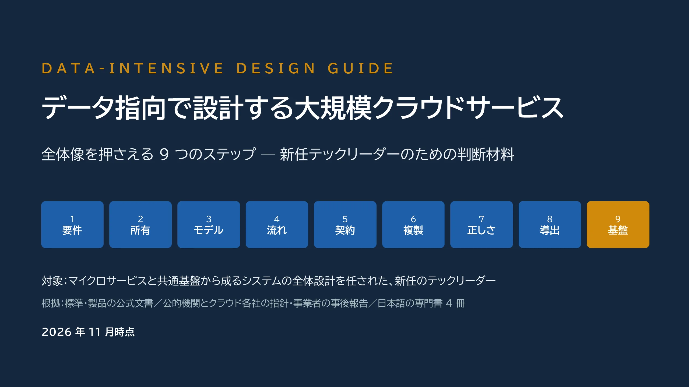
スライド 1 のテキストと解説
本資料は、マイクロサービスと共通基盤から成る大規模なクラウドサービスの全体設計を任された、新任のテックリーダーに向けたガイドです。主題は、個々のデータベース製品の解説ではありません。データ指向の考え方で、システムの全体像を、どんな順番で考えて押さえるかです。その順番を 9 つのステップにまとめました。要件、所有、モデル、流れ、契約、複製、正しさ、導出、基盤の 9 つです。各ステップで、判断の分かれ目と、設計レビューで問うことを示します。根拠は、標準と製品の公式文書、公的機関やクラウド各社の指針と事業者の事後報告、日本語の専門書 4 冊の 3 種類です。内容は 2026 年 11 月時点の調査にもとづきます。製品の版や既定値は変わるので、使うときは確認月を見てください。
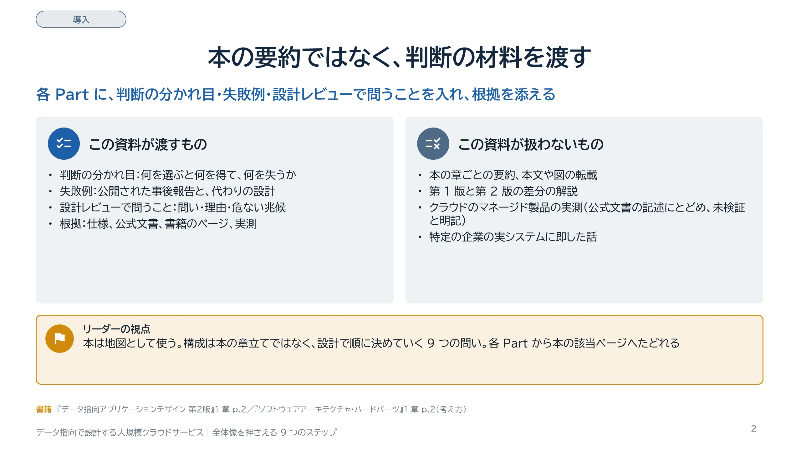
スライド 2 のテキストと解説
この資料が何で、何でないかを先に決めておきます。きっかけは『データ指向アプリケーションデザイン 第2版』ですが、この資料は本の要約ではありません。本の 1 章は、本書を、どの技術をどう組み合わせるかの判断を助けるガイドと位置づけ、適切な問いを立てる方法を学ぶと述べています。この資料もその姿勢を引き継ぎ、本の章立てではなく、設計で順に決めていく問いで構成を組み直しました。各 Part には、何を選ぶと何を得て何を失うかの表、公開された事後報告などの失敗例、設計レビューで問うことを入れています。扱わないものも決めています。章ごとの要約、第 1 版と第 2 版の差分、クラウドのマネージド製品の実測、特定の企業の実システムの話です。マネージド製品は公式文書の記述にとどめ、未検証と明記します。次のスライドで、想定する読者を確認します。
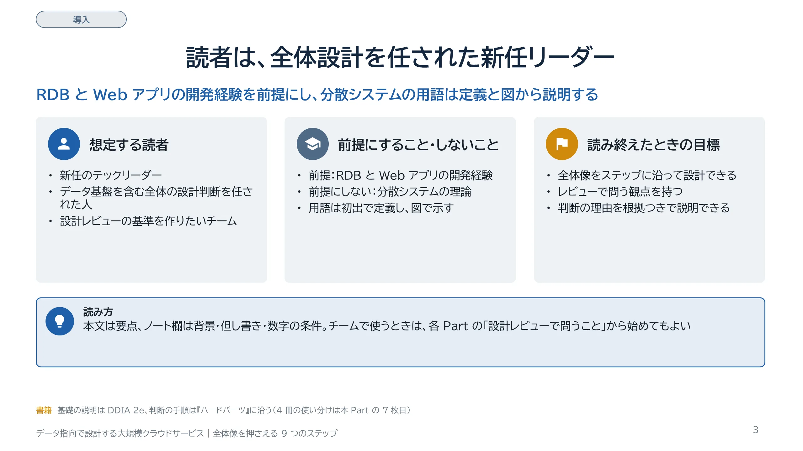
スライド 3 のテキストと解説
想定する読者と前提です。読者は、データ基盤を含むシステム全体の設計判断を任された、新任のテックリーダーです。リレーショナルデータベースと Web アプリケーションの開発経験はあるものとします。一方で、分散システムの理論を体系的に学んでいることは前提にしません。複製、分離レベル、合意といった用語は、初めて出るところで定義と図から説明します。読み終えたときの目標は 3 つです。全体像を、決まったステップに沿って自分で設計できること。設計レビューで問うべき観点を持つこと。そして、判断の理由を、一次資料、本の該当ページ、実測で説明できることです。本文は要点だけを書き、背景、但し書き、数字の条件はノート欄に厚めに書いています。チームで読むときは、各 Part の「設計レビューで問うこと」のスライドから使い始めることもできます。
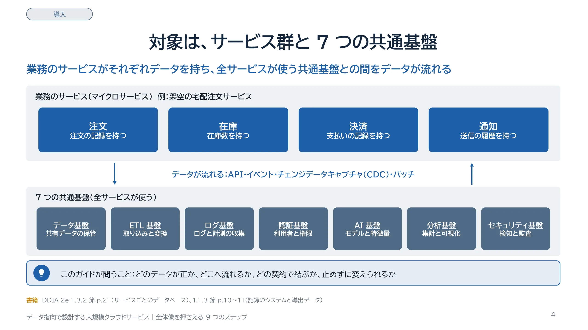
スライド 4 のテキストと解説
この資料が対象にするシステムの絵です。上の段は業務のサービスで、例として架空の宅配注文サービスを使います。注文、在庫、決済、通知の 4 つのサービスがあり、それぞれが自分のデータを持ちます。DDIA 第 2 版の 1 章も、データベースはサービスごとに別々に持ち、互いに共有しない形が一般的だと述べています。下の段は、全サービスが使う 7 つの共通基盤です。データ基盤、ETL 基盤、ログ基盤、認証基盤、AI 基盤、分析基盤、セキュリティ基盤です。ETL は、データを取り出し、変換し、別の場所に書き込む処理のことです。上下の間を、API、イベント、チェンジデータキャプチャ、バッチでデータが流れます。チェンジデータキャプチャは CDC と略し、データベースの変更を取り出して他へ伝える仕組みです。このガイドは、この絵の中で、どのデータが正か、どこへ流れるか、どの契約で結ぶか、止めずに変えられるかを順に問います。各基盤への当てはめは Part 13 と 14 で扱います。図は説明のための模式図です。
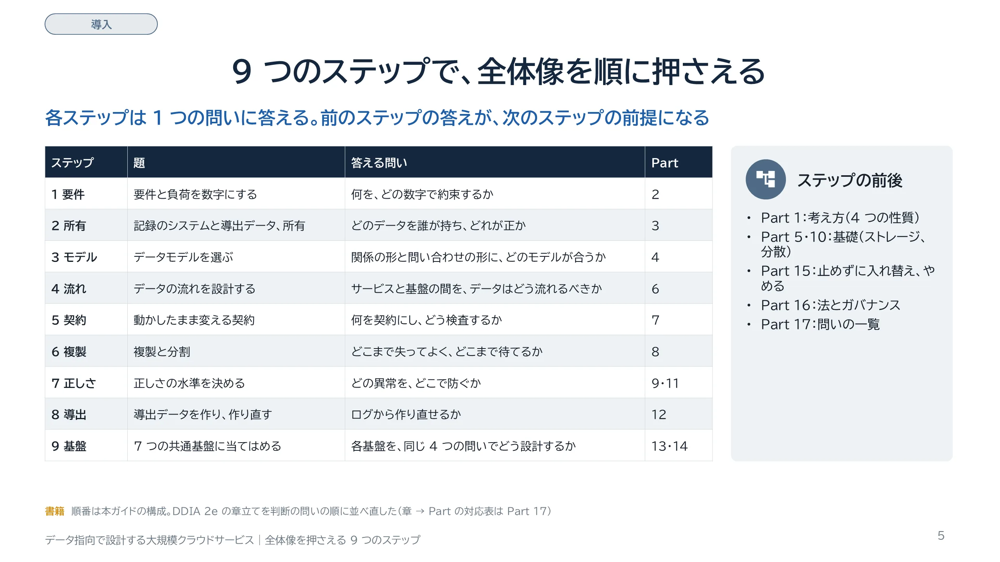
スライド 5 のテキストと解説
このガイドの全体地図です。全体像を押さえる手順を、9 つのステップに分けました。ステップ 1 は、何をどの数字で約束するかを決めます。ステップ 2 は、どのデータを誰が持ち、どれが正かを決めます。ステップ 3 はデータモデル、ステップ 4 はサービスと基盤の間のデータの流れ、ステップ 5 は動かしたまま変えるための契約です。ステップ 6 は複製と分割、ステップ 7 は正しさの水準で、サービスをまたぐ整合性は Part 11 で続けます。ステップ 8 は導出データの作り方と作り直し、ステップ 9 は 7 つの共通基盤への当てはめです。この順番は本ガイドの構成で、本の章立てとは違います。ステップの前後には、考え方を扱う Part 1、基礎を扱う Part 5 と 10、入れ替えと廃止を扱う Part 15、法とガバナンスを扱う Part 16、まとめの Part 17 があります。右上の表示は、Part 2 以降で、そのスライドがどのステップの話かを示します。全部で 18 Part です。
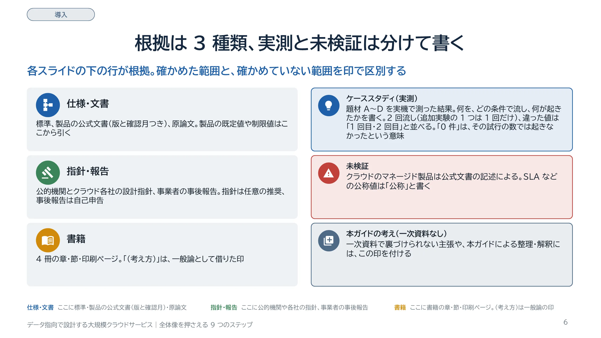
スライド 6 のテキストと解説
根拠の読み方です。各スライドの下の行に、根拠を 3 種類に分けて書いています。1 つ目は仕様・文書で、標準、製品の公式文書、原論文です。公式文書には版と確認した月を添えます。2 つ目は指針・報告で、公的機関やクラウド各社の設計指針と、事業者が公開した事後報告です。指針は任意の推奨で、規範ではありません。事後報告は事業者の自己申告です。3 つ目は書籍で、章、節、印刷ページを書きます。「考え方」と添えたものは、一般論として借りたという印です。右側は、確かさの区別です。ケーススタディ（実測）の印は、題材 A から D を実機で測った結果です。実験は 2 回流し（追加実験の 1 つは 1 回だけ）、値が違えば両方を並べました。0 件は、その試行の数では起きなかったという意味です。未検証の印は、クラウドのマネージド製品のように、公式文書の記述だけにもとづく部分です。公称値は公称と書きます。そして、一次資料で裏づけられない主張には「本ガイドの考え」の印を付けます。印の無い主張は、下の行の根拠にもとづくものです。
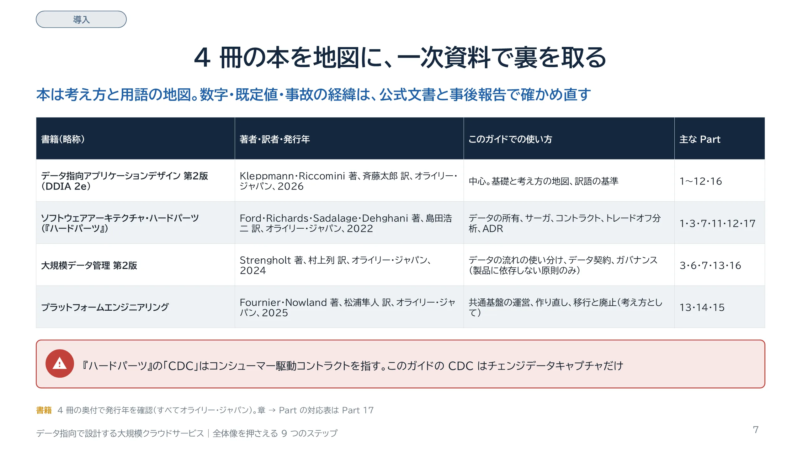
スライド 7 のテキストと解説
参考にした 4 冊と使い分けです。中心は『データ指向アプリケーションデザイン 第2版』で、以下では DDIA 2e と略します。基礎と考え方の地図として使い、訳語もこの本に揃えます。たとえば、記録のシステム、導出データ、逐次更新、発展性です。ただし、索引と列指向は、読みやすさのためにこのガイドが言い換えた語で、本ではインデックス、カラム指向と書かれています。『ソフトウェアアーキテクチャ・ハードパーツ』は、データの所有、サーガ、コントラクト、トレードオフ分析の手順、ADR に使います。『大規模データ管理 第2版』は、データの流れの使い分け、データ契約、ガバナンスに使い、製品に依存しない原則だけを引きます。『プラットフォームエンジニアリング』は、共通基盤の運営、作り直し、移行と廃止に、考え方として使います。発行年は 4 冊の奥付で確かめました。注意が 1 つあります。『ハードパーツ』の CDC はコンシューマー駆動コントラクトのことです。このガイドで CDC と書くときは、チェンジデータキャプチャだけを指します。書籍に無い部分、たとえば共通基盤が止まったときのふるまいは、事後報告と公式文書で補います。ページはすべて印刷ページです。
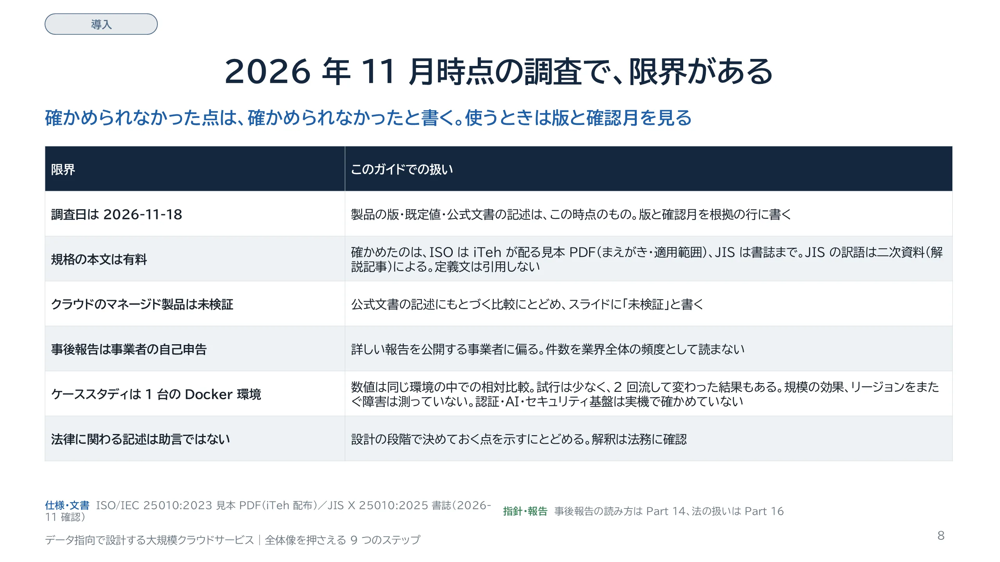
スライド 8 のテキストと解説
この資料の調査日と限界です。調査日は 2026 年 11 月 18 日です。製品の版、既定値、公式文書の記述はこの時点のもので、根拠の行に版と確認月を書いています。限界は 5 つあります。1 つ目、ISO/IEC 25010:2023 と JIS X 25010:2025 の本文は有料です。一次資料で確かめられたのは、ISO は規格販売サイトの iTeh が配布する見本 PDF のまえがきと適用範囲、JIS は日本規格協会の書誌までです。JIS の日本語の訳語と副特性の定義は、JIS を出典に挙げる解説記事という二次資料によります。そのため定義文は引用せず、特性の名前の対応を使います。2 つ目、クラウドのマネージド製品は実機で確かめていません。公式文書の記述にもとづく比較で、未検証と書きます。3 つ目、事後報告は事業者の自己申告で、詳しい報告を公開する事業者に偏ります。件数を業界全体の頻度として読まないでください。4 つ目、ケーススタディは 1 台のマシンの Docker 環境です。数値は同じ環境の中での相対比較で、規模の効果や、リージョンをまたぐ障害は測っていません。試行は少なく、2 回流して結果が変わったものもあります。5 つ目、法律に関わる記述は助言ではありません。解釈は法務に確認してください。ここまでが導入です。次の Part 1 から本題に入ります。出典の補足：ISO/IEC 25010:2023 は、iTeh が配布する見本 PDF（ISO の文書の冒頭のページ）で確かめました。ISO 自身の閲覧サイトでは開いていません。JIS X 25010:2025 の書誌は日本規格協会（JSA）。
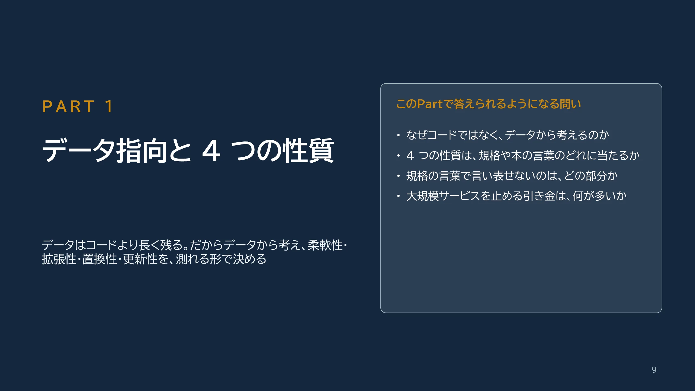
スライド 9 のテキストと解説
Part 1 では、このガイド全体の考え方を固めます。最初に、なぜコードではなくデータから考えるのかを確かめます。サービスのコードは書き直され、製品は入れ替わりますが、データと、その形を決めた判断は長く残ります。次に、このガイドの題にある 4 つの性質、柔軟性・拡張性・置換性・更新性を定義します。そのうち 3 つは、JIS X 25010:2025 の特性と副特性の名前に対応づけられます。更新性は同じ名前のものが無いので、このガイドで定義します。この対応づけは、規格や本の主張ではなく、このガイドの解釈です。そのうえで、規格の言葉では言い表しにくい 3 つの場面、稼働中の切り替え、データの移行、新旧の版の混在が、このガイドの主題であることを示します。後半では、公開された事後報告 19 件の引き金を数え、性質を測れる形にする方法と、戻しにくい決定の見分け方を扱います。最後に、設計レビューで問うことをまとめます。
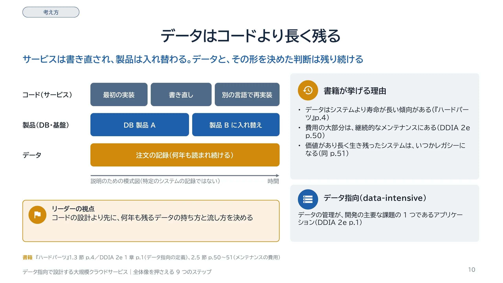
スライド 10 のテキストと解説
なぜデータから考えるのかです。『ソフトウェアアーキテクチャ・ハードパーツ』の 1 章は、システムやアーキテクチャが入れ替わった後も、データのほうが長く残りやすいと述べ、だからデータの扱いには綿密な設計が要るとしています。DDIA 第 2 版の 2 章は、ソフトウェアにかかる費用の大半は、最初の開発ではなく、その後も続くメンテナンスのほうにある、というのが広く知られた認識だと書いています。そして、今日作るシステムも、価値があって長く生き残れば、いつかはレガシーシステムになる、とも述べています。左の図は、その関係を模式的に描いたものです。サービスのコードは何度か書き直され、データベースの製品も入れ替わります。その間も、注文の記録のようなデータは読まれ続けます。特定のシステムの記録ではなく、説明のための図です。右下は、題名にある「データ指向」の定義です。DDIA はこの語を、データの管理が開発の主要な課題の 1 つであるアプリケーション、という意味で使います。次のスライドで、データ指向で見るとは具体的に何を見ることかを示します。
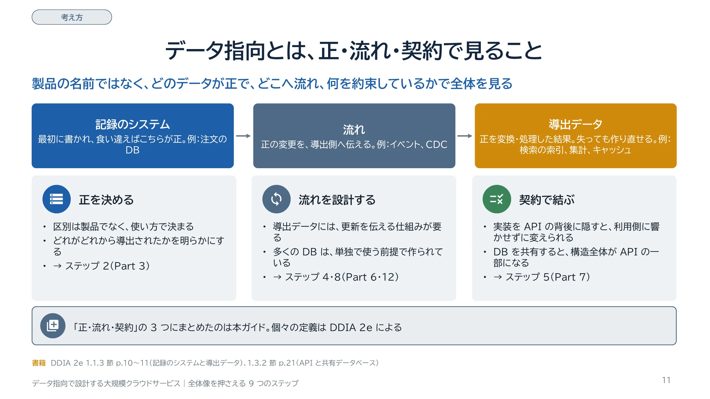
スライド 11 のテキストと解説
データ指向で見るとは、3 つを見ることだと、このガイドは整理します。1 つ目は、どのデータが正かです。DDIA は、新しいデータが最初に書き込まれ、食い違ったときに正とされるものを「記録のシステム」と呼びます。それを変換したり処理したりして作り、失っても作り直せるものが「導出データ」です。キャッシュ、インデックス、マテリアライズドビューが例です。この区別は製品ではなく、使い方で決まります。2 つ目は流れです。導出データがあるなら、正が変わったときに導出側を更新する仕組みが要ります。DDIA は、多くのデータベースが、自分 1 つだけが使われる前提で作られていると指摘しています。3 つ目は契約です。サービスは実装を API の背後に隠すことで、利用側に影響を与えずに中を変えられます。逆に、データベースを共有すると、その構造全体が実質的に API の一部になり、変えにくくなります。この 3 つを、ステップ 2、4、5 で順に設計します。3 つにまとめたのは本ガイドの整理で、個々の定義は DDIA によります。
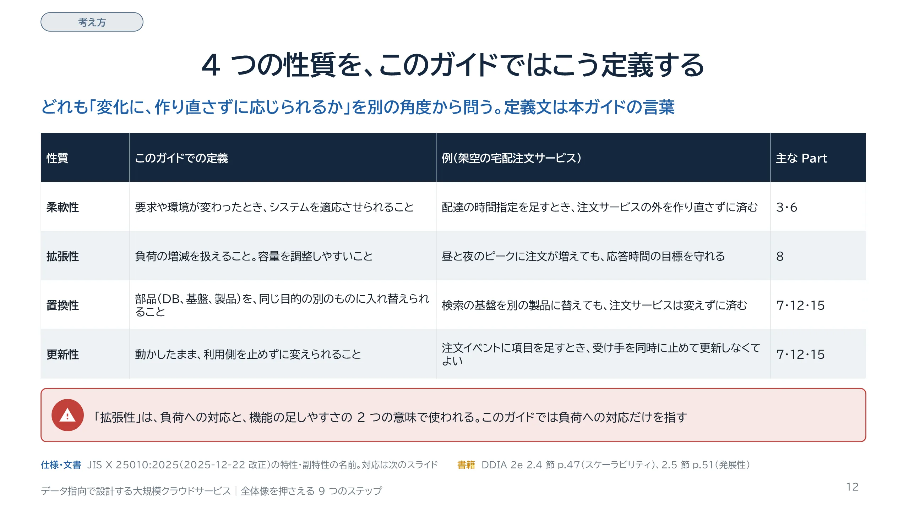
スライド 12 のテキストと解説
このガイドの題にある 4 つの性質の定義です。ここに書いた定義文は、このガイドの言葉です。拡張性と置換性は、JIS X 25010:2025 の副特性の定義を下敷きにして、短く言い換えました。その定義は、JIS を出典に挙げる解説記事という二次資料で確かめたもので、規格の本文では確かめていません。更新性は、このガイドが新しく定義しました。柔軟性は、要求や環境が変わったとき、システムを適応させられることです。拡張性は、負荷の増減を扱えること、容量を調整しやすいことです。置換性は、データベースや基盤などの部品を、同じ目的の別のものに入れ替えられることです。更新性は、動かしたまま、利用側を止めずに変えられることです。右の列には、架空の宅配注文サービスでの例を書きました。注意が要るのは拡張性です。この言葉は、負荷への対応という意味と、機能を足しやすいという意味の 2 通りで使われます。このガイドでは、負荷への対応だけを拡張性と呼びます。DDIA 第 2 版も、スケーラビリティを、増大する負荷に対処するシステムの能力としています。機能の足しやすさは、柔軟性と更新性の中で扱います。次のスライドで、この 4 つが規格の言葉とどう対応するかを見ます。会議では、最初に意味を確かめてください。
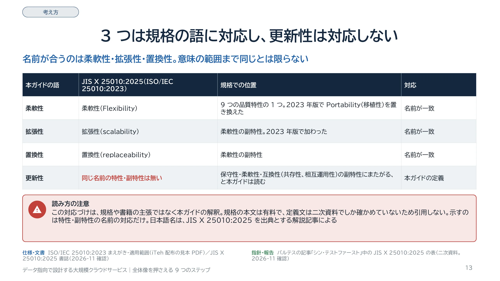
スライド 13 のテキストと解説
4 つの性質と、品質の規格の言葉との対応です。ISO/IEC 25010 は製品品質のモデルを定める国際規格で、第 2 版は 2023 年 11 月です。対応する JIS X 25010:2025 は 2025 年 12 月 22 日の改正です。JIS は ISO/IEC 25010:2023 の一致規格（IDT）だと、日本規格協会の書誌にあります。2023 年版の適用範囲（1 Scope）によると、品質特性は 9 つです。まえがきによると、それまでの Portability が Flexibility に置き換わり、その副特性に scalability が加わりました。JIS を出典に挙げる解説記事の表では、柔軟性の副特性に、適応性、拡張性、インストール性、置換性が並びます。この表に英語名は無く、scalability を拡張性、replaceability を置換性と組にしたのは、このガイドです。4 つのうち 3 つは名前が一致し、更新性には同じ名前のものがありません。但し書きが 2 つあります。まず、この対応づけは規格や書籍の主張ではなく、このガイドの解釈です。次に、規格の本文は有料で、定義文は二次資料でしか確かめられませんでした。そのため定義文は引用せず、名前の対応だけを示しています。一次資料で確かめたのは、ISO/IEC 25010:2023 の見本 PDF のまえがきと適用範囲、それに日本規格協会の書誌です。見本 PDF は、規格販売サイトの iTeh が配布しているものです。更新性に近い語として、規格には互換性の副特性の共存性と相互運用性もあります。出典の補足：二次資料は、バルテスのブログ記事「シン・テストファースト」の中の表で、JIS X 25010:2025 を出典に挙げています。
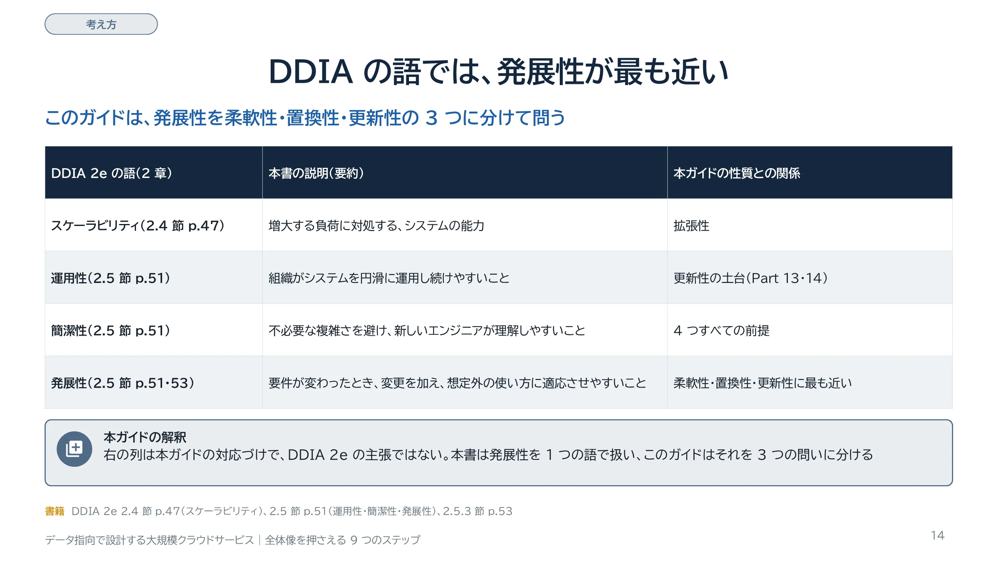
スライド 14 のテキストと解説
DDIA 第 2 版の言葉との対応です。DDIA の 2 章は非機能要件として 4 つを扱います。パフォーマンスと信頼性、それにスケーラビリティとメンテナンス性です。スケーラビリティは、増大する負荷に対処するシステムの能力です。これはこのガイドの拡張性に当たります。本の副題も「信頼性、拡張性、保守性」となっています。メンテナンス性については、3 つの原則が挙げられています。運用性は、組織がシステムを円滑に運用し続けやすいこと。簡潔性は、不必要な複雑さを避けて、新しいエンジニアが理解しやすいこと。発展性は、要件が変わったときに変更を加え、想定外の使い方に適応させやすいことです。4 つの性質のうち、柔軟性・置換性・更新性に最も近いのは発展性です。このガイドは、発展性を、何を変えるのか、入れ替えるのか、止めずに変えるのか、で 3 つに分けて問います。運用性は更新性の土台、簡潔性は全体の前提と位置づけました。右の列はこのガイドの対応づけで、DDIA がそう述べているわけではありません。
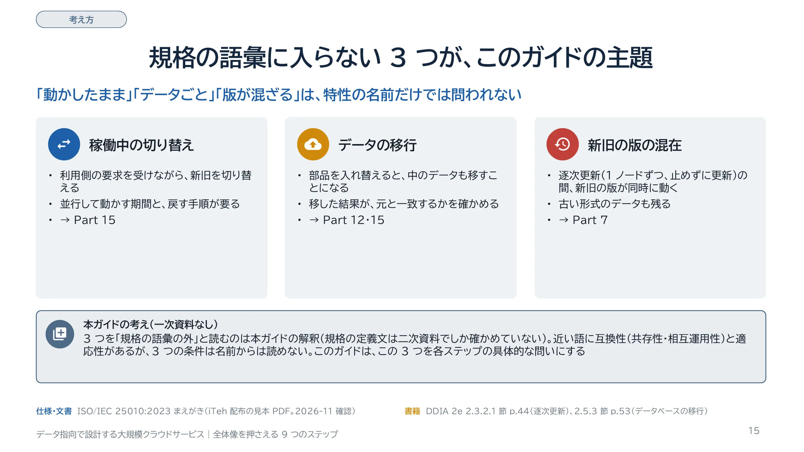
スライド 15 のテキストと解説
このガイドの主題です。置換性や保守性という名前だけで設計を見ると、抜けやすい場面が 3 つあると、このガイドは考えます。1 つ目は稼働中の切り替えです。利用側の要求を受けながら新旧を切り替えるには、並行して動かす期間と、戻す手順が要ります。これは Part 15 で扱います。2 つ目はデータの移行です。部品を入れ替えるときは、中のデータも移し、移した結果が元と一致するかを確かめる必要があります。DDIA は、データベースの移行で旧システムに戻せない場合、戻せる場合より危険がはるかに高いと述べています。Part 12 と 15 で扱います。3 つ目は新旧の版の混在です。逐次更新は、1 ノードずつ再起動して、止めずに更新する方法です。その間は、新しいコードと古いコード、新しい形式と古い形式のデータが同時に動きます。これは Part 7 で扱います。この 3 つを規格の語彙の外と読むのは、このガイドの解釈です。規格の定義文は二次資料でしか確かめていないためです。規格の中で近い語は、互換性の副特性の共存性と相互運用性、柔軟性の副特性の適応性です。ただ、稼働中に、データごと、版が混ざったまま、という条件は、これらの名前からは読み取れません。
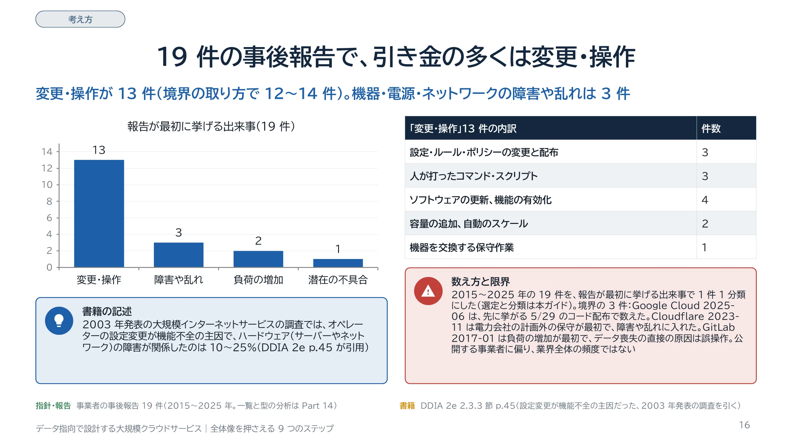
スライド 16 のテキストと解説
大規模サービスを止めた引き金を数えました。対象は、このガイドが選んだ 19 件の公開された事後報告です。2015 年から 2025 年の、AWS、Google Cloud、Cloudflare などの報告です。数え方は、事業者の報告が最初に挙げる出来事で、1 件を 1 つに分類しました。分類はこのガイドによるものです。結果は、変更と操作が 13 件で、境界の取り方によって 12 から 14 件の幅があります。内訳は、設定・ルール・ポリシーの変更と配布が 3 件、人が打ったコマンドやスクリプトが 3 件、ソフトウェアの更新や機能の有効化が 4 件、容量の追加と自動のスケールが 2 件、機器を交換する保守作業が 1 件です。機器・電源・ネットワークの障害や乱れは 3 件で、AWS DynamoDB の 2015 年、Cloudflare の 2023 年 11 月と 2020 年 11 月の件です。負荷の増加が 2 件、変更を伴わない潜在的な不具合の発現が 1 件でした。境界の判断が 3 件あります。Google Cloud の 2025 年 6 月の件は、報告が先に挙げるのが 5 月 29 日のコードの配布なので、当日のポリシーの変更ではなく、ソフトウェアの更新に数えました。Cloudflare の 2023 年 11 月の件は、最初の出来事が電力会社の計画外の保守で、障害や乱れに数えました。GitLab の 2017 年の件は、最初の出来事が負荷の増加なのでそこに入れましたが、データを失った直接の原因は誤操作です。GitHub の 2018 年の件は、故障しかけた機器を交換する保守作業で、変更と操作に入れています。左下は書籍の記述で、2003 年に発表された調査です。19 件と同じ時代の数字ではありません。報告を公開する事業者に偏るので、業界全体の頻度でもありません。型の分析は Part 14 で行います。
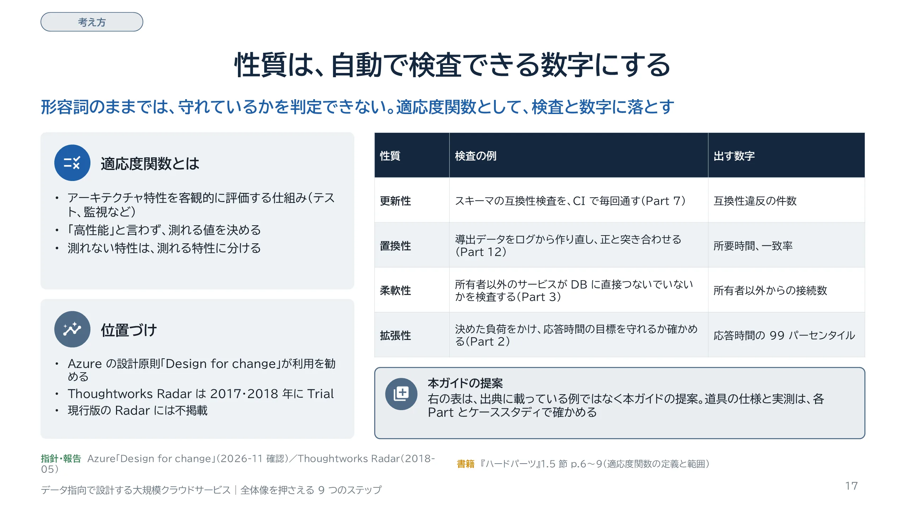
スライド 17 のテキストと解説
4 つの性質を、測れる形にする方法です。『ハードパーツ』は、適応度関数を、アーキテクチャ特性やその組み合わせを客観的に評価する、あらゆる仕組みと紹介しています。もとは『進化的アーキテクチャ』の定義です。テストでも監視でも構いません。同書は、「高パフォーマンスな」サイトが欲しいと言うのではなく、測定できる客観的な値を定めるよう求めます。それ自体を測れない複合的な特性は、測れる特性に分解します。Azure Architecture Center の設計原則「Design for change」も、適応度関数の利用を勧めています。Thoughtworks の Technology Radar では、2017 年 11 月と 2018 年 5 月に Trial として載り、現行の版には載っていません。右の表は、4 つの性質に当てはめた例です。これは出典に載っている例ではなく、このガイドの提案です。99 パーセンタイルは、100 回のうち遅いほうから 1 回を除いた応答時間の上限のことで、Part 2 で説明します。道具の仕様は各 Part で確かめます。出典の補足：Azure の文書は 2026 年 11 月に確認。Technology Radar は 2018-05 の号で Trial。
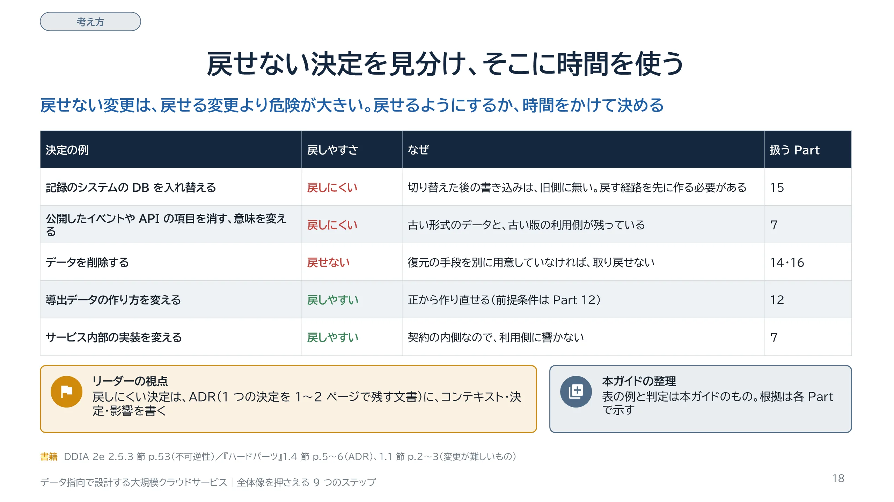
スライド 18 のテキストと解説
後戻りしにくい決定の見分け方です。DDIA 第 2 版は、大規模なシステムで変更を難しくする主な要因の 1 つに、不可逆性を挙げています。例はデータベースの移行です。新しいシステムに問題が出たとき、旧システムに戻せないなら、戻せる場合より危険がはるかに高くなります。そして、不可逆性を小さくすれば柔軟性が上がる、と述べています。表は、この考え方を、このガイドが扱う決定に当てはめたものです。記録のシステムのデータベースの入れ替え、公開したイベントや API の項目の削除、データの削除は、戻しにくい側に置きました。導出データの作り方や、サービス内部の実装は、戻しやすい側です。この判定はこのガイドの整理で、根拠は各 Part で示します。大事なのは、戻しにくい決定を見分け、戻す経路を先に用意するか、時間をかけて決めることです。その決定は ADR に残します。ADR は 1 つの決定を 1〜2 ページで書く短い文書で、『ハードパーツ』はコンテキスト、決定、影響の 3 節で書いています。
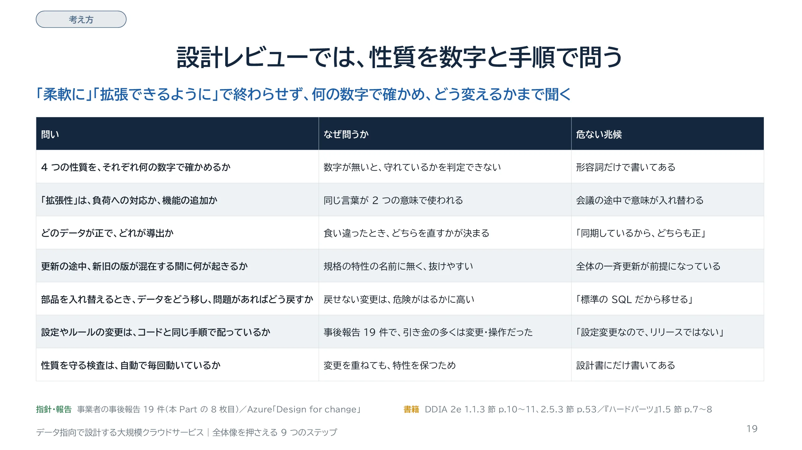
スライド 19 のテキストと解説
Part 1 の内容を、設計レビューで使う問いにしました。1 つ目は、4 つの性質をそれぞれ何の数字で確かめるかです。形容詞だけで書かれた性質は、守れているかを判定できません。2 つ目は、拡張性という言葉の意味です。負荷への対応と機能の追加が、会議の途中で入れ替わることがあります。3 つ目は、どのデータが正で、どれが導出かです。これが決まっていないと、食い違ったときにどちらを直すかが決まりません。4 つ目は、更新の途中で新旧の版が混在する間に何が起きるかです。規格の特性の名前に無いので、抜けやすい点です。5 つ目は、部品を入れ替えるときのデータの移し方と戻し方です。6 つ目は、設定やルールの変更を、コードと同じ手順で配っているかです。19 件の事後報告では、引き金の多くが変更や操作でした。7 つ目は、性質を守る検査が自動で毎回動いているかです。危ない兆候の列は、よくある答えの例として、このガイドが挙げたものです。各ステップの詳しい問いは、それぞれの Part と Part 17 にまとめます。
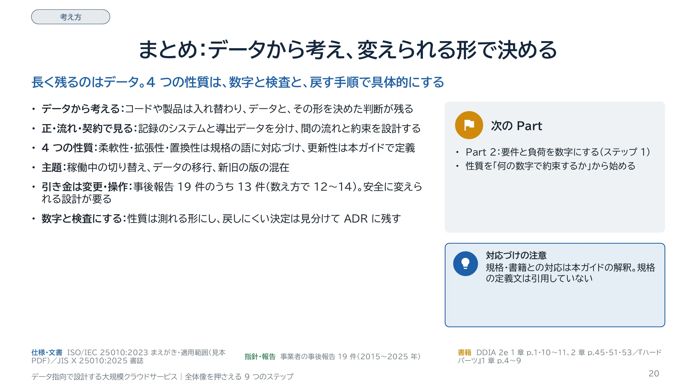
スライド 20 のテキストと解説
Part 1 のまとめです。1 つ目、データから考えます。コードや製品は入れ替わりますが、データと、その形を決めた判断は残ります。2 つ目、全体を、正・流れ・契約で見ます。記録のシステムと導出データを分け、その間の流れと約束を設計します。3 つ目、4 つの性質です。柔軟性・拡張性・置換性は JIS X 25010:2025 の特性と副特性の名前に対応づけ、更新性はこのガイドで定義しました。対応づけはこのガイドの解釈で、規格の定義文は引用していません。4 つ目、このガイドの主題は、稼働中の切り替え、データの移行、新旧の版の混在です。5 つ目、19 件の事後報告では、引き金の多くが変更や操作でした。このガイドの数え方で 13 件、境界の取り方で 12 から 14 件です。変更を安全に行える設計が要ります。6 つ目、性質は測れる数字と自動の検査にし、戻しにくい決定を見分けて ADR に残します。次の Part 2 はステップ 1 です。性質を、何の数字で約束するかから始めます。パーセンタイルや SLO といった数字の書き方を扱います。
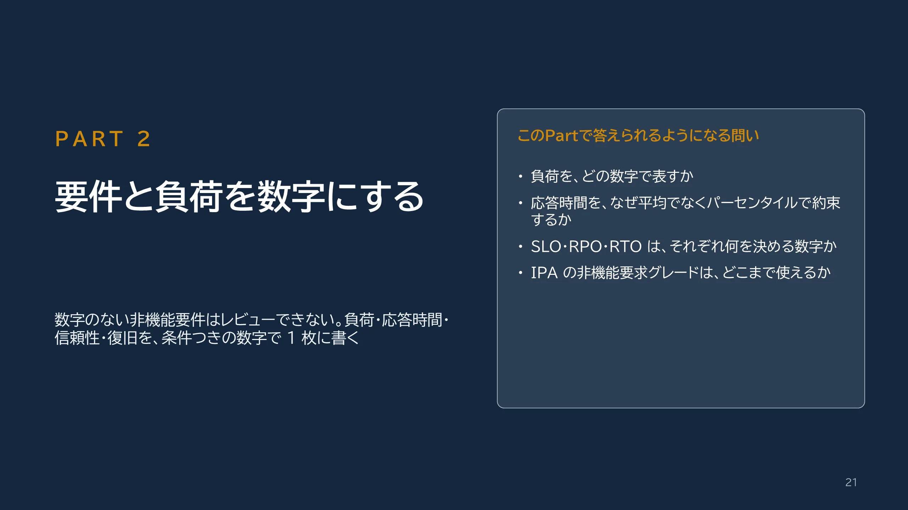
スライド 21 のテキストと解説
Part 2 は、9 つのステップの最初、要件と負荷を数字にするステップです。結論を先に言うと、数字のない非機能要件はレビューできません。「高速」「高可用」「拡張性がある」と書かれた設計書には、賛成も反対もできないからです。この Part では、負荷を読み書きの比とファンアウトで表すこと、応答時間を平均ではなくパーセンタイルで約束すること、信頼性を SLI・SLO・エラーバジェットで表すこと、復旧の目標を RPO と RTO で表すことを順に見ます。そのうえで、障害と機能不全を分けて「どの障害に耐えるか」を先に決めること、スケールの方向と、早すぎる分散を避ける判断を扱います。日本でよく使われる IPA の非機能要求グレードの使いどころと限界も確認します。最後に、架空の宅配注文サービスを例に、要件を 1 枚に書く型を示します。主な根拠は『データ指向アプリケーションデザイン 第2版』の 2 章と、Google の SRE 本です。
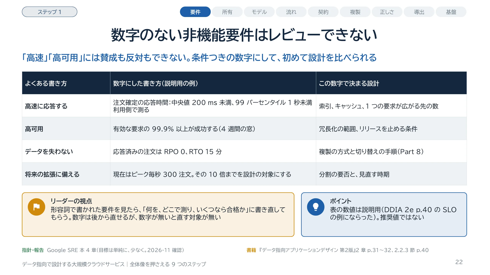
スライド 22 のテキストと解説
最初に、なぜ数字にするのかを確認します。表の左は設計書によくある書き方、中央はそれを数字にした書き方、右はその数字が決まると設計の何が決まるかです。たとえば「高速に応答する」は、どの操作の、どのパーセンタイルが、何ミリ秒未満か、どこで測るか、まで書きます。表の数値は、DDIA 第 2 版の SLO の例にならった説明用の値で、推奨値ではありません。「データを失わない」は RPO と RTO に、「将来の拡張に備える」は現在の負荷と、何倍までを設計の対象にするかに書き換えます。同書が 2 章で扱うのは性能・信頼性・スケーラビリティ・メンテナンス性で、セキュリティなどは範囲外と明記しています。この Part は前の 3 つを数字にします。発展性は Part 7 と Part 15 で扱います。
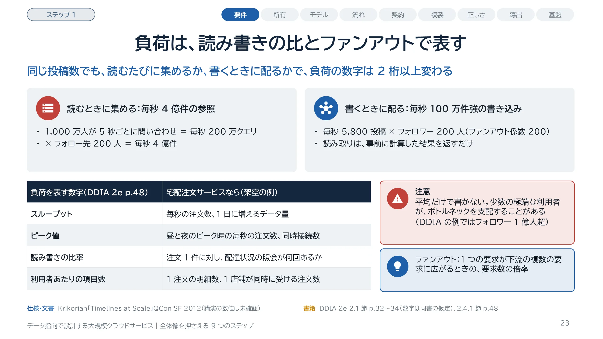
スライド 23 のテキストと解説
DDIA 第 2 版の 2 章にある、ホームタイムラインの事例です。数字は同書が置いた仮定です。1 日 5 億件の投稿は平均で毎秒 5,800 件、利用者は平均 200 人をフォローし、200 人にフォローされているとします。読むたびにフォロー先の投稿を集める設計では、同時に 1,000 万人が 5 秒ごとに問い合わせると毎秒 200 万クエリになり、フォロー先 200 人分を掛けると毎秒 4 億件の参照になります。一方、投稿のたびに各フォロワーのタイムラインへ配っておく設計では、毎秒 5,800 件に 200 を掛けた、毎秒 100 万件強の書き込みで済みます。1 つの要求が下流の複数の要求に広がる倍率を、ファンアウトと呼びます。ここから言えるのは、負荷は「利用者数」だけでは表せず、読み書きの比率、ピーク、利用者あたりの項目数まで書く必要がある、ということです。極端な利用者が全体を支配することもあります。事前に配るタイムラインは導出データで、Part 3 で扱います。表の右の列は架空の例です。
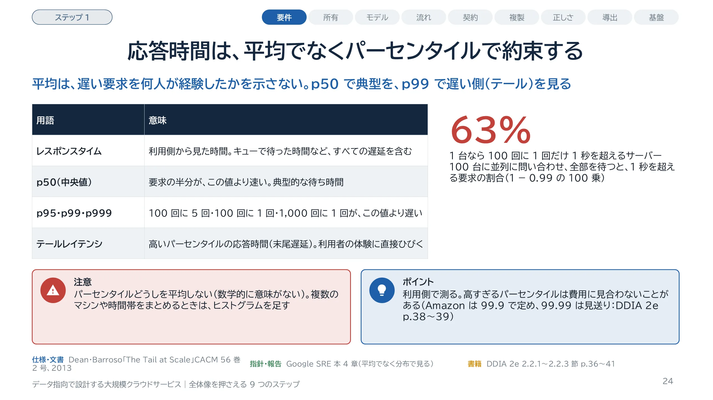
スライド 24 のテキストと解説
DDIA 第 2 版は、レスポンスタイムをクライアントから見た時間と定義し、すべての遅延を含むとしています。サービスタイムにはキューで待った時間が含まれないので、利用側で測ることが重要です。応答時間を速い順に並べた真ん中が中央値、p50 で、典型的な待ち時間を表します。p99 は、100 回に 1 回がそれより遅いという値です。高いパーセンタイルをテールレイテンシ、末尾遅延と呼びます。右の 63% は、Dean と Barroso の 2013 年の論文の計算です。1 台だけなら 100 回に 1 回しか 1 秒を超えないサーバーでも、100 台に並列に問い合わせて全部を待つと、要求の 63% が 1 秒を超えます。ただし、極端に高いパーセンタイルの最適化は費用に見合わないことがあります。DDIA は、Amazon が内部サービスの要件を 99.9 パーセンタイルで定め、99.99 は見送った例を挙げています。監視では、パーセンタイルどうしを平均しないことにも注意します。
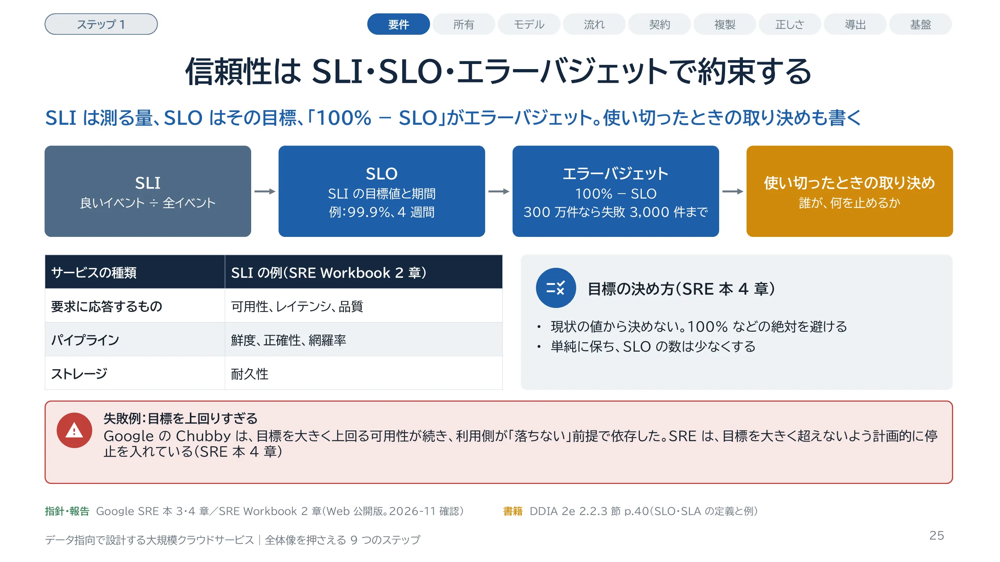
スライド 25 のテキストと解説
出どころは Google の SRE 本と SRE Workbook です。1 社の実践の公開で、規範ではありません。SLI はサービスの水準を測る量で、Workbook は「良いイベントの数を全イベントの数で割ったもの」として書くことを勧めています。SLO は、その SLI の目標値です。エラーバジェットは 100% から SLO を引いたものです。Workbook の例では、成功率 99.9% の SLO で 4 週間に 300 万件の要求があれば、3,000 件までの失敗が予算です。予算が残る間はリリースでき、使い切ったらリリースを止めて信頼性の作業に回します。そのために、誰が何をするかを書いた文書を関係者が承認しておきます。目標は、現状の値から決めず、100% のような絶対を避けます。下は、目標を上回りすぎた例です。Google のロックサービス Chubby は可用性が高く、利用側が落ちない前提で依存しました。そこで計画的に停止を入れています。共通基盤の SLO を考えるときに思い出したい例です。
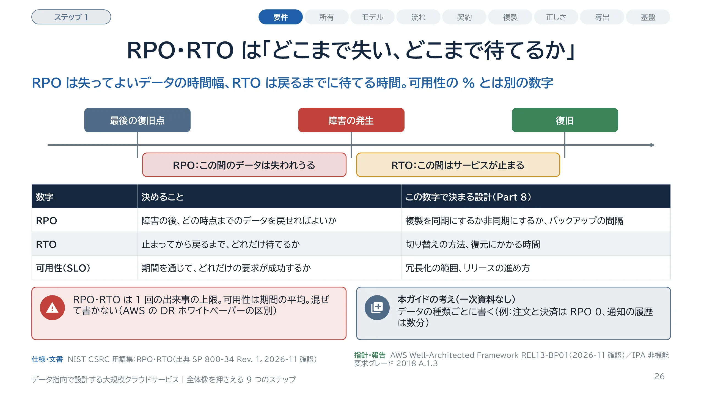
スライド 26 のテキストと解説
RPO は目標復旧時点で、NIST の用語集は「停止の後に、データを回復しなければならない時点」と定義しています。AWS の Well-Architected Framework は、許容できるデータ損失の上限で、最後に復旧できる時点から障害までの時間で測る、と説明します。RTO は目標復旧時間で、AWS の説明では、サービスの中断から復旧までに許容できる最大の時間です。NIST の用語集は RTO を、任務や業務に悪影響が出る前に、システムの構成要素が復旧の段階にいられる時間の全体、と定義しています。どちらも 1 回の出来事に対する上限です。AWS の災害復旧のホワイトペーパーは、災害復旧の目標は 1 回の出来事に対するもので、可用性の目標は期間を通した平均の値だと区別しています。RPO と RTO は、Part 8 の複製の方式を決める入力です。RPO 0 を求めたときの費用も Part 8 で見ます。右下は本ガイドの考えで、データの種類ごとに書くことを勧めます。NIST は米国連邦機関向け、AWS は自社クラウドの利用者向けの任意の指針です。IPA のグレードにも RPO・RTO・RLO の項目があります。出典の補足：AWS は、Well-Architected Framework の REL13-BP01 と、ホワイトペーパー「Disaster Recovery of Workloads on AWS」の Introduction（どちらも 2026-11 確認）。
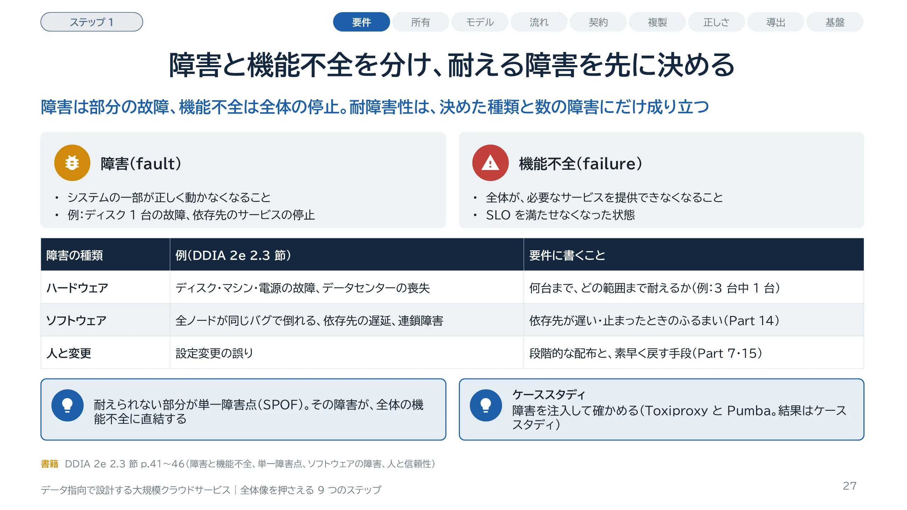
スライド 27 のテキストと解説
DDIA 第 2 版の訳語に揃えて、fault を障害、failure を機能不全と呼びます。障害は、システムの一部が正しく動かなくなることです。機能不全は、システム全体が利用者に必要なサービスを提供できなくなることで、同書は SLO を満たせなくなった状態と説明しています。障害があっても機能不全にしないことを耐障害性と呼びます。耐障害性は常に、特定の種類の障害の、特定の数に対してだけ成り立ちます。だから要件には、どの種類を、いくつまで耐えるかを書きます。同書は、ソフトウェアの障害は多くのノードが同じバグを抱えるので強く相関し、互いに相関しないハードウェアの障害より、はるかに多くの機能不全を起こす傾向があると述べています。また、2003 年に発表された大規模インターネットサービスの調査も引いています。機能不全の主な原因はオペレーターが行った設定変更で、サーバーやネットワークといったハードウェアの障害が関係したのは 10 から 25% の事例だった、という結果です。20 年以上前の調査である点に注意してください。耐障害性は、わざと障害を起こして確かめます。ケーススタディでも障害を注入します。
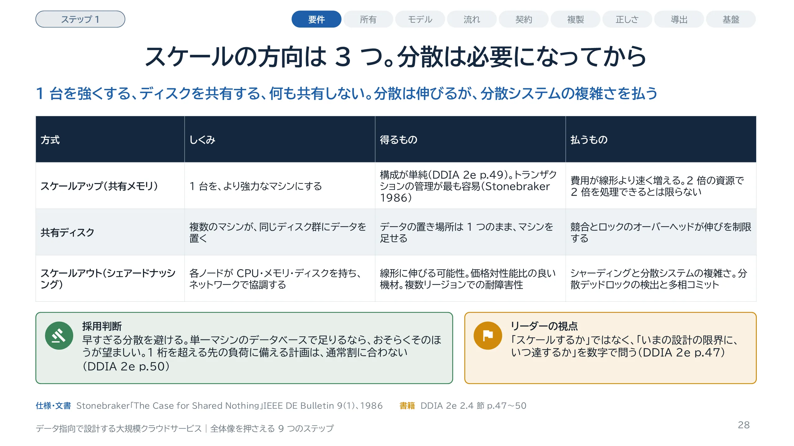
スライド 28 のテキストと解説
資源を足す方向は 3 つです。1 つ目はスケールアップ、垂直スケーリングで、1 台をより強力なマシンにします。DDIA 第 2 版は、費用が線形より速く増えることを問題に挙げます。2 つ目は共有ディスクで、複数のマシンが同じディスク群を使います。競合とロックのオーバーヘッドが伸びを制限します。3 つ目がスケールアウト、水平スケーリングで、各ノードが CPU、メモリ、ディスクを持つシェアードナッシングです。線形に伸びる可能性がありますが、シャーディングと分散システムの複雑さを伴います。原典は 1986 年の Stonebraker の論文で、シェアードナッシングを推しつつ、分散デッドロックの検出と多相コミットが要ると書いています。表の「トランザクションの管理が最も容易」も、DDIA ではなくこの論文の評価です。DDIA は、単一マシンのデータベースで足りるなら、おそらくそのほうが望ましいと述べ、負荷が 1 桁増えるごとにアーキテクチャを考え直すことになるので、1 桁を超える先の計画は通常割に合わないとしています。シャーディングは Part 8、分散システムの難しさは Part 10 で扱います。
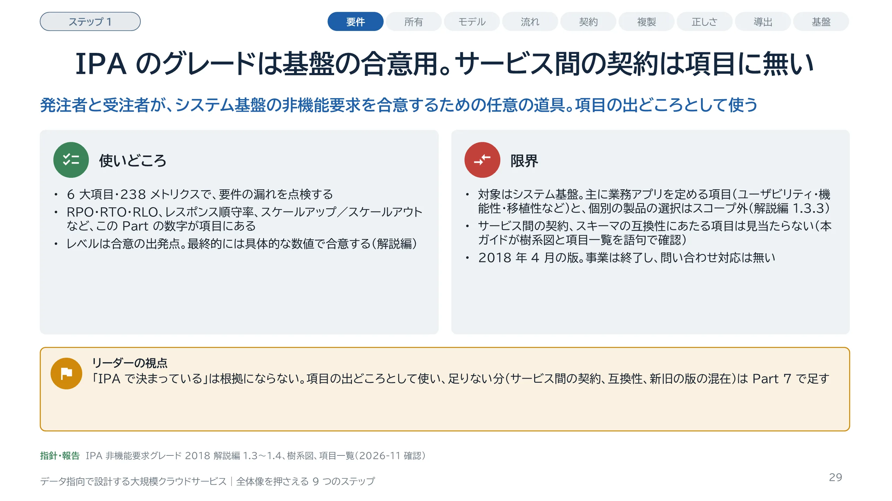
スライド 29 のテキストと解説
IPA の非機能要求グレード 2018 は、ユーザとベンダの間で、システム基盤に関わる非機能要求の認識のずれをなくすことを目的にした道具です。規範ではありません。解説編は、レベルは合意形成の出発点で、最終的には具体的な数値で合意する必要があると書いています。可用性、性能・拡張性、運用・保守性、移行性、セキュリティ、システム環境・エコロジーの 6 つの大項目に、238 のメトリクスが並んでおり、要件の漏れを点検できます。RPO、RTO、レスポンスの順守率、スケールアップとスケールアウトも項目にあります。対象はシステム基盤です。解説編の 1.3.3 がスコープ外とするのは 2 つで、主に業務アプリケーションを定めるための項目、たとえばユーザビリティ、機能性、移植性と、各社個別の製品やソリューションの選択に関する項目です。サービス間の契約を対象外と定めた記述はありません。ただ、本ガイドが樹系図と項目一覧を語句で調べた範囲では、サービス間の契約やスキーマの互換性にあたる項目は見当たりませんでした。「契約」という語は、保守契約やサポート契約の項目と、機器を増設するときの契約の変更といった備考に出てくるだけで、サービス間の取り決めの意味では使われていません。動かしたまま変えるための取り決めは、Part 7 で別に書きます。2018 年 4 月の版で、事業は終了しています。
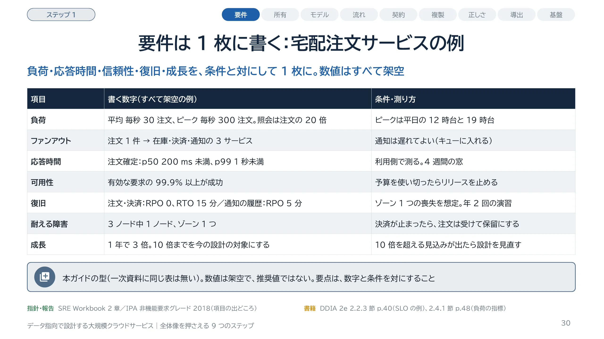
スライド 30 のテキストと解説
題材は、ケーススタディと同じ架空の宅配注文サービスです。表の数値はすべて架空で、推奨値ではありません。要点は、左の項目と、右の「条件・測り方」を必ず対にすることです。負荷は、平均とピーク、読み書きの比で書きます。ファンアウトは、1 つの注文が内部でいくつのサービスに広がるか、そのうち遅れてよいものはどれかを書きます。応答時間は p50 と p99 を、どこで測るかと一緒に書きます。可用性は成功率と、エラーバジェットを使い切ったときの取り決めを書きます。復旧はデータの種類ごとに RPO と RTO を書き、想定する障害と、演習の頻度を添えます。耐える障害は種類と数を書きます。成長は、何倍までを今の設計の対象にするかと、見直す条件を書きます。この型は本ガイドの提案です。項目の出どころは、DDIA の 2 章、SRE Workbook、IPA のグレードです。この 1 枚があれば、後のステップの選択を数字と照らして議論できます。
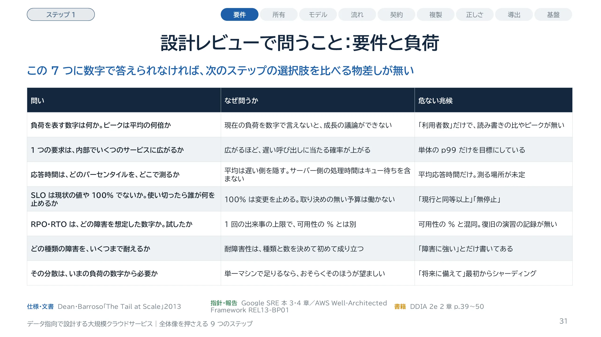
スライド 31 のテキストと解説
ステップ 1 の設計レビューで問うことを、7 つにまとめました。左が問い、中央がなぜ問うか、右が危ない兆候です。1 つ目は負荷です。現在の負荷を数字で言えなければ、負荷が 2 倍になったらどうなるかを議論できません。2 つ目はファンアウトです。1 つの要求が内部で多くのサービスに広がるほど、遅い呼び出しに当たる確率が上がります。3 つ目は応答時間の測り方です。平均だけ、あるいは測る場所が決まっていない要件は、テールを隠します。4 つ目は SLO です。現行と同等以上、無停止、といった書き方は、現状の追認か 100% の目標で、どちらも SRE 本が避けるよう勧めています。5 つ目は RPO と RTO です。どの障害を想定した数字か、実際に試したかを問います。6 つ目は耐える障害の種類と数です。7 つ目は分散の必要性です。将来に備えて最初からシャーディング、という設計は、いまの負荷の数字と照らして問い直します。右の列の兆候が見えたら、数字に書き直してもらってから先に進みます。出典の補足：RPO・RTO の説明は AWS Well-Architected Framework の REL13-BP01、可用性との区別は AWS のホワイトペーパー「Disaster Recovery of Workloads on AWS」（どちらも 2026-11 確認）。
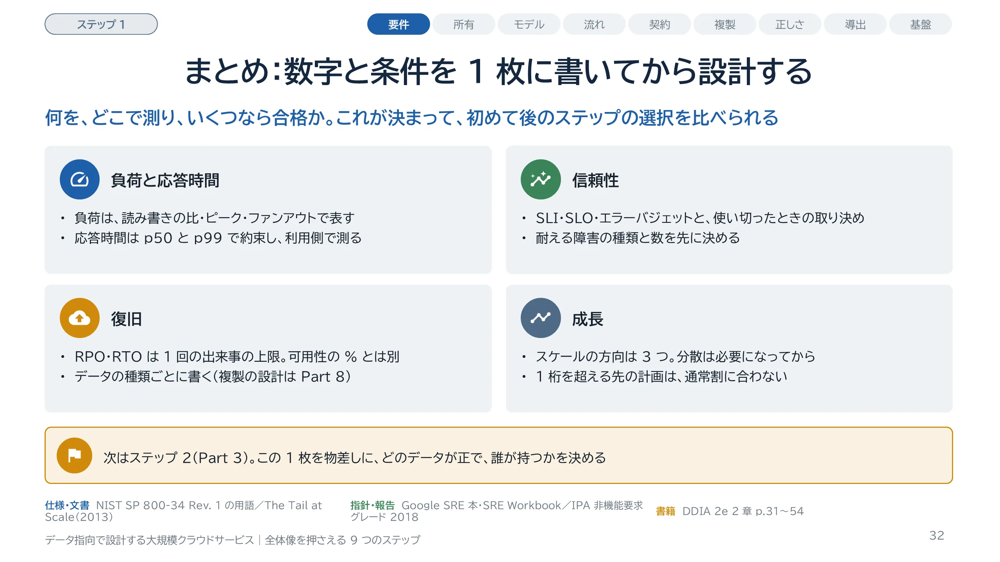
スライド 32 のテキストと解説
Part 2 のまとめです。負荷は、利用者数だけでなく、読み書きの比率、ピーク、ファンアウトで表します。応答時間は、平均ではなく p50 と p99 で約束し、利用側で測ります。信頼性は、SLI、SLO、エラーバジェットで表し、使い切ったときの取り決めまで書きます。あわせて、どの種類の障害をいくつまで耐えるかを先に決めます。復旧は、RPO と RTO をデータの種類ごとに書きます。これは可用性の % とは別の数字です。成長については、スケールの方向を 3 つに分けたうえで、分散は必要になってから選びます。1 桁を超える先の計画は、通常割に合いません。IPA の非機能要求グレードは項目の出どころとして役に立ちますが、サービス間の契約や互換性にあたる項目は見当たらないので（本ガイドの確認）、Part 7 で別に書きます。次の Part 3 はステップ 2 で、どのデータが正で、誰が持つかを決めます。
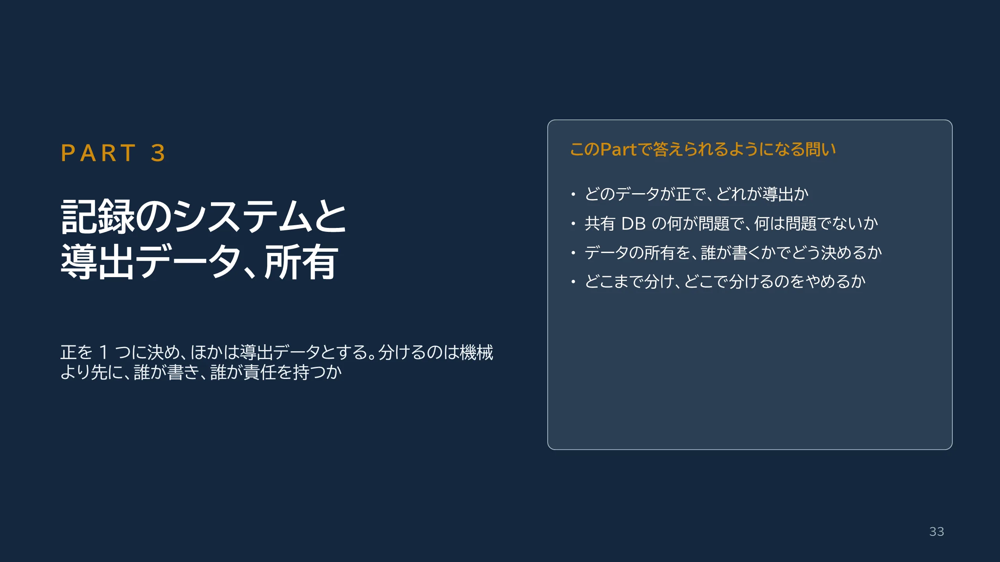
スライド 33 のテキストと解説
Part 3 は、9 つのステップの 2 番目、データの所有を扱います。問いは「どのデータを誰が持ち、どれが正か」です。結論を先に言います。データごとに正を 1 つに決め、ほかはすべて導出データとして扱います。次に、共有データベースの問題は、物理サーバーを共有することではなく、同じ表を複数のサービスが読み書きすることだと整理します。そのうえで、表に書くサービスを手がかりに所有を決め、データの所有者とアプリケーションの所有者を分けます。最後に、分けすぎないための歯止めも示します。根拠は『データ指向アプリケーションデザイン 第2版』、『ソフトウェアアーキテクチャ・ハードパーツ』、『大規模データ管理 第2版』と、AWS と Azure の設計指針です。データをどう流すかは Part 6、共通基盤ごとの当てはめは Part 13 で扱います。
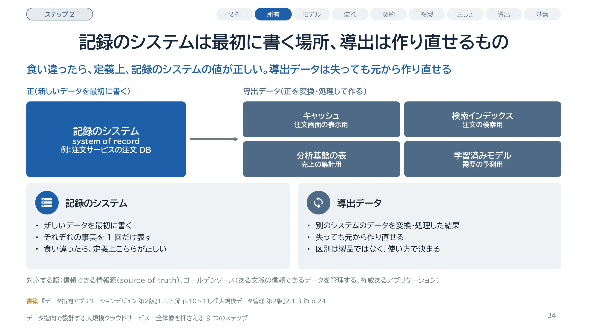
スライド 34 のテキストと解説
最初に 2 つの用語を定義します。記録のシステムは、英語で system of record、信頼できる情報源とも呼ばれます。新しいデータが最初に書き込まれる場所で、それぞれの事実を 1 回だけ表します。ほかのシステムと値が食い違ったら、定義上、記録のシステムの値が正しいとされます。このガイドでは短く「正」とも呼びます。導出データは、別のシステムのデータを変換または処理した結果です。失っても元から作り直せます。キャッシュ、インデックス、マテリアライズドビュー、学習済みモデルがこれに当たります。大事なのは、この区別が製品の種類ではなく使い方で決まることです。同じ PostgreSQL が、あるデータでは正に、別のデータでは導出になります。『大規模データ管理 第2版』のゴールデンソースは近い考え方で、ある文脈の信頼できるデータを管理する、権威あるアプリケーションを指します。次のスライドで、この区別を表に書き出します。
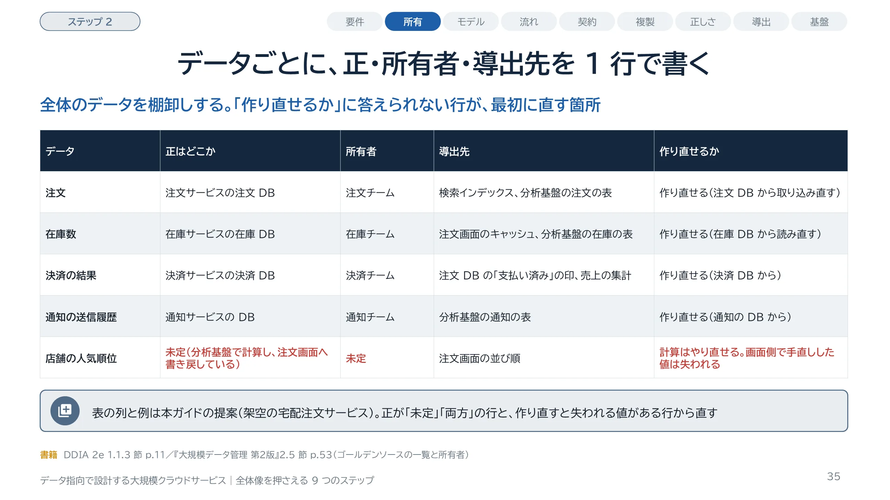
スライド 35 のテキストと解説
ステップ 2 で最初にやることは、全体のデータの棚卸しです。データごとに 1 行を使い、正はどこか、所有者は誰か、導出先はどこか、導出先を作り直せるか、を書きます。例は架空の宅配注文サービスです。注文、在庫数、決済の結果、通知の送信履歴は、どれも正が 1 つに決まり、導出先は正から作り直せます。問題は最後の行です。店舗の人気順位は分析基盤で計算し、注文画面へ書き戻しています。どこが正かが決まっておらず、画面側で手直しした値は、計算をやり直すと失われます。このように、表にすると決まっていない箇所が見えます。『データ指向アプリケーションデザイン 第2版』は、どのデータがどのデータから導出されるかを明らかにすることが、構成の見通しをよくすると述べています。『大規模データ管理 第2版』も、ゴールデンソースを一覧にして所有者を特定することを、移行の前提に挙げています。列の構成はこのガイドの提案です。
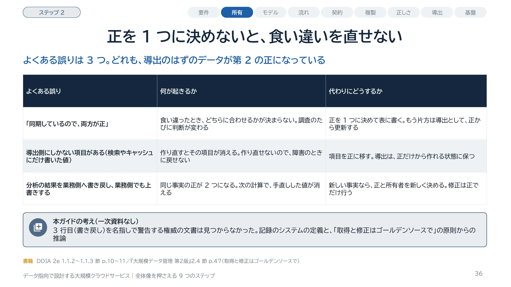
スライド 36 のテキストと解説
正を 1 つに決めないと何が起きるかを、よくある誤りで見ます。1 つ目は「同期しているので両方が正」という扱いです。値が食い違ったとき、どちらに合わせるかが決まらず、直せません。記録のシステムの定義は、食い違ったらこちらが正しい、というものでした。2 つ目は、導出側にしかない項目です。検索インデックスやキャッシュにだけ書いた項目があると、作り直したときに消えます。それは導出ではなく、第 2 の正です。3 つ目は、分析の結果を業務側へ書き戻し、業務側でも上書きする形です。分析の出力を業務のシステムへ渡す流れは、リバース ETL と呼ばれます。『大規模データ管理 第2版』は、データの取得と修正はゴールデンソースでだけ行うこと、新しい事実を作ったら新しい所有が生じることを原則にしています。なお、書き戻しの危険を名指しで警告する権威の文書は見つかりませんでした。3 行目は定義からの推論です。公開された事後報告ではなく、よくある誤りとして示しています。
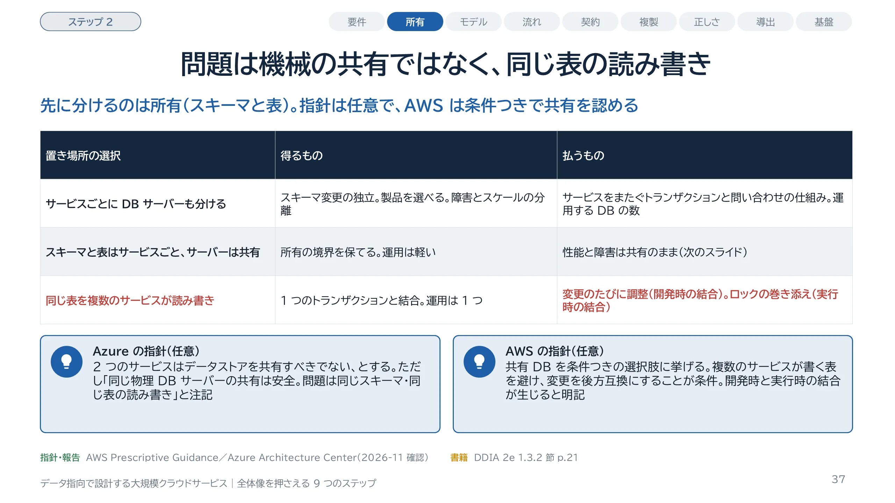
スライド 37 のテキストと解説
共有データベースの何が問題かを整理します。置き場所の選択は、表のとおり 3 つあります。Azure の指針は、2 つのサービスはデータストアを共有すべきでないと書いています。ただし注記で、同じ物理データベースサーバーの共有は安全で、問題が起きるのは同じスキーマや同じ表を読み書きするときだ、としています。AWS の指針は共有データベースを禁じていません。既存のコードを大きく変えたくない、ACID のトランザクションで整合性を保ちたい、運用する DB を 1 つにしたい、といった条件のもとで選択肢に挙げています。そのとき、複数のサービスが書く表を避け、変更を後方互換にすることを求めています。どちらも任意の指針で、標準や法令の要求ではありません。文書名は、Azure が「Data considerations for microservices」、AWS が「Enabling data persistence in microservices」です。どちらも 2026 年 11 月に確認しました。
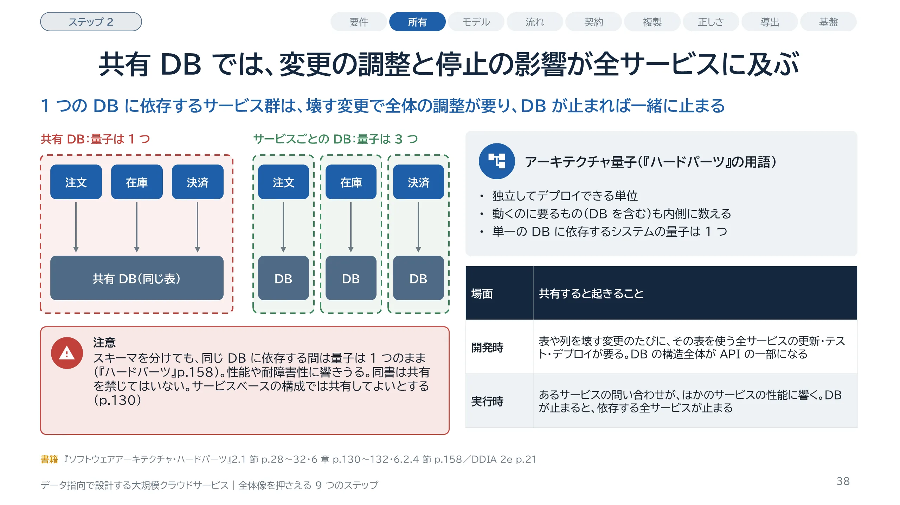
スライド 38 のテキストと解説
共有データベースで何を払うかを、『ハードパーツ』のアーキテクチャ量子という考え方で説明します。量子はこの本の用語で、『データ指向アプリケーションデザイン』には出てきません。独立してデプロイできる単位のことで、動くのに必要なもの、たとえばデータベースも、その単位の内側に数えます。同書の定義には機能的な凝集と結合の条件も入っていますが、ここではデプロイの面だけを使います。単一のデータベースに依存するシステムは、量子が 1 つです。影響は 2 つの場面に出ます。開発時には、表や列を壊す変更のたびに、その表を使う全サービスの更新とテストとデプロイが要ります。『データ指向アプリケーションデザイン』も、共有するとデータベースの構造全体が実質的に API の一部になると述べています。実行時には、あるサービスの問い合わせがほかの性能に響き、データベースが止まると全サービスが止まります。なお『ハードパーツ』は、スキーマを分けても同じデータベースに依存する間は量子は 1 つのままで、スケーラビリティや耐障害性や性能に悪い影響が出うる、としています。前のスライドの Azure の注記と見ている面が違う、というのはこのガイドの読み方です。大事な断りがあります。同書は共有を禁じてはいません。6 章の冒頭で、マイクロサービスではデータを分ける必要があるが、サービスベースアーキテクチャなどの構成では、複数のサービスが 1 つのデータベースを共有してもよい、と書いています。共有は選択肢で、このスライドはその費用を示しています。
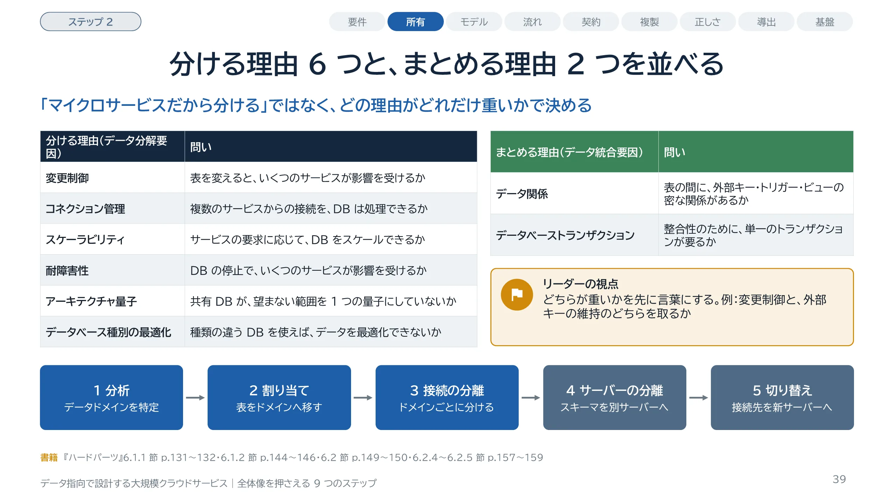
スライド 39 のテキストと解説
データを分けるかどうかは、理由を並べて決めます。『ハードパーツ』は、分ける理由をデータ分解要因、まとめる理由をデータ統合要因と呼びます。分解要因は 6 つです。表の変更で影響を受けるサービスの数、接続の数、スケール、DB が止まったときの影響範囲、前のスライドの量子、データに合った種類の DB を使いたいか、です。統合要因は 2 つです。表の間に外部キーやトリガーやビューの密な関係があるか、1 つのトランザクションでまとめて更新する必要があるか、です。本書は、たとえば変更制御と外部キーの維持のどちらが重要かを明らかにすることで、分けるかどうかと粒度を判断できる、としています。分けると決めたら、一度に切り離さず 5 段階で進めます。ここでのデータドメインは、関連して一緒に使われる表やビューや外部キーのまとまりを指します。先にスキーマと接続を分け、サーバーを分けるのはそのあとです。4 段階目でスキーマを別のサーバーへ移す方法として、同書は 2 つを挙げます。バックアップしてリストアする方法は、通常、移すときに停止が要ります。レプリケーションを使う方法は停止が生じませんが、設定と調整の作業が増えます。5 段階目で接続先を切り替え、古いサーバーからスキーマを消します。これは同じ製品の別のサーバーへ移す手順です。別の製品へ、照合と切り戻しの窓を持って移す手順は Part 15 で扱います。
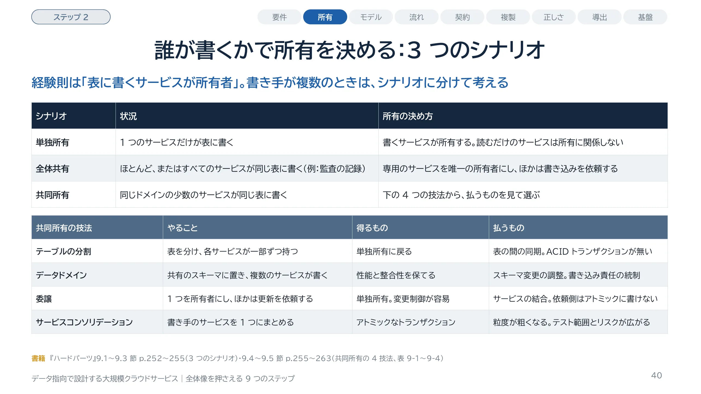
スライド 40 のテキストと解説
どのサービスがどの表を所有するかの決め方です。『ハードパーツ』の経験則は、表に書き込むサービスがその表の所有者、というものです。読むだけのサービスは所有に関係しません。書き手が 1 つなら、これで決まります。本書は、まずこの単独所有から片づけることを勧めています。書き手が複数のときは 2 つに分かれます。ほとんどのサービスが書く全体共有は、監査の記録が典型です。専用のサービスを唯一の所有者にして、ほかのサービスは書き込みを依頼します。同じドメインの少数のサービスが書く共同所有には、4 つの技法があります。表を分ける、共有のスキーマに置く、1 つを所有者にしてほかは依頼する、サービスを 1 つにまとめる、です。たとえば委譲は、依頼する側がアトミックに書けないので、結果整合性を許せる書き込みに向きます。ここでのデータドメインは『ハードパーツ』の用語で、次のスライドの『大規模データ管理』の同じ語とは意味が違います。サービスをまたぐ整合性は Part 11 で扱います。
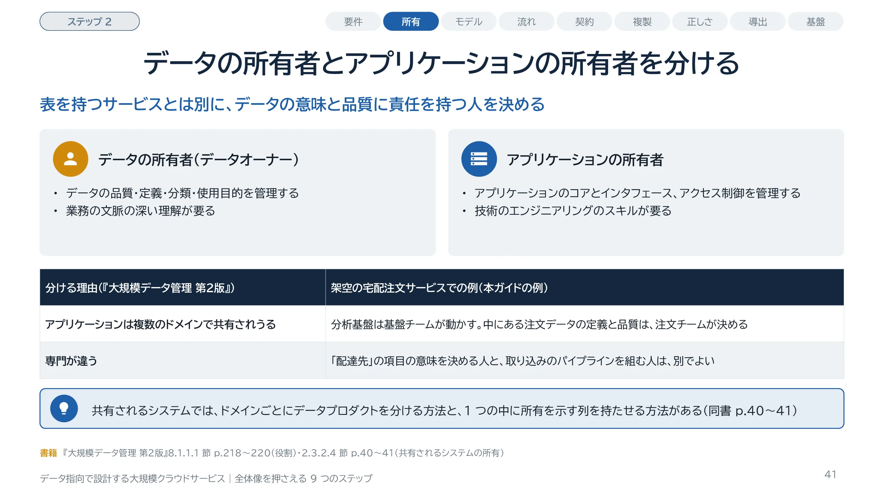
スライド 41 のテキストと解説
ここまでは、どのサービスが表を所有するかの話でした。もう 1 つ、誰が責任を持つかという人の側の所有があります。『大規模データ管理 第2版』は、データオーナーとアプリケーションオーナーを別の役割として挙げています。データオーナーは、データの品質、定義、分類、使用目的を管理します。アプリケーションオーナーが受け持つのは、アプリケーションの中核とそのインタフェース、それにアクセス制御です。本書は、データメッシュの理論では 1 つの役割にまとめる、と断ったうえで、まとめない理由を挙げます。ここでは 2 つを取り上げます。アプリケーションが複数のドメインで共有されうること、そして専門が違うことです。データを所有するには業務の文脈の深い理解が要り、アプリケーションを所有するには技術のスキルが要ります。本書のデータドメインは、この所有の境界を指します。共通基盤はまさに、複数のドメインで共有されるアプリケーションです。表の右の例はこのガイドが作ったものです。役割の名前や構成は組織によって違う、と本書も断っています。共通基盤への当てはめは次のスライドと Part 13 で扱います。
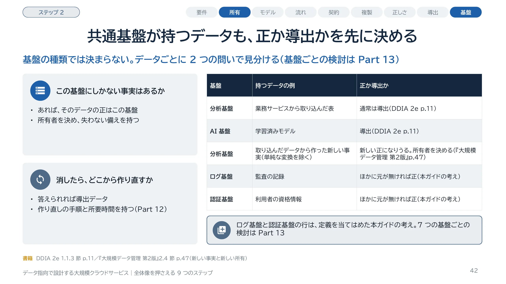
スライド 42 のテキストと解説
共通基盤が持つデータにも、同じ区別を当てはめます。問いは 2 つです。この基盤にしかない事実はあるか。あれば、そのデータの正はこの基盤です。次に、消したらどこから作り直すか。答えられれば導出データです。『データ指向アプリケーションデザイン 第2版』は、分析システムは別の場所で作られたデータの消費者なので、通常は導出データシステムだと述べ、学習済みモデルも導出データに含めています。ただし、基盤の中で新しい事実が生まれることがあります。『大規模データ管理 第2版』は、データを消費して新しい事実を作ると新しい所有が生じ、フィルターや結合や名前の変更のような単純な変換では生じない、としています。監査の記録や利用者の資格情報のように、ほかに元が無いデータは、その基盤が正になります。この 2 行は一次資料が無く、定義を当てはめたこのガイドの考えです。7 つの基盤それぞれの検討は Part 13 で、基盤が止まったときのふるまいは Part 14 で扱います。
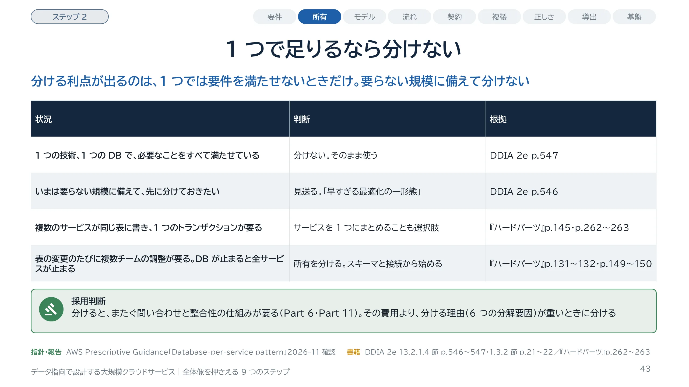
スライド 43 のテキストと解説
分けすぎないための歯止めです。『データ指向アプリケーションデザイン 第2版』は、可動部品は少ないほうが賢明だと述べています。必要のない規模のために作ることは、早すぎる最適化の一形態だ、とも書いています。単一の技術で必要なことをすべて満たせるなら、それをそのまま使うのがおそらく最善で、分離と構成の利点が出るのは、単一のソフトウェアでは要件を満たせない場合に限られます。この箇所は、データベースの機能を複数の製品に分ける文脈の記述です。サービスの分け方については、同じ本の 1 章が、マイクロサービスは人にまつわる問題への技術的な解決策で、チームの少ない小さな会社では不要な負担になりやすいと述べています。『ハードパーツ』も、書き手のサービスを 1 つにまとめることを技法の 1 つに挙げています。AWS の指針は、サービスごとに DB を分けたら、またぐ問い合わせのために別のパターンが要るとしています。データの流れは Part 6、サービスをまたぐ整合性は Part 11 で扱います。
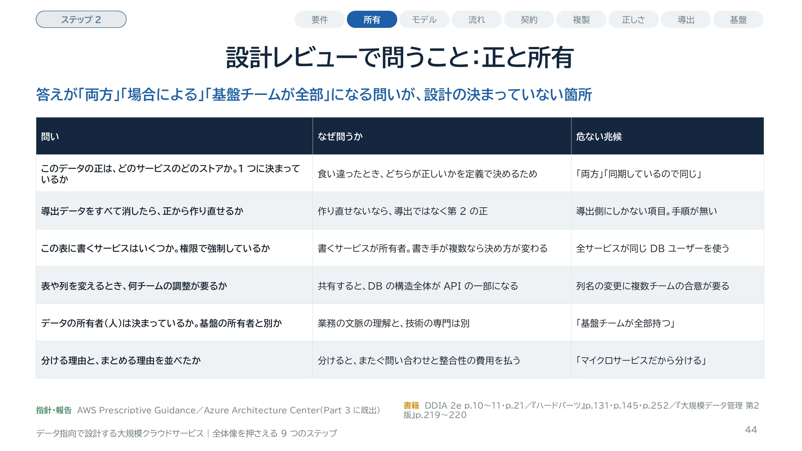
スライド 44 のテキストと解説
ステップ 2 の設計レビューで問うことを 6 つにまとめます。1 つ目は、このデータの正はどのサービスのどのストアか、です。食い違ったときに、定義で決められるようにするためです。2 つ目は、導出データをすべて消したら正から作り直せるか、です。作り直せないなら、それは第 2 の正です。3 つ目は、この表に書くサービスはいくつか、権限で強制しているか、です。書くサービスが所有者という経験則を、仕組みで守れているかを確かめます。4 つ目は、表や列を変えるときに何チームの調整が要るか、です。5 つ目は、データの所有者が人として決まっているか、です。6 つ目は、分ける理由とまとめる理由を並べたか、です。危ない兆候の列は、調査で集めたよくある答えを、このガイドが整理したものです。権限での強制と DB ユーザーの分離は、指針に直接の記述がなく、このガイドの考えです。この 6 つは Part 17 の一覧表に入ります。
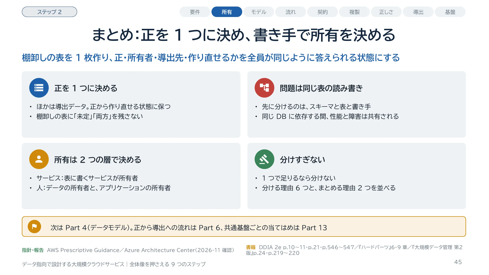
スライド 45 のテキストと解説
Part 3 のまとめです。1 つ目に、データごとに正を 1 つに決め、ほかは導出データとして、正から作り直せる状態に保ちます。棚卸しの表がその道具です。2 つ目に、共有データベースの問題は、機械の共有ではなく、同じ表を複数のサービスが読み書きすることです。先に分けるのは、スキーマと表と書き手です。ただし同じデータベースに依存する間は、性能と障害は共有されます。3 つ目に、所有は 2 つの層で決めます。サービスの層では、表に書くサービスが所有者です。人の層では、データの所有者とアプリケーションの所有者を分けます。4 つ目に、分けすぎないことです。1 つで足りるなら分けず、分ける理由とまとめる理由を並べて決めます。AWS と Azure の指針は任意のもので、AWS は条件つきで共有を認めています。次の Part 4 では、決めた正を、どのデータモデルで持つかを選びます。正から導出へどう流すかは Part 6 で、共通基盤ごとの当てはめは Part 13 で扱います。
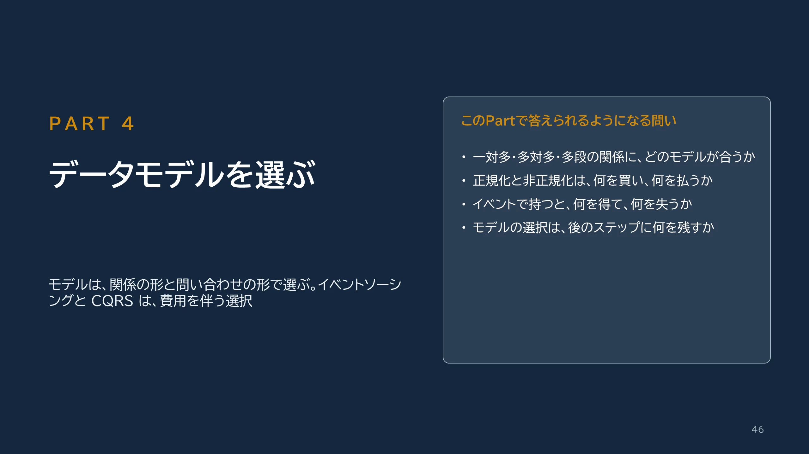
スライド 46 のテキストと解説
Part 4 は、ステップ 3 のデータモデルの選択です。データモデルとは、データをどんな形で表し、どう問い合わせるかの取り決めです。表と行、入れ子の文書、頂点と辺、イベントの列などがあります。結論を先に言うと、モデルは製品の人気ではなく、データの関係の形と、問い合わせの形で選びます。一対多の木ならドキュメント、多対多ならリレーショナル、つながりが複雑になるほどグラフが自然になります。この Part では、リレーショナルとドキュメントの得失、正規化と非正規化、グラフ、イベントソーシングと CQRS、分析のためのスキーマ、1 つのデータベースの中で複数のモデルを組み合わせる方法を順に見ます。イベントソーシングと CQRS は得るものが大きい一方で、費用を伴う選択であることを確認します。最後に、ここでの選択が、後のステップである流れ・契約・分割に何を残すかを整理します。主な根拠は『データ指向アプリケーションデザイン 第2版』の 3 章です。
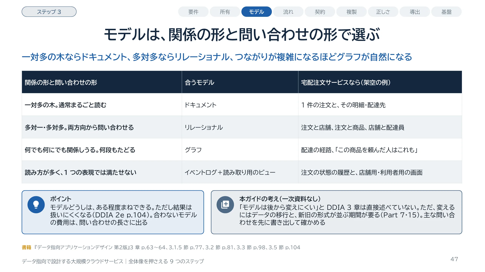
スライド 47 のテキストと解説
DDIA 第 2 版の 3 章は、モデルごとに得意な関係の形が違うことを示しています。データが主に一対多の関係、つまり木の構造で、レコードどうしのほかの関係がほとんど無いなら、ドキュメントモデルが適しています。多対一や多対多の関係があるなら、ID で参照して結合で読むリレーショナルモデルが向きます。つながりがさらに複雑になり、何段もたどる問い合わせが増えると、グラフとして表すほうが自然になります。そして、すべての読み方を満たす 1 つの表現が見つからないときは、書く形と読む形を分け、追記のみのイベントログから読み取り用の表現を導出する方法があります。表の右の列は架空の例です。右下は本ガイドの考えです。「モデルは後から変えにくい」とは、同書の 3 章は直接述べていません。ただ、モデルを変えるにはデータの移行と、新旧の形式が並ぶ期間が要ります。だから、主な問い合わせを先に書き出して確かめることを勧めます。
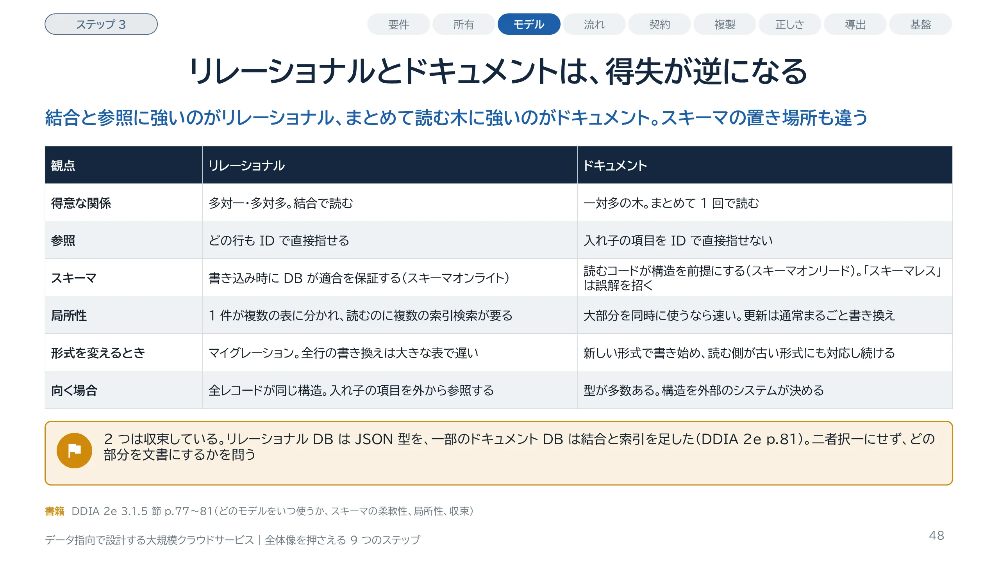
スライド 48 のテキストと解説
根拠は DDIA 第 2 版の 3.1.5 節です。参照では、リレーショナルはどの行も ID で直接指せますが、ドキュメントは入れ子の項目を直接指せません。スキーマでは、リレーショナルは書き込み時にデータベースが適合を保証します。これをスキーマオンライトと呼びます。ドキュメントはスキーマレスと呼ばれることがありますが、同書は誤解を招く表現だとしています。読むコードが構造を前提にしており、暗黙のスキーマはあるからです。こちらはスキーマオンリードと呼びます。局所性では、文書全体を頻繁に読むならドキュメントが有利ですが、更新は通常まるごとの書き換えになります。同書は、文書を比較的小さく保ち、頻繁な小さな更新を避けることが一般に勧められる、と述べています。形式を変えるときの違いは、Part 7 の契約の話につながります。2 つのモデルは収束しており、組み合わせ方は 7 枚目で扱います。
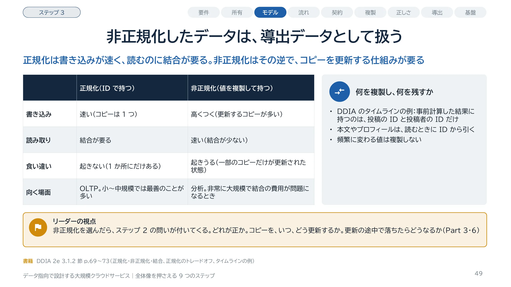
スライド 49 のテキストと解説
正規化と非正規化は、ID で持つか、値そのものを持つかの違いです。ID で持てば、意味のある情報は 1 か所にだけ置かれ、変わっても 1 か所を直せば済みます。その代わり、表示のたびに ID を解決する結合が要ります。値を複製して持てば読み取りは速くなりますが、DDIA 第 2 版は、より多くのコード、書き込み、ディスク容量が要り、一部のコピーだけが更新された不整合の危険があると述べています。同書は、非正規化したデータは導出データの一種と見ると理解しやすい、とも書いています。コピーを更新する仕組みを用意する必要があるからです。規模については、小規模から中規模では正規化したモデルが最善であることが多い、としています。同書のタイムラインの例では、事前に計算したタイムラインに持つのは投稿の ID と投稿者の ID だけで、本文やプロフィールは読むときに引きます。頻繁に変わる値は複製しない、という判断です。正のデータと導出データの区別は Part 3、更新の流れは Part 6 で扱います。
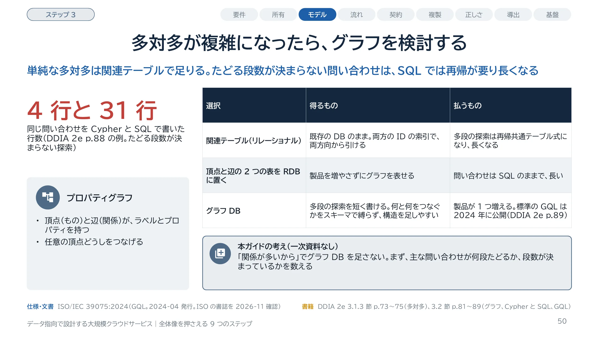
スライド 50 のテキストと解説
リレーショナルモデルでは、多対多は関連テーブルで表し、両方の ID に索引を張って両方向から引きます。単純な場合はこれで足ります。つながりが複雑になり、何段もたどる問い合わせが出てくると、グラフとして表すほうが自然になります。プロパティグラフは、頂点と辺がそれぞれラベルとプロパティを持つモデルです。DDIA 第 2 版は、グラフをリレーショナルデータベースの 2 つの表、頂点の表と辺の表としても表せることを示しています。ただし、たどる辺の数が事前に決まらない問い合わせは、SQL では再帰共通テーブル式が要ります。同書の例では、Cypher というグラフ用の言語で 4 行の問い合わせが、SQL では 31 行になります。グラフ用の問い合わせ言語 GQL は、2024 年に ISO の標準として公開されたと同書は書いています。標準の番号は ISO/IEC 39075:2024 です。右下は本ガイドの考えです。関係が多いというだけでグラフデータベースを足さず、まず問い合わせが何段たどるかを数えます。
スライド 51 のテキストと解説
イベントソーシングは、追記のみのイベントログを信頼できる情報源とし、そこから読み取り用のビューを導出する方法です。読み取り用の表現を書き込み用と別に持つ原則が CQRS、コマンドクエリ責務分離です。利用者の要求はコマンドと呼び、検証を通って初めて事実、つまりイベントとしてログに入ります。イベントは過去形で名づけ、変更も削除もしません。得るものとして DDIA 第 2 版は、意図が伝わること、ビューを作り直せること、監査ログになることを挙げます。欠点として同書が挙げるのは 3 つです。外部の値を処理時に引くと再計算の結果が変わること、不変のログと削除要求との衝突、再処理での副作用です。これとは別に、全ビューがログと同じ順序でイベントを処理する保証を、ただ 1 つの重要な要件として挙げています。Azure Architecture Center は、ビューが遅れること、誤ったイベントも残ること、イベントの版の扱いを加えています。同じ文書は、入るのも出るのも高くつき、ほとんどのシステムでは従来のデータ管理で足りると書いています。作り直しの前提条件は Part 12、削除は Part 16 で扱います。
スライド 52 のテキストと解説
DDIA 第 2 版によれば、データウェアハウスは通常リレーショナルで、スタースキーマという形がよく使われます。中心にファクトテーブルがあり、その 1 行が 1 つの出来事を表します。まわりを囲むのがディメンションテーブルで、その出来事の、誰が、何を、どこで、いつ、どのように、なぜを表します。左の図は、架空の宅配注文サービスに当てはめた例です。スノーフレークは、ディメンションをさらに分けて正規化の度合いを上げたものです。同書は、アナリストが扱いやすいのはスタースキーマのほうで、こちらが選ばれることが多い、と述べています。One Big Table は、ディメンションをファクトに畳み込んだ形で、容量は増えますが、問い合わせが速くなることもあります。分析では、こうした非正規化が問題になりにくいとされています。データが通常、変更されない過去の履歴だからです。業務側のモデルとは別に決めてよく、分析側は導出データになります。その費用は Part 5 と Part 13 で扱います。
スライド 53 のテキストと解説
DDIA 第 2 版は、リレーショナルとドキュメントは、同じデータベースの中で両方を組み合わせられるときに最もうまく機能する、と述べています。左は PostgreSQL での書き方の例です。決まった構造の項目は列に置き、店舗ごとに違う注文のオプションだけを jsonb の列に置いています。これは説明用の架空の例で、この例は実行していません。近い作りは題材 C で測りました。右の表は、PostgreSQL 18 の公式文書が述べていることです。柔軟さが要る場合でも、文書はある程度決まった構造を持つことを勧めています。また、どの更新も行全体に行レベルのロックを取るので、文書を扱える大きさに抑えてロックの競合を減らすよう勧めています。理想は、それ以上分けて独立に更新できない単位を 1 つの文書にすることです。左下は、この記述から導いた危ない兆候です。1 つの文書に追記し続ける配列や、複数の書き手が同じ文書を更新する設計は、ロックの競合を増やします。ほかの製品の JSON 対応は、この表の対象外です。
スライド 54 のテキストと解説
1 行目と 2 行目は、スキーマの置き場所です。データベースが強制するなら、形式の変更はマイグレーションになります。DDIA 第 2 版は、全行を書き換える変更は大きな表で遅く、運用上の難しさが残ると述べています。読む側が解釈するなら、読むすべての箇所が、古い形式に対応し続けることになります。どちらも Part 7 の契約と、Part 15 の移行で扱います。3 行目は非正規化です。コピーを更新する流れと、途中で落ちたときの一貫性が残ります。4 行目はイベントログです。全ビューがログと同じ順序で処理する保証が要ります。DDIA 第 2 版はこれを欠点ではなく、重要な要件として書いています。イベントの形式は書き換えずに残り続けます。5 行目は分析用のスキーマで、業務側のデータを変換して運ぶ流れ、ETL が残ります。最後の行は本ガイドの考えです。まとめて読み書きする単位は、Part 8 で分割のキーを選ぶときの出発点になります。下の注記も本ガイドの考えです。
スライド 55 のテキストと解説
1 つ目は、主な問い合わせを書き出せるかです。モデルは関係の形と問い合わせの形で決まるので、問い合わせが書かれていない設計は、製品名から決めている可能性があります。2 つ目は、入れ子の項目を外から参照していないかです。ドキュメントは入れ子の項目を ID で直接指せません。3 つ目は、複製した値の正と、更新の経路です。非正規化は導出データなので、更新する仕組みが要ります。4 つ目は jsonb の文書の単位です。PostgreSQL では更新が行全体のロックになるので、独立に更新される部分を 1 つの文書に入れていないかを見ます。5 つ目は、多段の問い合わせが何段たどるかです。6 つ目は、イベントソーシングと CQRS の範囲と目的、そしてやめるときの費用です。Azure の指針は、イベントソーシングについて、入るのも出るのも高くつくとしています。CQRS については、とくにイベントソーシングと組むと設計がかなり複雑になりうる、としています。7 つ目は、形式を変えるときの手順です。スキーマレスだから変更は自由、という説明は危ない兆候です。暗黙のスキーマは読む側のコードにあります。出典の補足：Azure Architecture Center「CQRS」（複雑さの記述）。
スライド 56 のテキストと解説
Part 4 のまとめです。モデルは、関係の形と問い合わせの形で選びます。一対多の木はドキュメント、多対多はリレーショナル、つながりが複雑で何段もたどるならグラフです。正規化と非正規化は、読み書きのどちらを速くするかの選択です。小規模から中規模では、正規化が最善のことが多いとされています。非正規化したデータは導出データで、更新する仕組みが要ります。イベントソーシングと CQRS は、履歴と作り直しを得る代わりに、決定性、順序、削除要求への対応、複雑さを払います。全体の標準にせず、一部に選んで使います。入るのも出るのも高くつく、という Azure の記述はイベントソーシングについてのものです。そして、リレーショナルとドキュメントは収束しており、同じデータベースの中で表と文書を組み合わせられます。分析には、業務側とは別のスキーマを使います。最後に、モデルの選択は、後のステップである流れ・契約・分割に残ります。選んだ理由と、残るものを書いておきます。次の Part 5 は基礎の Part で、ここで選んだモデルを支えるストレージと索引が、何を買い、何を払うかを見ます。出典の補足：Azure Architecture Center「CQRS」。
スライド 57 のテキストと解説
Part 5 は基礎の Part で、ストレージと索引を扱います。主題は、製品の内部の解説ではありません。設計で選んだものが、何を買い、何を払っているかを言えるようになることです。前半は、OLTP 向けのストレージエンジンの 2 つの系統、ログ構造化の LSM ツリーと、同じ場所を上書きする B ツリーを図で説明します。続いて、PostgreSQL の MVCC が運用で払う費用と、索引が導出データであることを確かめます。後半は、行指向と列指向、OLTP と分析を分ける理由と費用、分けない判断、クラウドのデータウェアハウスとオープンテーブル形式、全文検索とベクトル検索の索引を扱います。最後に、ストアを足す前に問うことと、設計レビューの問いをまとめます。根拠は『データ指向アプリケーションデザイン 第2版』の 4 章と、各製品の公式文書です。
スライド 58 のテキストと解説
なぜテックリーダーが、ストレージエンジンの中身を知る必要があるのでしょうか。DDIA の 4 章は、理由を 2 つ挙げています。1 つは、多くのエンジンの中から自分のアプリケーションに合うものを選ぶため。もう 1 つは、自分の負荷に合わせて調整するためです。自分でエンジンを実装するためではありません。本ガイドは、ここに 3 つ目を足します。設計レビューで、その選択が何を払っているかを問うためです。表は、エンジンの中身が設計にどう出るかを、この Part の順に並べたものです。追記してまとめるか、同じ場所を上書きするかで、書き込み・読み取り・空間のどれが重くなるかが変わります。行の版を複数持つ方式は、掃除と監視が運用に乗ります。別のストアへ写せば、写した先は導出データになります。3 つ目の理由は本ガイドの考えで、書籍の主張ではない点に注意してください。
スライド 59 のテキストと解説
ログ構造化ストレージの代表、LSM ツリーのしくみです。ここで言うログは、追記だけができるレコードの並びのことです。書き込みは、まずメモリ上の、キー順に並んだ構造に入ります。これをメムテーブルと呼びます。クラッシュで失わないように、同時に復旧用のログにも追記します。メムテーブルがしきい値、通常は数メガバイトを超えると、キー順のファイルとしてディスクに書き出します。このファイルは書いた後は変えません。読み取りは、メムテーブル、新しいファイル、古いファイルの順に探します。背後では、ファイルをまとめて、上書きされた値や削除された値を捨てます。これがマージとコンパクションです。買うものは書き込みの速さです。払うものは 3 つあります。読み取りで複数のファイルを見ること、コンパクションが追いつかないと読み書きを一時停止するエンジンがあること、削除がマーカーの追記で表され、すぐには消えないことです。
スライド 60 のテキストと解説
もう 1 つの系統、B ツリーです。B ツリーは、データベースを固定サイズのページに分けます。ページの大きさは従来 4 キビバイトで、DDIA によれば PostgreSQL は 8 キビバイトです。検索はルートのページから始め、キーの範囲に合う参照をたどって、リーフのページに着きます。1 ページが持つ子への参照の数を分岐係数と呼び、通常は数百です。そのため木は浅く、多くのデータベースは 3 から 4 階層に収まります。書き込みは、該当するページを同じ場所で上書きします。空きが無ければページを 2 つに分け、親のページも更新します。途中で落ちると木が壊れるので、変更を先に WAL、つまり先行書き込みログに追記します。買うものは、読み取りの速さと予測しやすさです。払うものは、散らばった小さな書き込みと、数バイトの変更でもページ全体を書くことがある点です。
スライド 61 のテキストと解説
2 つの系統を、書き込み・読み取り・空間の 3 つの観点で並べます。DDIA は、LSM ツリーは書き込みの多い用途に、B ツリーは読み取りに向く、と述べますが、これは「おおまかな目安」と断ったうえでの記述です。本書に性能の数値はありません。ベンチマークの結果は負荷の詳細に左右されるので、自分の負荷で試すよう勧めています。下の 3 つの増幅は、RocksDB の公式のチューニングガイドの定義です。同じガイドは、コンパクションの設定が 3 つの釣り合いを変えること、どれを最適化すべきかが明らかでない場合があることを書いています。このガイドは 2023 年 3 月の編集で、定義としてだけ引いています。測るときの注意も DDIA にあります。空の LSM ツリーはまだコンパクションが走らないので、影響が見えるまで長く測る必要があります。題材 C では、LSM と B ツリーの直接の比較はしていません。行指向・列指向・ファイルを同じ環境で比べました。
スライド 62 のテキストと解説
PostgreSQL は MVCC、多版型の並行制御を使います。各 SQL 文は、ある時点のスナップショットを見ます。読み取りと書き込みは互いを妨げません。その代わり、更新のたびに古い行の版が残ります。これを回収するのが VACUUM です。払うものは 3 つです。領域、索引、そしてトランザクション ID の周回です。標準の VACUUM は、表の末尾のページが空き、排他ロックをすぐ取れる場合を除き、領域を OS に返しません。ID は 32 ビットで、PostgreSQL 18 の文書では、残り約 4,000 万で警告を出し、300 万を切ると新しい ID の割り当てを拒否します。つまり書き込みが止まります。同じ文書によれば、この状態でも進行中のトランザクションは続けられ、読み取り専用のトランザクションは始められ、VACUUM も普通に実行できます。Sentry の報告は 2015 年のもので、当時の版のしきい値は今と違います。Mailchimp の報告は、autovacuum が負荷で遅れたとみられるが、失敗していた可能性もあり、どちらかは特定できない、と書いています。前の年の 11 月に周回の可能性に気づき、差し迫った脅威ではないと判断して、監視の追加をバックログのチケットにしていました。そのチケットがどうなったかは報告に書かれていません。復旧では、ダンプとリストアも試しましたが遅く、大きな 2 つの表を切り捨てて VACUUM を終わらせました。周回はケーススタディでは再現しません。
スライド 63 のテキストと解説
索引の位置づけです。DDIA は、索引を、プライマリデータから導出された付加的な構造、と定義しています。足しても消しても、データベースの内容は変わりません。変わるのは問い合わせの速さです。その代わり、データを書くたびに索引も更新するので、書き込みは遅くなり、ディスクの領域も使います。本書はこれを、ストレージの重要なトレードオフと呼びます。だからデータベースは既定で全部には索引を張らず、問い合わせの形を知っている人が選びます。表は、同じ考え方で読めるものを並べました。主キー以外の列で探すセカンダリインデックス、一部の列を索引の中に持つ索引、問い合わせの結果を実体として持つマテリアライズドビューです。どれも、読み取りを買い、書き込みと領域で払います。導出データは元から作り直せますが、作り直しには時間がかかります。この点は本ガイドの考えとして添えています。マテリアライズドビューの更新のしくみは Part 12 で扱います。
スライド 64 のテキストと解説
行指向と列指向の違いです。多くの OLTP のデータベースは行指向で、1 行に属する値を隣り合わせに置きます。一方、分析の問い合わせは、多数の行にまたがって集計しますが、使う列は少数です。DDIA は、ファクトテーブルの列は 100 を超えることもよくあるのに、典型的な問い合わせが一度に触れるのは 4 つか 5 つ、と書いています。行指向では、その少数の列のために行を丸ごと読むことになります。列指向は、列ごとにまとめて置くので、使う列だけを読めます。図の例では、日付ごとの数量の合計に、日付と数量の 2 列だけを読みます。同じ列には同じ値が繰り返し出るので、圧縮もよく効きます。払うものは書き込みです。並べて圧縮した列の途中に 1 行ずつ書くのは非常に非効率なので、ためてからまとめて書きます。題材 C では、PostgreSQL、ClickHouse、DuckDB と Parquet で、容量・取り込み時間・問い合わせ時間を同じ環境で比べました。大小は 2 回の実行で同じでした。
スライド 65 のテキストと解説
OLTP と分析を分ける理由と、その費用です。DDIA は、分析のために OLTP のデータベースへ直接問い合わせるのは通常望ましくないとして、理由を 4 つ挙げています。データが複数のシステムに分かれていること、OLTP に合うスキーマや配置は分析に向かないこと、高コストな問い合わせがほかの利用者の性能に響くこと、セキュリティやコンプライアンスの理由で直接つなげない場合があること、です。そこで、読み取り専用のコピーを別のデータベースに集めます。大事なのは、分けた先が導出データになることです。本書も、分析システムは通常、導出データのシステムだと述べ、元が変わったときに導出データを更新するプロセスが要る、と書いています。右の表の 4 つは、その費用を本ガイドが整理したものです。Azure の設計指針は、更新の合図が失われるとビューは黙って古い結果を返すので、新しさを監視するよう勧めています。流れの設計は Part 6、作り直しの前提条件は Part 12 で扱います。
スライド 66 のテキストと解説
分けない、という判断です。集計の量が小さいうちは、1 つの RDB で兼ねる、あるいは読み取りレプリカに分析を逃がす、という選択があります。書き方に注意があります。この表は本ガイドの整理で、規範ではありません。1 つで足りるなら分けない、と定める権威の文書は見つかりませんでした。DDIA も、兼ねてよい規模の線引きは書いていません。近い記述は Azure の設計指針にあります。この文書は、1 つのデータストアがすべてのアクセスの形を効率よく満たすことはまれで、多くの本番システムは複数のモデルを使う、と始めます。そのうえで早すぎる細分化を避けるよう勧め、1 つのサービスが性能・規模・統制の目標を満たすうちは 1 つを使い、アクセスの形や寿命がはっきり分かれるときだけ組み合わせる、としています。一方 AWS の指針は、用途に合うデータストアを選ぶよう勧め、使い慣れているという理由で 1 つのエンジンに統一して、すべての負荷をそこへ載せることを誤りに挙げます。どちらも任意の推奨です。題材 C で測りましたが、境目の線は、この規模（最大 3,000,000 行）では引けていません。
スライド 67 のテキストと解説
クラウドのデータウェアハウスと、レイクハウスです。公式文書の記述に基づき、実測はしていません。クラウド専用のデータウェアハウスは、データをローカルディスクではなくオブジェクトストレージに置き、計算の層と保存の層を分けます。保存の容量と、問い合わせの計算資源を、別々に増減できます。さらに、分析の保存先がオブジェクトストレージ上のデータレイクへ移るにつれて、1 つの製品だった部品が、左の図のように分かれました。これがレイクハウスと呼ばれる構成です。Parquet などのファイルは書いた後は変えません。行の挿入や削除を扱うために、どのファイルが表を成すかを決めるテーブルフォーマットを重ねます。Iceberg の仕様は、メタデータファイルの原子的な差し替えを、直列化可能な分離の土台としています。版は 1 から 3 が採択済みで、4 は開発中です。開いた形式は置換性を上げますが、製品ごとに制限があります。BigQuery の文書は、BigQuery の外からデータファイルを変えると、問い合わせの失敗やデータの損失が起きうると書いています。Snowflake は、自社をカタログにした表への外部からの書き込みについて、公式文書の中に、できないとする記述と、条件つきでできるとする記述の両方があります。どちらが現行のふるまいかを確かめられなかったので、表には未確認と書きました。
スライド 68 のテキストと解説
全文検索は、文章のどこかに出てくる語で文書を探します。そのために、語ごとに、その語を含む文書の ID の一覧を持ちます。これが転置索引です。図の例では、配達という語は文書 1 と 2 に、変更という語は文書 2 と 3 に出てきます。配達かつ変更、という検索は、2 つの一覧の AND を取り、文書 2 を返します。払うものは更新です。1 つの文書には多くの語が含まれるので、1 件の追加や更新が、多数の索引の更新になります。更新を保留リストにためて先送りできますが、リストが大きいと検索が大幅に遅くなります。大量に投入するときは、索引を落として、あとで作り直すことを勧めています。Lucene は、語から一覧への対応をソート済みのファイルに持ち、LSM ツリーと同じログ構造化の方式で、背後でマージします。
スライド 69 のテキストと解説
ベクトル検索の索引です。意味の近さで探すセマンティック検索は、埋め込みモデルで文書を数値のベクトルに変え、近いベクトルを探します。全件を比べる方式は正確ですが遅いので、近似の索引を使います。代表が HNSW で、層になったグラフを上から下へたどります。右の表は pgvector 0.8.7 の README の記述です。索引が無いときは厳密な検索で、再現率は完全です。HNSW の既定値は m が 16、ef_construction が 64、ef_search が 40 です。注意が要るのは絞り込みです。近似の索引では、絞り込みは索引を走査した後に適用されます。条件が全体の 10% に当たるなら、既定では平均 4 行しか残りません。0.8.0 から、足りないとき走査を続ける機能があります。下の注記は本ガイドの考えです。埋め込みモデルを替えると、ベクトルは全件作り直しになります。DDIA は、索引の構築や作り直しの費用には触れていません。
スライド 70 のテキストと解説
ストアを足す前の判断の表です。分析、全文検索、ベクトル検索のどれも、既存のデータベースの拡張で始める道と、専用のストアを足す道があります。拡張で始めれば、導出データは同じデータベースの中の索引で済みます。払うものは、索引の更新の重さと、OLTP と資源を分け合うことです。専用のストアを足せば、用途に合った速さを買えますが、データを運ぶ流れ、欠落や重複の検査、作り直しの手順、運用する製品が 1 組ずつ増えます。右端の列は、専用に切り替える合図です。ベクトル検索なら、pgvector の次元の上限、絞り込みと併用したときの件数、索引の構築の時間とメモリが材料になります。次元の上限は vector 型で 2,000 次元ですが、halfvec 型に替えれば 4,000 次元まで索引できます。この表は本ガイドの整理です。専用か拡張かを定める中立の規範は、一次資料に見つかりませんでした。関連する記述として、Azure の設計指針は、検索インデックスが主たるデータストアになることを、よくある誤りに挙げています。
スライド 71 のテキストと解説
設計レビューの問いは 7 つです。1 つ目は、この表や索引やビューが、記録のシステムか導出データか、です。導出データなら、作り直しを最後に実行したのはいつかを聞きます。手順は、実行して確かめるまで手順とは言えません。2 つ目は、分析を分ける理由が測った数字かどうかです。3 つ目は PostgreSQL の監視で、XID の年齢と autovacuum の遅れを見ているかを聞きます。4 つ目は索引で、どの問い合わせのために張ったかを説明できるかです。5 つ目はベクトル検索の再現率、6 つ目は表形式の版と読み手の対応です。7 つ目はベンチマークです。ClickBench は ClickHouse のチームが作り、使っているベンチマークで、約 1 億行の 1 つの平らな表に、43 本の問い合わせを 1 本ずつ流します。README 自身が、結果は割り引いて受け取るよう書いています。順位表は、同じ種類の負荷での目安です。
スライド 72 のテキストと解説
この Part で見た選択を、買うものと払うものの対で並べました。LSM ツリーは書き込みの速さを買い、読み取りとコンパクションで払います。B ツリーは読み取りの速さと予測しやすさを買い、散らばった書き込みと断片化で払います。PostgreSQL の MVCC は、読み書きが互いを待たないことを買い、VACUUM と XID の監視で払います。索引は読み取りを買い、書き込みと領域で払います。列指向は走査と圧縮を買い、1 行ずつの書き込みで払います。そして、分析・検索・ベクトルのストアを足すと、用途に合った速さを買い、導出データの遅れ・検査・再構築で払います。DDIA の比較はどれも目安や傾向で、数値はありません。数字は題材 C の実測と、各製品の公式文書で補います。次の Part 6 では、ストアの間をデータがどう流れるかを設計します。作り直しの前提条件は Part 12、基盤への当てはめは Part 13 です。
スライド 73 のテキストと解説
Part 6 は、ステップ 4「データの流れを設計する」です。Part 3 で、どのデータの正がどこにあるかを決めました。この Part では、その正から、ほかのサービスや共通基盤へ、データをどう運ぶかを扱います。最初に、流れの 3 つの形と、コピーを読むか正を直接呼ぶかの判断基準を見ます。次に、よくある誤りである二重書き込みを、図で説明します。そのうえで、ログを 1 本の正にする考え方、トランザクショナル・アウトボックス、チェンジデータキャプチャ（CDC）のしくみへ進みます。後半は、どの方式でも重複が起きること、CDC の受け手が止まると正の DB のディスクが埋まりうることを、公式文書の既定値で確かめます。流れるデータの形、つまり契約は Part 7、サービスをまたぐ整合性は Part 11、導出データの作り直しは Part 12 で扱います。
スライド 74 のテキストと解説
サービスや基盤の間をデータが流れる形を、3 つに分けます。1 つ目は DB 経由です。あるサービスが書いた表を、別のサービスが読みます。その場で同じ値が見え、結合もできますが、表の形が全員との契約になります。AWS の指針は、共有 DB が開発時の結合と実行時の結合を生むと書いています。「規範ガイダンス」は AWS の資料の名前で、一事業者の推奨です。標準や規制という意味の規範ではありません。2 つ目はサービス呼び出しで、同期の API です。持ち主から直接値を取れますが、呼び先の遅延と停止を引き継ぎます。3 つ目は非同期のイベントで、送り手は受け手を待ちません。受け手を足しやすい代わりに、反映の遅れ、重複、順序を引き受けます。『データ指向アプリケーションデザイン 第2版』の 5.2 節は、本文ではワークフローエンジンを含む 4 つを挙げ、章のまとめでは 3 つのモードに整理しています。同書は、互換性を、データを書くプロセスと読むプロセスの関係だと説明します。だから、流れごとに、だれが書き、だれが読むかを問います。契約の検査は Part 7 で扱います。
スライド 75 のテキストと解説
別のサービスのデータを使うとき、最初に決めるのは、コピーを読むのか、正を直接呼ぶのかです。『大規模データ管理 第2版』は、前者をデータ流通、後者をアプリケーション統合と呼んで分けています。データ流通は、結果整合の読み出しで、同じデータを何度も読めます。同書は、その運び方を選ぶときの考慮点を 2 つ挙げます。1 つ目は、変更が読み出しに反映されるまでの遅れを、どこまで許せるか。数分から数秒以内に要るなら、API かイベントの運び方を検討します。2 つ目は、月末のような定期の照合や監査が要るかで、要るならバッチの経路を勧めています。アプリケーション統合は、同書によれば、速さと強一貫性が欠かせない場合に使い、記録のシステムから直接取るなら同期の API です。この 2 点を、コピーか直接かの判断にも使うのは、本ガイドの考えです。遅れを許せないなら、正を直接呼びます。1 つ注意があります。同書は 7 章で「強一貫性」を、「正確な」と言い添えるだけで使います。6.4.1 節（p.188）の説明は、ストリーミングの順序と伝搬の話で、読み出しが最新であることの定義ではありません。同期で呼んでも、返る値が最新とは限りません。複製と分離レベルは Part 8 と Part 9 で扱います。
スライド 76 のテキストと解説
別のサービスが持つデータを読みたいときの選択肢を、『ソフトウェアアーキテクチャ・ハードパーツ』の 10 章が 4 つに整理しています。1 つ目はサービス間通信で、持ち主のサービスを呼びます。単純ですが、遅延が積み重なり、呼び先が止まると自分も止まります。2 つ目は列スキーマレプリケーションで、必要な列を自分の表に写して持ちます。読みは速く、呼び先に依存しませんが、同期が要り、写した側が勝手に更新できてしまうので、整合性と所有権が揺らぎます。同書は、この同期には非同期の通信が望ましいとしています。3 つ目はレプリケーションキャッシュで、各サービスのメモリに同じデータを持ち、製品が同期します。大きいデータや更新の多いデータには向きません。4 つ目はデータドメインで、表を同じスキーマに置いて共有します。結合と外部キーが使えますが、表のスキーマがそのまま契約になり、変更の影響範囲が広がります。表は同書の表 10-1 から 10-4 の要約です。写して持つ場合の運び方が、この先の主題です。
スライド 77 のテキストと解説
二重書き込みは、データが変わるたびに、アプリケーションのコードが各システムへ個別に書くことです。『データ指向アプリケーションデザイン 第2版』の 12.2.1 節は、DB に書き、次に検索索引を更新し、そのあとキャッシュを無効化する、という例を挙げています。定期の全件ダンプでは遅すぎるときの代わりの手段として使われる、と説明されています。AWS の指針も、アプリケーションが 2 つの異なるシステムに書くことを二重書き込みと呼び、片方の失敗でデータが不整合になりうるとしています。架空の宅配注文サービスで言えば、注文サービスが注文 DB にコミットし、続けてブローカーへ「注文を受けた」というイベントを発行する形です。問題は、この 2 つの書き込みが別々の操作であることです。両方成功か両方失敗かにそろえる仕組みがなく、どちらのシステムも相手に従っていないので、書き込みの順序を決める者がいません。次のスライドで、ここから起きる不整合を 2 つの型に分けます。
スライド 78 のテキストと解説
二重書き込みの不整合は 2 つの型に分かれます。型 1 は、片方だけが成功する型です。DB の更新は成功したがイベントの発行に失敗すると、受け手は変更を知りません。逆に、DB の更新が失敗したのにイベントだけが出ると、DB にない出来事が流れます。両方をそろえるにはアトミックコミットが要り、費用がかかります。型 2 は、並行した更新が 2 つのシステムに逆の順で届く型です。右の表は、宅配注文の状態を 2 つのクライアントが同時に更新する例です。A は「調理中」、B は「配達中」を書きます。DB には A、B の順で届き、検索索引には B、A の順で届くと、DB の最終値は「配達中」、索引の最終値は「調理中」になります。4 回の書き込みはすべて成功していて、エラーは 1 件もありません。『データ指向アプリケーションデザイン 第2版』は、検出の仕組みがなければ、起きたことにすら気づかないと書いています。題材 A の実測では、障害なしの並行度 16 で、順序の入れ替わりが 5 組・11 組（1 回目・2 回目）起き、エラーと最終状態の食い違いは 0 でした。
スライド 79 のテキストと解説
二重書き込みの根は、順序を決める者が 2 人いることでした。そこで、順序を決める場所を 1 つにします。正の DB がコミットした順に変更をログへ出し、検索索引や分析基盤は、そのログを同じ順に読んで適用します。『データ指向アプリケーションデザイン 第2版』は、これを、1 つの DB をリーダーに、ほかをフォロワーに変えることだと説明しています。運ぶ役に向くのが、ログベースのメッセージブローカーです。メッセージを追記のみのログに保存し、受け手が順に読む方式です。利点は 3 つです。順序が 1 つに決まること、受け手を足すだけで新しい導出データを作れること、位置を戻して読み直せることです。読み直しと作り直しの条件は Part 12 で扱います。払うものもあります。通常は非同期なので、反映は遅れます。順序が保たれるのはパーティションの中だけです。そして、メッセージを 1 件失うだけで、導出データは正とずれたままになります。題材 A の実測では、状態を上書きする索引は後の更新で戻り、ずれが残ったのは、届かなかった 142 件・144 件（1 回目・2 回目）のうち 15・10 注文でした。通知は 142 件・144 件とも戻りませんでした。
スライド 80 のテキストと解説
トランザクショナル・アウトボックスは、2 つのシステムへの書き込みを、1 つの DB の 1 つのトランザクションに畳む方法です。注文サービスは、注文の表を更新するのと同じトランザクションで、アウトボックスの表に「注文を受けた」というイベントを 1 行書きます。両方書かれるか、両方書かれないかのどちらかになります。ブローカーへ送る処理は、別のプロセスが担います。『データ指向アプリケーションデザイン 第2版』は、アウトボックスを、内部のスキーマと外向きのスキーマを分ける一般的な方法として紹介しています。同書は「二重書き込みのように見えますが、実際にそうです」と認めています。それでも二重書き込みの問題を避けられるのは、書き込み先がどちらも同じ DB で、1 つのトランザクションで済むからです。払うものも書かれています。内部の形とアウトボックスの形の変換を保守し続けること、DB が書くデータ量が増えることです。もう 1 つ、送る処理は別に要り、そこで重複が起きえます。次のスライドで、その運び方を 2 つ比べます。
スライド 81 のテキストと解説
アウトボックスの表からブローカーへ運ぶ方法は 2 つあります。1 つ目はポーリングで、別の処理がアウトボックスの表を定期的に読み、送れたら行を消します。AWS の指針の実装例がこの形で、表を ID の順に読みます。どの SQL の DB でも動きます。順序については、資料が食い違います。AWS の指針は、アウトボックスの表に時刻と連番を持たせるこの設計が順序を保つと書き、別に、通知の順序を注意点に挙げています。個人のサイトである microservices.io は、順序どおりの発行が難しいことを欠点に挙げています。2 つ目は CDC で、DB のトランザクションログを読みます。Debezium 3.7 の Outbox Event Router は、集約の ID をメッセージのキーにし、イベントの id をヘッダーに出します。大事なのは、この 2 つが二択ではないことです。『データ指向アプリケーションデザイン 第2版』も、アウトボックスを CDC に公開する表として説明しています。連番の順に読むポーリングが行を読み飛ばすかは、一次資料で確かめられなかったので、題材 A で測りました。最後に読んだ連番より大きい行だけ読む作りは読み飛ばし、未送信の行を読む作りは 0 件で、同じ注文の順序の入れ替わりも全 41 実行で 0 組でした（違う注文どうしの順は未測定）。1 回だけ流した追加実験では、CDC の遅れはコネクタの読み取り間隔の設定で変わりました。
スライド 82 のテキストと解説
チェンジデータキャプチャ、CDC は、DB に書かれた変更をすべて観察し、ほかのシステムへ複製できる形で取り出すしくみです。PostgreSQL では、先行書き込みログ、WAL を論理デコードして取り出し、その前提として wal_level を logical にします。どこまで読んだかは、レプリケーションスロットが DB の側で覚えます。Debezium は、Kafka Connect の上で動くコネクタとして、このスロットから変更を読み、ブローカーへ流します。下の表は、Debezium 3.7 の既定値で、2026 年 11 月に公式文書で確かめたものです。plugin.name の既定は decoderbufs で、pgoutput を使うなら明示します。publication.autocreate.mode は pgoutput を使うときだけ効く設定で、publication が無ければ全テーブルを対象に作ります。ハートビートは既定で送らず、フェイルオーバー用のスロットも作りません。3.7 系の最新は 3.7.1.Final で、試験済みの PostgreSQL は 14 から 18 です。
スライド 83 のテキストと解説
二重書き込みをやめても、重複は残ります。PostgreSQL のスロットは、通常は各変更を 1 回だけ出しますが、位置を保存するのはチェックポイントのときだけなので、クラッシュのあとは前の位置に戻り、直近の変更を送り直します。文書は、同じメッセージを 2 回扱う害を避けるのはクライアントの責任だと書いています。Debezium は、Kafka Connect が異常終了すると、最後に記録したオフセットから再開するので、直前のイベントを出し直すことがあります。AWS の指針は、アウトボックスの中継が重複して送ることがあるので、受け手を冪等にするよう勧めています。Kafka 4.4 の文書も、既定は少なくとも 1 回としています。冪等とは、1 回実行しても、何回実行しても、効果が同じになることです。受け手で言えば、同じイベントが 2 回届いても、効果は 1 回分です。イベントに ID を持たせ、処理済みの ID を記録するのが基本です。冪等な受け手の作り方と、「厳密に 1 回」が成り立つ範囲は、Part 11 で扱います。題材 A でも、重複が届いたのは運び手や受け手の強制終了の後で、障害なしでは 0 でした。
スライド 84 のテキストと解説
CDC の落とし穴を、PostgreSQL 18 の文書（表示は 18.7）で確かめます。レプリケーションスロットは受け手の状態を知らず、接続が 1 本も無くても、必要な WAL を保持し続けます。文書は、要らなくなったスロットは落とすよう書いています。保持の上限を決める max_slot_wal_keep_size の既定は -1 で、無制限です。上限を付けると、今度は、超えたスロットが必要な WAL を消され、続きを読めなくなりえます。PostgreSQL 18 は、使われていないスロットを時間で無効にする idle_replication_slot_timeout を加えましたが、既定は 0 で無効です。つまり、正の DB を守るか、取りこぼさないことを守るかを、先に決める必要があります。また、論理レプリケーションは、DDL、シーケンスのデータ、ラージオブジェクトを複製しません。『データ指向アプリケーションデザイン 第2版』は、遅い受け手を足しても正にあまり影響しないと書いていますが、このガイドの読みでは、スロットの保持はその例外に当たります。同書も 6.1.3.1 節で、長く戻らないフォロワーのためにログを持ち続けると、リーダーのディスクを使い果たす危険があると書いています。
スライド 85 のテキストと解説
二重書き込みと WAL の保持について、公開された事後報告を探しました。2026 年 11 月 18 日の調査の範囲では、大手の事業者が二重書き込みを原因と明記した事後報告も、スロットの WAL でディスクが埋まり正の DB が止まったと書いた事後報告も、見つかりませんでした。CDC の遅れが利用者に見える障害になったという報告も同じです。見つかったのは、公式文書の警告と、技術記事です。Zalando は 2023 年 11 月 9 日と 2025 年 12 月 19 日の記事で、更新の少ない DB でスロットが進まず WAL が溜まる問題と、JDBC ドライバーと Debezium への修正を報告しています。2023 年の記事は、WAL がディスクを使い切り、ノードが読み取り専用に降格することがあった、と書いています。Meta は 2022 年 6 月 8 日の記事で、キャッシュの充填と無効化の競合で古い値が残り続ける型を説明しています。どちらも自己申告の技術記事で、事後報告ではありません。日時や影響範囲は書かれていません。事故が無いという意味ではありません。だから、このガイドは題材 A で実測しました。
スライド 86 のテキストと解説
「分散モノリス」という語は広く使われますが、標準や公的な指針に定義は見当たりません。書籍には定義の例があります。Newman の『Monolith to Microservices』です。ただし、本ガイドは現物を確かめていません。そこで、このガイドでは、指針に別々に書かれている兆候を 4 つに整理します。1 つ目は、同じ表を複数のサービスが読み書きしていることです。AWS の指針は、共有 DB が開発時の結合と実行時の結合を生むと書き、長いトランザクションがほかのサービスの表をロックする例を挙げています。Azure の指針は、問題は物理サーバーの共有ではなく、同じスキーマや同じ表を読み書きすることだと注記しています。2 つ目は、1 つの要求を返すのに同期呼び出しの連鎖が要ることです。Microsoft の .NET 向けの本は、これをアンチパターンと図で示しています。3 つ目は、変更を複数のサービスで同時に出さないと壊れることです。AWS の指針は、共有 DB では変更をすべて後方互換にするよう求めています。Azure の指針は、データストアを分けると独立したデプロイの機敏さが保たれると書いています。4 つ目は、2 つのサービスが絶えず細かくやり取りしていることで、Azure は境界の引き直しを勧めています。なお、AWS は共有 DB を、既存のコードを大きく作り替えたくない場合などの選択肢として載せていて、禁じてはいません。どれも任意の指針で、規範ではありません。
スライド 87 のテキストと解説
この Part の内容を、設計レビューで使う問いにまとめます。1 つ目は、1 つの処理で DB と別のシステムの両方に書いている箇所を洗い出す問いです。コミットの直後に発行している箇所が、二重書き込みです。2 つ目は、同じキーへの並行した更新が、2 つのシステムに同じ順で届く保証を問います。「めったに起きない」という答えは、保証ではありません。3 つ目は、コピーを読むのか正を直接呼ぶのか、遅れをどこまで許すのかです。4 つ目は、受け手の冪等性です。どの方式も既定は少なくとも 1 回なので、イベントに ID が無ければ重複を見分けられません。5 つ目は、外に出している形です。表をそのまま CDC で流すと、内部のスキーマが公開の契約に変わります。6 つ目は、スロットの保持量の監視と上限です。既定は無制限です。7 つ目は、同期呼び出しの連鎖の長さです。これらの問いは、Part 17 の一覧表にまとめ直します。
スライド 88 のテキストと解説
Part 6 のまとめです。1 つ目に、データの流れは、DB 経由、サービス呼び出し、非同期のイベントの 3 つの形で考えます。コピーを読むか正を直接呼ぶかは、許せる遅れと照合の要否で決める、というのが本ガイドの考えです。2 つ目に、二重書き込みをしません。不整合には、片方だけ成功する型と、並行した更新が逆順に届く型があり、後者はエラーなしで食い違いが残ります。3 つ目に、アウトボックスと CDC は二択ではなく、組み合わせられます。業務データとイベントを同じトランザクションで書き、運び方はポーリングか CDC から選びます。どちらでも重複は起きるので、受け手を冪等にします。4 つ目に、CDC は正の DB に跳ね返ります。受け手が止まると WAL が溜まり、PostgreSQL 18 の既定では上限がありません。DDL とシーケンスは流れません。公開された事後報告は見つからなかったので、題材 A で実測しました。次の Part 7 では、流れるデータの形を契約にして、動かしたまま変える方法を扱います。
スライド 89 のテキストと解説
Part 7 は、9 つのステップの 5 番目、契約です。Part 6 で、サービスと基盤の間のデータの流れを決めました。流れを決めると、その上を通るデータの形を、動かしたまま変える必要が出てきます。この Part では、まず逐次更新の途中で新旧が同時に動くことを図で確かめ、後方互換と前方互換を定義します。次に、Avro、Protocol Buffers、JSON Schema の規則の違い、スキーマレジストリの互換性モードと既定値、契約を強制する場所を扱います。後半は、API とイベントの仕様、データ契約、データベースのスキーマ変更、そして設定やルールのデータが引き金になった事故 3 件です。最後に、設計レビューで問うことをまとめます。製品の版と既定値は、2026 年 11 月に公式文書で確かめたものです。
スライド 90 のテキストと解説
逐次更新は、新しい版を数ノードずつ配り、様子を見ながら全体へ広げる更新のしかたです。止めずに更新できる代わりに、途中の時間は、新しいコードと古いコードが同時に動きます。図の中央がその状態です。新しいノードが書いたデータを、まだ古いノードが読みます。逆に、新しいノードは、以前に古いコードが書いたデータを読みます。更新が終わっても、データベースやログには古い形式のデータが残ります。『データ指向アプリケーションデザイン 第2版』は、5 年前に書いた値が元の形式のまま残ることを指して、データはコードより長生きする、と表現しています。問題が見つかって切り戻すと、今度は古いコードが、新しい形式で書かれたデータを読むことになります。ですから「全部同時に更新するから大丈夫」という前提は置けません。次のスライドで、この 2 つの読み方に名前を付けます。
スライド 91 のテキストと解説
2 つの読み方に名前を付けます。後方互換は、新しいコードが、古いコードの書いたデータを読めることです。前方互換は、古いコードが、新しいコードの書いたデータを読めることです。この向きは、DDIA 第2版の 5 章と、Confluent の文書で同じです。互換の向きは、どちらを先に更新するかを決めます。Confluent の文書は、後方互換だけなら読み手、つまりコンシューマーをすべて先に更新し、前方互換だけなら書き手を先に更新し、両方なら独立に更新できる、と書いています。サービスの呼び出しでは、サーバーを先に、クライアントを後に更新すると仮定できるので、リクエストには後方互換、レスポンスには前方互換だけあれば足ります。ただし、組織をまたぐ相手には更新を強制できません。前方互換のほうが難しい点にも注意します。古いコードが未知のフィールドを読んで書き戻すとき、それを落とすと、値が消えます。
スライド 92 のテキストと解説
Avro は、書き手のスキーマと読み手のスキーマを突き合わせ、フィールドを名前で対応づけます。読み手に無いフィールドは無視し、書き手に無いフィールドは読み手の既定値で埋めます。既定値が無ければエラーです。Protocol Buffers は、フィールドを番号で対応づけます。バイナリには名前が載らないので、名前は変えられますが、番号は変えられません。知らない番号のフィールドは、未知のフィールドとして保持します。ただし公式文書は、JSON に直列化したり、フィールドを 1 つずつ写したりすると失われる、と書いています。JSON Schema は事情が違います。Draft 2020-12 の仕様の本文には、2 つの版のスキーマが互換かどうかを決める規則がありません。Confluent の文書も、JSON Schema は互換の規則を明示的には定義していない、と書いています。つまり、JSON Schema の互換の判定は、使うレジストリの実装が決めます。Avro の仕様は 1.12.0 の文書で確かめました。リリースは 1.12.2 まで出ていますが、仕様の差分は確かめていません。
スライド 93 のテキストと解説
フィールドの追加と削除は、既定値があれば両方向に安全です。Avro では、既定値の無いフィールドを足すと、新しい読み手が古いデータを読めず、後方互換が壊れます。既定値の無いフィールドを消すと、古い読み手が新しいデータを読めず、前方互換が壊れます。Protocol Buffers では、新しい番号で足すのも、消すのも、解析のうえでは安全です。ただし実測では、受け手が使うフィールドを消すと、エラー無しに値が既定値で埋まりました。公式文書は、消した番号を reserved、つまり予約済みにするよう求めています。番号を再利用すると、解析のエラー、個人情報の漏えい、データの破損につながる、と文書は挙げています。名前の変更は、Avro では別名に対応した実装なら後方互換になりますが、前方互換にはなりません。仕様上、別名を使うかどうかは実装の任意です。型の変更は、読めても値が切り捨てられることがあります。この 2 つは、新しいフィールドを足して新旧を並べて出し、あとで古いほうを消します。JSON Schema は仕様に規則が無いので、表に入れていません。
スライド 94 のテキストと解説
スキーマレジストリは、スキーマの版を保存し、新しい版を登録するときに、過去の版と互換かどうかを検査するサービスです。DDIA 第2版も、ブローカーと並べて置くのが一般的だと書いています。検査の内容は、互換性モードで決まります。モードは 2 つの軸の組み合わせです。1 つ目の軸は向きで、BACKWARD、FORWARD、FULL です。2 つ目の軸は比べる範囲で、名前に TRANSITIVE が付かないモードは直前の版とだけ比べ、付くモードは登録済みのすべての版と比べます。これに、検査しない NONE を足して 7 つです。Confluent と Redpanda は同じ 7 つを持ちます。モードは、どちらを先に更新するかという運用の決まりと対になります。BACKWARD を選んだのに書き手を先に出すと、古い読み手が新しいデータを読める保証はありません。次のスライドで、既定値を見ます。
スライド 95 のテキストと解説
表は 2026 年 11 月に確かめた公式文書の記述です。Confluent と Redpanda の既定は BACKWARD で、TRANSITIVE ではありません。つまり、直前の版とだけ比べます。Apicurio Registry は、全体の規則を設定しなければ、規則は何も適用されません。直前の版とだけ比べると、何が起きるでしょうか。たとえば Avro で、版 1 に無いフィールドを版 2 で既定値つきで足し、版 3 でその既定値を外します。段ごとの検査は通りますが、版 3 の読み手は版 1 のデータを読めません。トピックを先頭から読み直すと、版 1 のデータが出てきます。Confluent の文書も、すべての版のデータを読む必要があるなら BACKWARD_TRANSITIVE を使うよう書いています。Confluent と Apicurio は未検証です。Redpanda は題材 B で測り、既定では 3 版とも通って、v3 の受け手は v1 を正しく読めませんでした。作り直しは Part 12 で扱います。
スライド 96 のテキストと解説
契約を検査できる場所は 5 つあります。レジストリは登録のときに検査しますが、登録せずに書く書き手は止められません。DDIA 第2版が書くとおり、ブローカーはふつう、流れるデータの形を決めて守らせることはしません。ブローカーから見れば、メッセージの中身はバイト列です。Redpanda のサーバー側のスキーマ ID 検証は、文書によれば企業版のライセンスが要ります。しかも、レコードに埋められたスキーマ ID が登録済みかを見るだけで、中身がスキーマに合うかは検査しません。Confluent のスキーマ規則も、Enterprise と、Stream Governance の Advanced パッケージを付けた Confluent Cloud に限る、と文書にあります。ですから、強制の中心は書き手側と CI に置きます。CI では、マージの前に互換性を検査します。書き手では、シリアライザの自動登録を切り、登録済みのスキーマでしか書けないようにします。読み手の検査は、あとの事故のスライドで扱います。
スライド 97 のテキストと解説
OpenAPI は、HTTP の API を記述する形式です。3.2.1 のスキーマは、JSON Schema Draft 2020-12 の上位集合です。API の版の間で何が互換かは定めていません。AsyncAPI は、メッセージで動く API を記述する形式で、3.1.0 の本文は、ソフトウェアの構成や方式を仮定しない、と書いています。CloudEvents が決めるのは、イベントの封筒です。必須の属性は id、source、specversion、type の 4 つで、中身の形式は制限しません。版づけの方式も、イベントを出す側に任せています。規範ではない手引きは、互換でない変更では type を変え、新旧の両方をしばらく出すよう勧めています。『ハードパーツ』13 章は、契約の厳しさには幅があるとし、緩い契約を補う方法として、コンシューマー駆動コントラクトを挙げます。受け手が必要な項目を契約にし、出し手がビルド時に検証します。
スライド 98 のテキストと解説
『大規模データ管理 第2版』は、データの提供者と消費者が、どのデータを何の目的で使うかを正式に合意すること、と定義しています。技術の面では、インタフェースの互換性、版、SLA、品質を含みます。業務の面では、利用の目的、プライバシー、制限を含みます。同書は、契約をテストに変えて破壊的な変更を見つける使い方も紹介しています。Confluent の文書も、スキーマはデータ契約の 1 つの要素にすぎない、と書いています。書く形式には ODCS があります。YAML でデータ契約を宣言する業界の標準で、2026 年 9 月 8 日に v3.2.0 が出ています。管理は LF AI & Data の Bitol プロジェクトです。Thoughtworks の Technology Radar は、2026 年 11 月の号で ODCS を Adopt に置きました。ただし、標準化団体による規範的な定義は、今回の調査では見つかりませんでした。策定中とされる仕様はあります。W3C の ODRL ワークショップへの意見書が、EKGF と OMG の系統の dprod-contracts（v0.7）に触れています。仕様の本体は確かめていません。
スライド 99 のテキストと解説
データベースのスキーマを、止めずに、互換でない形に変える手順です。Danilo Sato の 2014 年の記事は、互換でない変更を、広げる、移す、縮めるの 3 段階に分けています。例は、架空の宅配注文サービスの注文表です。住所を 1 列で持っていたのを、郵便番号と住所の 2 列に分けます。まず広げます。新しい 2 列を足し、古い列は残します。アプリは両方に書きます。次に移します。既存の行を埋め戻し、読み手を 1 つずつ新しい列へ切り替えます。この間、新旧のどの版のアプリも動けます。最後に縮めます。古い列を読む利用側がいないことを確かめてから消します。費用は、2 つの版を並べて保つ期間です。同じ記事は、縮める段階をやり残すと、始める前より悪い状態になりうる、と注意しています。入れ替えの全体は Part 15 で扱います。題材 B の実測では、1 つのトランザクションで変えると失敗した要求が 1 回目 195 件、2 回目 189 件、expand/contract では 0 件（5 試行）で、所要時間は延びました。
スライド 100 のテキストと解説
PostgreSQL 18 の文書によれば、ALTER TABLE は、明記がなければ ACCESS EXCLUSIVE というロックを取ります。SELECT も待たせる、最も強いロックです。明記がある例が外部キーの追加で、SHARE ROW EXCLUSIVE を、参照先の表にも取ります。書き換えの無い列の追加も、取るロックは ACCESS EXCLUSIVE です。表には、文書で確かめた操作だけを載せました。volatile でない既定値を付けた列の追加は、表を書き換えません。volatile な既定値を付けると、表と索引を全部書き換えます。列の型の変更も、通常は書き換えです。制約は、NOT VALID で足せば既存の行の走査を省け、あとで VALIDATE CONSTRAINT を実行します。こちらのロックは SHARE UPDATE EXCLUSIVE です。索引は CONCURRENTLY で作ります。もう 1 つ、lock_timeout の既定は 0 で、無効です。ロックは、解放されるまで無期限に待ちます。長いトランザクションの後ろに DDL が並んだときに何が起きるかは、文書に明記が見つからなかったので、題材 B で測りました。6 秒開いたトランザクションの後ろで DDL は 5.52 秒待ち、後から来た読み書きもその後ろに並びました。
スライド 101 のテキストと解説
設定、検知ルール、ポリシーも、書き手と読み手がいるデータです。事後報告を 3 件見ます。どれも事業者の自己申告で、3 件を同じ型にまとめるのは本ガイドの整理です。CrowdStrike の 2024 年 7 月 19 日の件では、ルールの型の定義は入力を 21 個としていましたが、センサーのコードが渡すのは 20 個でした。21 番目を見るルールが配られ、配列の範囲外を読みました。Google Cloud の 2025 年 6 月 12 日の件では、意図しない空のフィールドを含むポリシーのデータが書き込まれ、数秒で全世界に複製されました。読む側のコードには適切なエラー処理が無く、フィーチャーフラグでも保護されていませんでした。Cloudflare の 2025 年 11 月 18 日の件では、特徴量のファイルが倍の大きさになり、読む側の上限の 200 個を超えました。段階的な配布を対策に挙げたのは、CrowdStrike と Google です。Cloudflare が挙げた対策は、自社で作った設定ファイルの取り込みの強化や、機能を全体で止めるスイッチの追加などで、段階的な配布は入っていません。Google の報告は、コードは地域ごとに段階的に配ったが、問題の経路はその間に実行されなかった、と書いています。事故の型と止まり方の設計は Part 14 で扱います。
スライド 102 のテキストと解説
「送るものは厳密に、受け取るものには寛容に」という頑健性原則は、長く設計の指針でした。2023 年 6 月の RFC 9413 は、想定外の入力を許容するという解釈は、もはやすべての場面で最良の慣行とは見なされない、と述べています。拡張性は、未知の入力の扱いを仕様で決めておくことで得るもので、実装の寛容さに頼るのは良い戦略ではない、とします。寛容に受け続けると、実装の誤りが定着し、ほかの実装もそれに合わせることになります。逆に、規定のない状態を致命的なエラーにすると、欠陥に注意が向きます。この Part の話に当てはめます。Avro が読み手に無いフィールドを無視し、Protocol Buffers が未知のフィールドを保持するのは、仕様に書かれた拡張点です。一方、型の違いや上限超えを黙って通すのは、契約に無い逸脱です。この読み分けは本ガイドの解釈です。RFC 9413 は IAB の Informational 文書で、標準ではありません。対象はインターネットに配備されるプロトコルで、実装を更新できることが前提です。社内のデータ契約への当てはめは類推です。なお、Protocol Buffers が未知のフィールドを保持するのは、バイナリで扱う場合です。
スライド 103 のテキストと解説
1 つ目は互換の向きです。変更が後方互換か前方互換かを言えない提案は、途中の時間を考えていません。2 つ目はレジストリのモードです。既定のままなのか、意図して選んだのかを聞きます。トピックを先頭から読み直す設計なのに、直前の版とだけ比べるモードのままなら、危ない兆候です。3 つ目は検査の場所です。互換性の検査が CI で走るか、登録せずに書く書き手を何が止めるかを聞きます。4 つ目は再利用です。新旧が混ざる間は、古い意味もまだ生きています。5 つ目はデータベースの DDL です。どのロックを取り、表を書き換えるか、lock_timeout を付けているかを聞きます。6 つ目は設定とルールです。段階的に配っているか、読み手が想定外の値を受けたときにどうなるかを聞きます。Part 17 で、9 つのステップの問いをまとめて見直します。
スライド 104 のテキストと解説
逐次更新の間は新旧が同時に動くので、後方と前方の両方の互換を保ちます。互換の規則は形式で違います。Avro は名前と既定値、Protocol Buffers は番号で対応づけ、JSON Schema は仕様に規則が無いので、レジストリの実装で決まります。レジストリの既定は、Confluent と Redpanda が直前の版とだけ比べる BACKWARD、Apicurio は検査なしです。先頭から読み直すデータには、TRANSITIVE の付くモードを選びます。契約の強制は、書き手側と CI に置きます。データベースの互換でない変更は、expand/contract で 3 段階に分け、DDL はロックと書き換えを調べてから流します。設定やルールもデータなので、読み手の検査と段階配布の両方を用意します。更新性、つまり動かしたまま利用側を止めずに変えられることは、契約を検査できる形にして初めて確かめられます。次の Part 8 では、ステップ 6 の複製と分割を扱います。
スライド 105 のテキストと解説
Part 8 はステップ 6、複製と分割です。複製は同じデータを複数のマシンに置くこと、分割はデータを複数のマシンに分けて持つことです。この Part の問いは「どこまで失ってよく、どこまで待てるか」です。前半は複製です。目的、シングルリーダーのしくみ、同期と非同期の代償を見たあと、PostgreSQL 18 の設定を例に、設定の名前と実際の保証がずれることを確かめます。続いて、フェイルオーバーで誰が何を決めるのかを整理し、GitHub と GitLab の事後報告を取り決めの観点で読みます。後半は分割です。キーの決め方、パーティションの数、セカンダリ索引、マルチテナントの分離方式を扱います。分離レベルは Part 9、合意とフェンシングの詳細は Part 10 で扱います。
スライド 106 のテキストと解説
複製、つまりレプリケーションは、同じデータのコピーを、ネットワークでつながった複数のマシンに置くことです。『データ指向アプリケーションデザイン 第2版』の 6 章は、理由を 3 つ挙げています。障害が起きても動き続けること、読み取りを処理できるマシンを増やすこと、利用者の近くにデータを置くことです。目的が違えば、要る構成も代償も違います。可用性が目的なら、切り替えの取り決めが要ります。読み取りの拡張が目的なら、古いデータを読むことを受け入れます。近さが目的なら、リージョンをまたぐ遅延と通信費を払います。もう 1 つ大切なのは、複製はバックアップの代わりにならないことです。誤って消したデータは、削除そのものが複製先へ伝わるので、複製からは戻せません。GitLab の 2017 年 1 月の事後報告も、複製は主にフェイルオーバーのためで、災害復旧のためではないと書いています。次のスライドで、最も広く使われているシングルリーダーのしくみを見ます。
スライド 107 のテキストと解説
シングルリーダーレプリケーションのしくみです。コピーを持つノードをレプリカと呼び、そのうち 1 つをリーダーに決めます。書き込みはリーダーだけが受けます。リーダーは変更を手元に書き、変更のログをフォロワーへ送ります。フォロワーは、リーダーが処理したのと同じ順序で適用します。読み取りは、リーダーにもフォロワーにも出せます。呼び名は製品で違い、PostgreSQL の文書はリーダーをプライマリ、フォロワーをスタンバイと呼びます。PostgreSQL、MySQL など多くのリレーショナルデータベースが、この方式を組み込みで持っています。Raft などの合意アルゴリズムを使う複製も、シングルリーダーが土台で、リーダーが故障したときの交代を自動にしたものです。合意は Part 10 で扱います。順序が 1 本に決まることが、この方式の強みです。弱みは、リーダーが止まったときの交代と、フォロワーの遅れです。順に見ていきます。
スライド 108 のテキストと解説
同期と非同期の違いは、リーダーがいつクライアントに成功を返すかです。同期では、フォロワーから受け取りの確認が来てから返します。リーダーが急に壊れても、同じデータがフォロワーにあると言えます。その代わり、同期の相手が応答を返さない間、リーダーは書き込みを受けられず、相手が戻るのを待ちます。全部のフォロワーを同期にすると、1 台が止まるだけで全体が止まります。そこで現実には、同期にするのは 1 台だけ、という構成が多く、準同期とも呼ばれます。過半数を同期にする方式はクォーラムの一例で、合意を使う製品でよく使われます。本書の例は、リーダーを含めて 5 台中 3 台です。クォーラムの定義は、リーダーレスのスライドで示します。完全に非同期の構成では、リーダーが復旧できなくなると、フォロワーへ届く前だった書き込みは残りません。本書は、成功の応答を返したあとの書き込みでも失われうるので、応答は永続性の裏づけにならない、と説明しています。遅れはふつう 1 秒以内ですが、上限の保証はなく、数分を超えることもあります。それでも非同期は広く使われています。次のスライドで、PostgreSQL 18 の設定がどちらに当たるかを見ます。
スライド 109 のテキストと解説
PostgreSQL 18 の 2 つの設定です。synchronous_commit は、成功を返す前に、WAL の処理をどこまで待つかを決めます。既定は on です。もう 1 つの synchronous_standby_names は、同期の対象にするスタンバイの名前の一覧で、既定は空です。公式文書は、この一覧が空のとき、意味のある値は on と off だけで、remote_apply、remote_write、local は on と同じ手元の同期になる、と書いています。つまり on は「同期の複製が有効」という意味ではありません。ストリーミングレプリケーションは既定で非同期だ、とも明記しています。表は、文書の表 19.1 をもとにした各値の違いです。remote_apply だけが、スタンバイで読めることまで待ちます。off は何も待たず、直近のコミットを失うことがありますが、データベースが不整合になることはない、と文書は書いています。レビューでは 2 つの設定を組で確かめます。題材 D では、名前が空のまま経路を切ると、その後に応答した 600 件を昇格で失いました（3 試行の合計）。
スライド 110 のテキストと解説
同期の複製にすれば、応答済みのコミットは 2 台にあります。その代わり、別の止まり方が入ります。PostgreSQL 18 の文書は、同期スタンバイのどれか 1 台が落ちると、コミットが完了しないことがある、と書いています。対策として文書が挙げるのは、同期スタンバイの候補を複数名指ししておくことです。どうしても足りなければ、待つ数を減らすか同期を無効にして、設定を再読み込みします。もう 2 つ、見落としやすい点があります。1 つは、待っている間、資源は使いませんが、トランザクションのロックは持ったままになることです。応答時間と競合が増えます。待ち時間の下限は、プライマリとスタンバイの往復時間です。読み取り専用のトランザクションとロールバックは待ちません。もう 1 つは、待っている最中にプライマリが再起動すると、待っていたトランザクションはコミット済みになることです。応答が返らなかったことは、書かれなかったことを意味しません。この止まり方は、ケーススタディの題材 D で実測しました。書き込みは、観測した 15 秒と 60 秒の間、12 試行すべてで返りませんでした。
スライド 111 のテキストと解説
リーダーが止まったとき、フォロワーの 1 つを新しいリーダーにすることをフェイルオーバーと呼びます。本書は 3 つの段階に分けています。障害の検知、新しいリーダーの選出、新しいリーダーを使うための再設定です。検知に確実な方法はなく、多くはタイムアウトで判定します。本書の例は 30 秒です。短すぎると、一時的な負荷や遅延で不要な切り替えが起き、長すぎると復旧が遅れます。選出では、最新のデータを持つフォロワーを選ぶことが最も重要です。再設定では、旧リーダーが戻ってきたときに、自分がまだリーダーだと思い込む場合があります。2 つのノードが両方リーダーだと思う状態がスプリットブレインで、旧リーダーを止めて防ぐことがフェンシングです。フェンシングの詳細は Part 10 で扱います。PostgreSQL 18 の文書は、プライマリの障害を見つけてスタンバイに知らせるソフトウェアは提供しないと明記しています。昇格の命令はありますが、いつ、誰が実行するかは利用者が決めます。題材 D では、非同期の複製で遮断せずに昇格すると、旧プライマリが昇格後も 300 件に応答し、同じ ID で中身が違う行が 204 件できました（3 試行の合計）。遮断すると 0 件でした。
スライド 112 のテキストと解説
事後報告を 2 件、取り決めの観点で読みます。数字は事業者の自己申告です。1 件目は GitHub の 2018 年 10 月 21 日です。光学機器の交換で、東海岸の拠点間の接続が 43 秒切れました。Orchestrator が、西海岸のデータセンターへ書き込み先を切り替えました。東海岸には複製されていない書き込みが残り、西海岸にも約 40 分ぶんの新しい書き込みが入りました。西へ複製されなかった書き込みは比較的少なく、最も忙しいクラスタの 1 つで 954 件だった、と報告は書いています。西海岸に入った件数は書かれていません。Orchestrator は設定どおりに動いた、というのも GitHub の報告の言葉です。劣化は 24 時間 11 分続き、最終的に利用者のデータは失われなかったとしています。2 件目は GitLab の 2017 年 1 月 31 日です。作り直しの途中、セカンダリのつもりでプライマリのデータディレクトリを消しました。日次の pg_dump は、9.6 のデータベースに 9.2 のバイナリを使っていて失敗し続けていました。失われた変更は、プロジェクト約 5,000、コメント約 5,000、新規ユーザー約 700 と見積もられています。
スライド 113 のテキストと解説
非同期のフォロワーから読むと、古いデータが返ることがあります。書き込みを止めて待てばいずれ追いつくので、結果整合性と呼ばれます。ただし「いずれ」に上限はありません。通常は 1 秒未満でも、限界に近い負荷や障害のときには数秒から数分になります。本書は、遅れから起きる異常を 3 つ挙げ、それぞれを防ぐ保証に名前を付けています。1 つ目は、自分の書き込みが読めないことです。防ぐ保証がリードアフターライト整合性で、本人の更新だけを保証します。2 つ目は、時間が戻って見えることです。遅れの違うレプリカを続けて読むと起きます。防ぐ保証がモノトニックリードです。3 つ目は、順序が入れ替わって見えることです。シャードごとに遅れが違うと、質問より先に答えが見えます。防ぐ保証が、一貫した順序での読み取りです。本書は、遅れが数分や数時間になったときのふるまいを先に考えるよう勧めています。分離レベルの異常は別の話で、Part 9 で扱います。
スライド 114 のテキストと解説
シングルリーダーの弱みは、リーダーに届かないと書けないことです。マルチリーダーは、複数のノードが書き込みを受けます。リーダーレスは、リーダーを置かず、どのレプリカも書き込みを受けます。どちらも、互いを知らずに行われた並行の書き込みが食い違う、コンフリクトを引き受けます。解決の方法の 1 つが最終書き込み優先です。本書は、並行した書き込みのどちらが後かは未定義で、正常に処理された書き込みが暗黙のうちに破棄される、と書いています。収束はしますが、データを失います。マルチリーダーでは、残高がマイナスにならない、ユーザー名が一意である、といった制約も守れません。制約を強制したいならシングルリーダーが適切です。リーダーレスはクォーラムを使います。クォーラムは、読み取りや書き込みを有効とみなすのに要る、最小の確認の数です。n 個のレプリカのうち、書き込みに w 個、読み取りに r 個の確認を求めます。w + r > n なら最新が読めると期待できますが、本書は古い値が返る場合を 6 つ挙げ、絶対的な保証と受け取らないよう注意しています。
スライド 115 のテキストと解説
すべて公式文書の記述で、検証していません。数字は公称です。確かめられなかったセルは未確認と書きました。Aurora は、ストレージ層が複数のアベイラビリティゾーンの 6 つのストレージノードへ同期で複製します。リージョンをまたぐ Aurora Global Database は非同期で、障害時のフェイルオーバーでは RPO が秒単位のゼロでない値になります。文書は、旧プライマリへの書き込みの遮断が最善努力で、スプリットブレインがありうると明記しています。既定の MREC は非同期で、コンフリクトは最終書き込み優先です。MRSC は RPO ゼロをうたいますが、ちょうど 3 リージョンが要り、TTL、ローカルセカンダリ索引、トランザクションの操作が使えません。Spanner は Paxos による同期の複製です（Paxos の語は Replication のページ、数字は Instance configurations のページにあります）。デュアルリージョンは RPO ゼロと書きますが、自動のフェイルオーバーは最長 45 分かかりうるとしています。
スライド 116 のテキストと解説
ここから後半、分割です。シャーディングは、データを複数のノードに分けて持つことです。分けた 1 つをシャードと呼びます。呼び名は製品ごとに違います。たとえば CockroachDB はレンジ、Kafka はパーティションと呼びます。本書では、ネットワーク分断とは別の言葉です。どのレコードも、属するシャードは 1 つだけで、シャードごとに複製を持つのが普通の組み合わせです。分割の方式と複製の方式は、ほぼ独立に選べます。本書は、シャーディングを重量級の解決策と位置づけています。分割する主な理由は、データ量と書き込みのスループットが 1 台で足りないことです。1 台で処理できる範囲なら、分割を避けてシングルシャードのままにするほうがよい、と勧めています。理由は複雑さです。パーティションキーを選ぶ必要があり、キーが分からない検索は全シャードを探します。方式の変更も困難です。複数のシャードにまたがる書き込みで一貫性を保つには分散トランザクションが要り、遅くなります。これは Part 9 と Part 11 で扱います。
スライド 117 のテキストと解説
レコードをどのシャードに入れるかの決め方です。キー範囲による方式は、連続したキーの範囲をシャードに割り当てます。範囲スキャンが速くなります。欠点は、近いキーへの書き込みが多いと、1 つのシャードに集中することです。ハッシュによる方式は、キーをハッシュしてからシャードに対応づけます。書き込みは散りますが、範囲では読めません。ハッシュをノード数で割った余りで決める方式は、ノード数が変わるとほとんどのキーが移動するので、再配置が非常に非効率です。そこで、ノード数よりずっと多い固定数のシャードを最初に作る方式や、シャードがハッシュ値の範囲を持つ方式が使われます。固定数の方式は、見積もりを誤ると高くつくリシャーディングが要ります。最後にホットキーです。ハッシュが均一にするのはキーの分布で、負荷ではありません。著名人の投稿のように 1 つのキーに負荷が集まると、専用のシャードに置く、キーに乱数を付けて書き込みを分ける、といった対策が要ります。
スライド 118 のテキストと解説
Apache Kafka 4.4 の文書は、トピックのパーティション数を減らすことは現在サポートしていない、と書いています。増やすことはできます。ただし、キーのハッシュをパーティション数で割って行き先を決めている場合、数を増やすと対応が変わります。同じキーのメッセージが、増やした後は別のパーティションへ行くことがあり、既存のキーについて順序の保証に影響しうる、と文書は注意しています。Kafka は、既存のデータを自動では再配置しません。Kafka 互換の Redpanda にも、パーティションを増やすコマンドがあります。文書は、既存のトピックのデータは新しく足したパーティションへ再配置されない、と書いています。減らす操作については、読んだページに記述を確認できなかったので、未確認としました。キーごとの順序に頼る設計、たとえば同じ注文のイベントを順に処理する設計では、最初に決めた数が制約になります。
スライド 119 のテキストと解説
色が赤い車をすべて探す、のようにキー以外の値で探すには、セカンダリ索引が要ります。置き方は 2 つです。ローカルセカンダリ索引は、各シャードが自分のレコードだけの索引を持ちます。書き込みは 1 つのシャードで済みます。代わりに、パーティションキーが分からない検索は、すべてのシャードに問い合わせて結果を結合します。並列に問い合わせても、いちばん遅いシャードに引きずられやすく、シャードを足しても検索のスループットは上がりません。グローバルセカンダリ索引は、全シャードを覆う索引を作り、索引そのものを索引の値で分割します。単一の条件の検索は、索引の 1 つのシャードで済みます。代わりに、1 件の書き込みが索引の複数のシャードに及びます。本書は、DynamoDB のグローバル索引は非同期に反映されるので古いことがある、と書いています。DynamoDB の文書でも、強整合の読み取りはテーブルとローカルセカンダリ索引だけです。
スライド 120 のテキストと解説
テナントは、ほかと独立したデータのまとまりを持つ利用者の単位で、SaaS なら契約した企業です。本書は、分割をテナントの分離に使う利点を 7 つ挙げています。資源の分離、権限の分離、セルベースアーキテクチャ、テナントごとのバックアップと復元、規制への対応、所在地の要件への対応、段階的なスキーマ変更です。課題も 3 つ挙げています。1 台に収まらない大きなテナント、小さなテナントが多いときの費用と成長時の移動、テナントをまたぐ機能の難しさです。AWS の SaaS Lens は、専用の資源を与える型をサイロ、共有する型をプール、混ぜる型をブリッジと呼びます。セルベースは、ワークロード一式の独立した複製をセルとし、パーティションキーで要求を振り分けます。障害を 1 つのセルに閉じ込める代わりに、セルルーターという新しい共通の層を持ちます。Azure の指針は、共有データベースではノイジーネイバーと、1 テナントだけの復元の難しさに注意するよう書いています。同じ指針は、1 つのデータベースにテナントごとの表を作る形を、多数のテナントを支えられないとして、避けるべきアンチパターンに挙げています。指針の言葉は「表」ですが、スキーマ分離はこの形に当たるので、表に指針の評価を添えました。これらの指針はすべて任意で、規範ではありません。
スライド 121 のテキストと解説
この Part の問いを、設計レビューで使う形にまとめました。1 つ目は、応答済みの書き込みを何台に置いてから応答するかです。設定の名前ではなく、保証で答えてもらいます。2 つ目は、同期先が足りなくなったときの書き込みのふるまいです。損失ゼロの設定は、止まり方とセットで確かめます。3 つ目は、フェイルオーバーの 3 つの段階を、誰が、何を根拠に決めるかです。4 つ目は、リージョンをまたぐ昇格を自動で許すかです。GitHub の事後報告は、対策の 1 つに、リージョンの境界をまたぐ昇格を防ぐ設定を挙げました。5 つ目は、書き込み直後の読み取りの行き先と、遅れが伸びたときのふるまいです。6 つ目は、複製とは別のバックアップと、復元の検証です。7 つ目は、分割のキーと数です。危ない兆候の列は、レビューで実際に聞く答えの形で書きました。兆候があれば、その場で設定値と手順書を見せてもらいます。ガイド全体の問いの一覧は Part 17 にまとめます。
スライド 122 のテキストと解説
Part 8 のまとめです。1 つ目、設定名は保証を意味しません。PostgreSQL 18 のストリーミングレプリケーションは既定で非同期で、synchronous_commit が on でも、スタンバイの名前が空なら手元のフラッシュしか待ちません。2 つ目、損失ゼロにすると別の止まり方をします。同期スタンバイが足りないとコミットは待ち続けるので、候補を複数にします。3 つ目、フェイルオーバーは取り決めです。検知、昇格、遮断を誰が決めるか、昇格の範囲はどこまでか、復元を試したか。GitHub と GitLab の事後報告は、製品ではなく取り決めの側に欠けていたものを示しています。4 つ目、分割は後から変えにくい決定です。キーと数を最初に決め、ホットキーは分割しても散らないことを前提にします。実測は題材 D で行い、結果はケーススタディにまとめました。次の Part 9 は、複製の上で並行して動くトランザクションの異常を、どの水準で防ぐかを扱います。
スライド 123 のテキストと解説
Part 9 は、ステップ 7「正しさの水準を決める」です。Part 8 では、データを何台に置き、どこまで失ってよいかを決めました。ここでは、1 つのデータベースの中で、並行して走る処理が互いに干渉したときに、どこまでを異常として防ぐかを決めます。先に結論を言うと、分離レベルは名前で選べません。同じ「Repeatable Read」が、製品によって別のものを指すからです。そこで、この Part では、異常を 4 つの型に分けて図で示し、製品ごとに「どの異常を防ぐか」で比べます。そのうえで、分離レベルより先にトランザクションの範囲を確かめること、強い水準は必要な箇所だけに使い、再試行を設計することを説明します。サービスをまたぐ整合性、サーガ、冪等性、2 相コミットは Part 11 で扱います。
スライド 124 のテキストと解説
まず、トランザクションが何のためにあるかを確かめます。『データ指向アプリケーションデザイン 第2版』の 8 章は、トランザクションを、アプリケーションを書く側の負担を軽くする目的で用意された仕組みだと位置づけています。自然の決まりごとではなく、人が目的をもって作った道具です。肩代わりしてくれるのは 3 つです。途中で失敗したら書き込みを全部捨てること、並行する処理の干渉を決めた範囲で隠すこと、コミットした書き込みを失わないことです。全部捨てられるので、アプリケーションは安心してやり直せます。一方で、肩代わりしないものもあります。何が正しい状態かを決めるのはアプリケーションです。メール送信のようなデータベースの外の副作用は、アボートしても取り消されません。コミットは成功したのに応答だけが届かなかった場合、やり直すと二重に実行されます。次のスライドで、ACID の 4 文字を 1 つずつ見ます。
スライド 125 のテキストと解説
『データ指向アプリケーションデザイン 第2版』は、この言葉が 1983 年に作られたこと、そして、あるデータベースの ACID が別のデータベースの ACID と同等とは限らないことを述べています。4 文字のうち、特に注意が要るのは C と I です。C の一貫性は、不変条件が保たれることを指します。不変条件とは、在庫は 0 以上、のように、常に成り立っていてほしい条件のことです。これはアプリケーションが決めるもので、データベースが守れるのは、制約として宣言されたものだけです。CAP の定理の「一貫性」は線形化可能性のことで、別の意味です。I の分離性は、教科書ではシリアライザブル、つまり 1 つずつ順に実行したのと同じ結果になることを指します。しかし、多くの製品の既定は、それより弱い水準です。製品によっては 1 つのトランザクションに入る量に上限があります。表の Aurora DSQL の値は公式文書の記述で、本ガイドでは検証していません。
スライド 126 のテキストと解説
ここから、並行して起きる異常を 4 つ、時系列の図で見ます。左はダーティリードです。T1 が在庫を 10 から 9 に書き換え、まだコミットしていません。その値を T2 が読みます。その後 T1 がロールバックすると、T2 は、どこにも存在しなかった 9 という値をもとに処理を進めたことになります。右はリードスキューです。倉庫 A から倉庫 B へ在庫を 10 個移す処理と、合計を数える処理が並行します。集計の T2 は、B を移動の前に読み、A を移動の後に読みます。どちらもコミット済みの値ですが、時点が混ざっているので、合計は 90 に見えます。実際は 100 です。本書は、リードスキューが困る場面にバックアップと分析や整合性の検査を挙げ、リードスキューをノンリピータブルリードの一例として扱います。Berenson らの論文では向きが逆で、ノンリピータブルリードがリードスキューの特殊な場合です。ダーティリードは、リードコミッテッドでも防がれます。リードスキューは、リードコミッテッドでは防がれません。論文の整理では、防ぐのはスナップショット分離と、読んだ行のロックを最後まで持つ Repeatable Read です。論文はこの 2 つを、強弱を比べられない関係としています。
スライド 127 のテキストと解説
書き込みの異常を 2 つ見ます。左はロストアップデートです。在庫 10 を、T1 と T2 がそれぞれ読みます。どちらも 1 を引いて 9 を書き、コミットします。2 個売れたのに、在庫は 9 です。片方の更新が、もう片方に上書きされて消えました。右はライトスキューです。エリアには稼働中の配達員を最低 1 人残す、という決まりがあるとします。稼働中は A さんと B さんの 2 人です。2 人が同時に休憩を申請すると、どちらの処理も「稼働中は 2 人」と確認し、自分の行だけを休憩に変えます。結果は 0 人です。書いた行が別々なので、上書きは起きていません。そのため、ロストアップデートを検出する仕組みでも見つかりません。『データ指向アプリケーションデザイン 第2版』は同じ型を病院の当直医の例で説明し、ライトスキューをロストアップデートの一般化と位置づけています。本書によれば、自動で防ぐには真のシリアライザブルが要ります。それが使えない場合の次善の手が、前提にした行の明示的なロックです。
スライド 128 のテキストと解説
左の表は SQL 標準の定義です。確かめたのは SQL-92 の公開草案の 4.28 節と表 9 で、現行の ISO/IEC 9075 の条文は確認できていません。Jepsen の 2023 年 12 月の報告は、同じ定義が 2023 年版にも残ると書いています。これは二次資料です。草案の本文は、4 つの水準のどれでも更新は失われないと書いています。そのうえで、水準の違いを、ダーティリード、ノンリピータブルリード、ファントムという 3 つの現象で示します。表に、ロストアップデートとライトスキューの列はありません。Berenson らの 1995 年の論文は、この定義の曖昧さを指摘しました。論文によれば、READ COMMITTED ではロストアップデートが起こりえます。スナップショット分離は、現象を狭く読むと 3 つとも起こさないのに、ライトスキューを許します。論文は、ロックによる REPEATABLE READ とスナップショット分離を、強弱を比べられない関係としています。分離レベルは、強い順の 1 列には並びません。右の表は、Hermitage という公開の試験集が PostgreSQL の 3 つの水準について報告した結果で、試験から分かった「実際の水準」を示します。試験の集まりで、証明ではありません。
スライド 129 のテキストと解説
既定の分離レベルと、Repeatable Read、Serializable の中身を並べました。まず Repeatable Read です。PostgreSQL、Spanner、Aurora DSQL ではスナップショット分離です。SQL Server では、読んだ行の共有ロックを最後まで持つ方式で、文書はファントムが起こると書いています。MySQL は、Hermitage の試験でも、Jepsen の 2023 年の報告でも、ロストアップデートを防ぎませんでした。実際の水準の名前は、2 つの報告で食い違います。次に Serializable です。Oracle の Serializable は、Hermitage の試験ではスナップショット分離で、別々の行を読んだライトスキューを防ぎませんでした。CockroachDB は、公式文書（v26.4 の表示）が分離レベルを 2 つと書く一方、Hermitage には repeatable read の行があり、食い違っています。理由は一次資料では確かめられませんでした。題材 D の実測では、v26.4.0 は既定では REPEATABLE READ を指定しても serializable と表示し、クラスタ設定を有効にすると repeatable read になりました。ケーススタディの記録によれば、Hermitage の CockroachDB の手順書（版は 23.2.0-beta.1 と記載）は、試験の前にこの種の設定を有効にしています。実測したのは PostgreSQL 18.7、MySQL 8.4.13、CockroachDB v26.4.0 だけです。出典の補足：SQL Server・CockroachDB・Spanner・Aurora DSQL は、各製品の公式文書です。
スライド 130 のテキストと解説
既定の分離レベルを 3 つの組に分けました。Read Committed の組のうち SQL Server は、READ_COMMITTED_SNAPSHOT というデータベースのオプションで中身が変わります。SQL Server の既定は OFF で共有ロックを使い、Azure SQL Database の既定は ON で、文ごとのスナップショットを読みます。これは置換性の論点です。データベースを入れ替えると、アプリケーションのコードを 1 行も変えなくても、防がれる異常の範囲が変わります。たとえば PostgreSQL から Aurora DSQL へ移すと、ロックで待つ代わりに、コミットの時点で競合が判定され、SQLSTATE 40001 が返ります。この表のうち、MySQL と PostgreSQL の差と、CockroachDB の 40001 と再試行は、題材 D で実機で測り、表の記述と食い違いませんでした。Aurora DSQL の行は未検証です。出典の補足：SQL Server は「SET TRANSACTION ISOLATION LEVEL」（2025-09-26 付）、Aurora DSQL は「Concurrency control」のページです。
スライド 131 のテキストと解説
MySQL の InnoDB の既定は REPEATABLE READ です。この水準は、ロストアップデートを検出しません。Hermitage は、ロストアップデートの試験を防がなかったと報告しています。Jepsen の 2023 年 12 月の報告も同じ結論です。対象は MySQL 8.0.34 で、障害を入れていない 1 台の構成でも起きました。リスト追記の負荷をかけた 1 回の試験で、成功した 9,048 トランザクションのうち 446 件が、198 件のロストアップデートの事例に関わっていました。ACIDRain 論文の脚注も同じことを述べています。DDIA 第2版の 296 ページも、文献を引いて同じことを書いています。3 つの報告が一致するのは、この点だけです。実際の水準の名前は一致していません。Hermitage は monotonic atomic view としますが、Jepsen は、それも満たさないと報告しています。PostgreSQL の Repeatable Read は、同じ場面でエラーを返して片方を失敗させます。Jepsen の結果が MySQL 8.4 や 9 系でも同じかは、一次資料で確認できていません。題材 D で 8.4.13 を実機で測ると、既定の水準でロストアップデートが起き、エラーは返りませんでした。PostgreSQL の Repeatable Read では 0 件でした。
スライド 132 のテキストと解説
ACIDRain は、2017 年の SIGMOD で発表された論文です。自前で運用する型の EC アプリケーション 12 本を調べ、同時にリクエストを送る攻撃が成立する脆弱性を 22 件見つけました。内訳は、在庫が 9 件、ギフト券が 8 件、カートが 5 件です。重要なのは、22 件のうち 17 件が、トランザクションの使い方の誤りだったことです。論文は、この 17 件は、データベースが提供する最も強い保証のもとでも成立すると述べています。たとえば、残高を読む文と、残高を書く文が、それぞれ自動コミットで別々に実行されていれば、データベースから見ると 2 つの独立したトランザクションです。その間に別の処理が入っても、どの分離レベルも止めてくれません。レビューでは、1 つの業務操作が 1 つのトランザクションに収まっているかを先に確かめます。なお、この調査は 2017 年時点の 12 本が対象で、すべてのアプリケーションに当てはまる割合ではありません。
スライド 133 のテキストと解説
ロストアップデートを防ぐ手段を、費用と並べます。本書の 8.2.3 節が挙げる手段は、アトミックな更新、明示的なロック、自動検出、条件付き書き込みの 4 つです。そこに制約を足して 5 つにし、安い順に並べたのは本ガイドの整理です。1 つ目はアトミックな更新です。在庫を読んで書き戻すのではなく、在庫から 1 を引く、という 1 文の更新にします。『データ指向アプリケーションデザイン 第2版』は、これで表せるなら通常は最良だと述べています。2 つ目は明示的なロックで、SELECT FOR UPDATE で読んだ行をロックします。弱点は、必要な箇所に付け忘れても誰も教えてくれないことと、デッドロックです。3 つ目はバージョン列で、読んだときの版番号のままなら更新する、という条件付きの書き込みです。4 つ目は、ロストアップデートを自動で検出する水準に上げることです。PostgreSQL では Repeatable Read と Serializable です。失敗が返るので再試行が要ります。MySQL の Repeatable Read は検出しません。5 つ目は制約で、本書のこの節には無い、本ガイドが足した手段です。更新が消えること自体は検出しませんが、在庫が負にならない、といった不変条件を最後に守ります。
スライド 134 のテキストと解説
シリアライザブルは、並行に実行しても、1 つずつ順に実行したのと同じ結果になることを保証します。『データ指向アプリケーションデザイン 第2版』は、実装を 3 つに分けています。1 つ目は、本当に 1 つずつ実行する方式です。2 つ目は 2 相ロックです。シリアライザブルをこの方式で実装している製品に、MySQL（InnoDB）と SQL Server があります。読み手と書き手が互いを待たせるので、高いパーセンタイルの応答時間が不安定になります。3 つ目は SSI、シリアライザブルスナップショット分離です。PostgreSQL のシリアライザブルと CockroachDB が使っています。互いを待たせない代わりに、危ない並びを見つけると片方を失敗させます。PostgreSQL は SQLSTATE 40001 を返し、文書は、どの SQL を出すかを決めるロジックも含めて、トランザクション全体をやり直すよう求めています。再試行される処理の中にメール送信などの外への副作用を置くと、その分だけ繰り返されます。
スライド 135 のテキストと解説
ここまでの材料を、判断の手順にまとめます。この手順は本ガイドの考えで、一次資料がそのまま示しているものではありません。まず、守りたい不変条件を、処理ごとに 1 文で書きます。次に、制約で宣言できるものは制約にします。1 文の更新に直せるものは直します。残った、読んで判断して書く処理に、シリアライザブルと再試行、または明示的なロックを使います。最後に、弱い水準のまま受け入れる処理は、起こりうる異常と理由を記録します。下の表は、架空の宅配注文サービスでの当てはめの例です。なお、PostgreSQL の公式文書の立場は少し違います。文書は、すべての書き込みと、一貫した見え方が要る読み取りにシリアライザブルを使い、失敗を自動で再試行する共通の仕組みを持てば、ほかの工夫は要らないと述べています。もう 1 つ注意があります。PostgreSQL の文書は、シリアライザブルによる保護が、ホットスタンバイと論理レプリカにはまだ及ばないと警告しています。
スライド 136 のテキストと解説
設計レビューで問うことを 6 つにまとめました。1 つ目は、既定の分離レベルと、その名前の中身です。2 つ目は不変条件です。分離レベルは不変条件に対して選ぶものなので、不変条件が書かれていなければ、選びようがありません。3 つ目はトランザクションの範囲です。ACIDRain の調査では、22 件のうち 17 件が範囲の誤りでした。4 つ目は、読んで判断して書く処理の場所です。ロストアップデートとライトスキューに共通する形だからです。5 つ目は再試行です。シリアライザブルや、楽観的な並行性制御を使うデータベースでは、失敗が返ることが前提です。6 つ目は並行の試験です。これらの異常は、同時実行が少ないと表に出ません。一方で、API を公開していれば、外から同時実行を作れます。サービスをまたぐ処理の問いは Part 11 で扱います。
スライド 137 のテキストと解説
Part 9 のまとめです。1 つ目に、分離レベルは名前で選べません。同じ Repeatable Read が、製品によってスナップショット分離であったり、ロックの保持であったり、ロストアップデートを防がない水準であったりします。比べるときは、どの異常を防ぐかで比べます。2 つ目に、既定の水準は製品ごとに違います。データベースを入れ替えると、コードを変えなくても、防がれる異常の範囲が変わります。3 つ目に、分離レベルより先に、トランザクションの範囲を確かめます。4 つ目に、強い水準は費用を伴います。シリアライザブルスナップショット分離は失敗を返すので、再試行を設計します。ここまでは、1 つのデータベースの中の話でした。次の Part 10 では、ネットワーク、時計、プロセスの継続という、分散システムで信用できないものを扱います。その上で Part 11 で、サービスをまたぐ整合性に進みます。題材 D の実測の結果は、ケーススタディで示します。
スライド 138 のテキストと解説
Part 10 は基礎の Part です。分散システムでは、単一のサーバーでは当てにできた 3 つのもの、つまりネットワーク、時計、プロセスが動き続けていること、が当てにできなくなります。この Part は合意アルゴリズムの解説ではありません。テックリーダーが設計レビューで問うべきことを 3 つに絞ります。どこで合意に頼っているか。その合意が進まなくなったとき、何が止まるか。時計の時刻に頼って順序や勝ち負けを決めていないか、です。前半で、部分障害、再試行、時計、プロセスの停止を扱います。後半で、線形化可能性とその代償、合意が要る場面、調整サービス（書籍の訳語ではコーディネーションサービス）の事故、ID の生成、製品の主張の確かめ方を扱います。書籍では『データ指向アプリケーションデザイン 第2版』の 9 章と 10 章に当たります。複製は Part 8、分離レベルは Part 9、サービスをまたぐ整合性は Part 11、共通基盤が止まる型は Part 14 で扱います。
スライド 139 のテキストと解説
単一のコンピュータは、動くか、壊れて止まるかのどちらかになるよう作られています。分散システムでは、一部だけが予測できない形で壊れ、残りは動き続けます。これを部分障害と呼びます。図は、注文サービスが在庫サービスに引当を頼んだ場面です。応答が来ない原因は、要求が失われた、相手が止まっているか遅いだけ、処理は済んだが応答が失われた、のどれもありえます。送り手から見えるのは「まだ応答が無い」ことだけです。そこでタイムアウトを使いますが、これは推測です。長くすれば止まった相手を長く待ち、短くすれば遅いだけの相手を止まったと誤って判断します。仕事をほかへ移すと負荷が増え、連鎖障害になることもあります。Amazon の Builders' Library は、許容する誤タイムアウトの率、例えば 0.1% を先に決め、相手の遅延の p99.9 から値を決める方法を紹介しています。③で再試行すると二重実行になりうる点は、Part 11 で扱います。
スライド 140 のテキストと解説
完全に止まった部品は、むしろ扱いやすい障害です。危ないのは 2 つの型です。1 つ目はグレー障害です。Huang ほかの 2017 年の論文は、現れ方が微妙で、素早く確定的に検知できない障害をこう呼びました。核心は、影響を受ける側と、検知を担う側とで見え方が違うことです。2 つ目は準安定障害です。Bronson ほかの 2021 年の論文の定義では、きっかけを取り除いても悪い状態が続く障害です。続かせるのは仕事を増やす帰還ループで、抜け出すには再起動や負荷の大幅な削減が要ります。表の数字は、Huang ほかの 2022 年の論文の 2 節によります。要旨は 11 の組織の 22 件と書きますが、公開報告として表 1 に載るのは 21 件で、数字はこの表についての記述です。最も多い維持の仕組みは再試行で、論文は 50% を超える事例に関わるとし、11 件を挙げています。停止の長さの下限 1.5 時間は本文の記述で、表 1 にはこれより短い件もあります。Builders' Library は、各層が独立に再試行すると、層を重ねるごとに再試行が掛け算で増えると説明しています。倍率は層の数と各層の回数で変わります。同じ記事は、再試行を 1 か所で行うこと、トークンバケットで総量を抑えること、間隔にばらつき（jitter）を入れることを勧めています。
スライド 141 のテキストと解説
コンピュータには少なくとも 2 種類の時計があります。実時間クロックは現在時刻を返します。Linux では CLOCK_REALTIME です。NTP に合わせ直されて過去へ飛ぶことがあり、うるう秒でも飛びます。モノトニッククロックは常に前へ進む時計で、Linux では CLOCK_MONOTONIC です。タイムアウトや応答時間は、こちらで測ります。失敗例は Cloudflare の 2017 年 1 月 1 日の障害です。報告によると、DNS のソフトウェアが時刻の差で応答時間を測っており、うるう秒でその値が負になりました。負の値を乱数の関数に渡した所でパニック（panic）が起き、これは捕捉されましたが、一部の DNS 解決が失敗しました。プロセスが異常終了したとは書かれていません。修正の展開は 06:45 UTC に終わりました。もう 1 つの危険は、最終書き込み優先、LWW です。時計がわずかにずれるだけで、後の書き込みがエラーを出さずに捨てられます。書籍は、同期した時計に頼るなら、マシン間のずれの監視が欠かせないとしています。時計のずれはケーススタディの環境では再現できないので、このスライドは書籍と事後報告だけに基づきます。
スライド 142 のテキストと解説
プロセスは、ガベージコレクションや仮想マシンの一時停止などで、任意の時点で長く止まることがあります。本人は気づきません。図は、架空の宅配注文サービスで、配達の割り当てジョブを 2 つのワーカーが取り合う場面です。ワーカー A が番号 7 でリースを取り、長く止まります。その間に期限が切れ、ロックサービスは B に番号 8 で貸します。B が書き込んだあと、A が目を覚まし、まだ持ち主だと思って番号 7 で書き込みます。注文 DB が、見た最大の番号より小さい番号の書き込みを拒めば、B の結果は守られます。この番号がフェンシングトークンです。ZooKeeper では zxid、etcd ではリビジョン番号が使えます。書籍は p.372 で、etcd についてリース ID との組み合わせを挙げています。大事なのは、検査するのが資源の側だという点です。Jepsen は etcd 3.4.3 の検証で、etcd のロックは相互排他を与えないと報告しました。Redis の公式文書も、正しさを気にするならフェンシングトークンを実装するよう注意書きを置いています。
スライド 143 のテキストと解説
線形化可能性は、複製されたデータが、コピーが 1 つしか無いかのように見える、という保証です。書き込みが完了したら、そのあとに読むすべてのクライアントは、その値を見なければなりません。書籍はこれを最新性保証と呼びます。図は違反の例です。在庫を 0 にする書き込みが完了し、利用者 A は 0 を読みました。そのあとで利用者 B が遅れたレプリカから 1 を読むと、線形化可能ではありません。よく混同されるのが直列化可能性です。こちらは、複数のオブジェクトを扱うトランザクションの分離の保証で、何らかの直列の順で実行したのと同じ結果になることを言います。直列化可能性は古い値の読み取りを許し、線形化可能性はライトスキューを防げません。両方を満たすものを厳密な直列化可能性と呼びます。書籍は、一貫性モデルと分離レベルは、ほぼ独立に選べるとしています。分離レベルは Part 9、複製の方式との関係は Part 8 を参照してください。
スライド 144 のテキストと解説
このガイドは CAP 定理を軸にしません。理由は 2 つです。1 つ目に、書籍は p.413 で、多くの分散データベースが線形化可能性を提供しないのは、主に性能のためであり、耐障害性のためではないと述べています。線形化可能な読み書きの応答時間は、ネットワーク遅延の不確かさに少なくとも比例する、という証明も紹介しています。代償は平常時にいつも払うのです。2 つ目に、CAP 定理が扱う範囲は狭いからです。Gilbert と Lynch の 2002 年の論文の定義では、一貫性は線形化可能性のことで、可用性は、故障していないノードが受け取った要求は必ず応答を返す、という性質です。稼働率のことではありません。書籍は p.412 で、設計上の「実用的な価値はほとんどありません」と評価しています。レビューで「この製品は CP です」と言われたら、どの操作に最新性が要り、遅延をいくら払えるのかを聞き返してください。
スライド 145 のテキストと解説
「分断に強くしたいなら一貫性は諦める」という二択は粗すぎます。Bailis ほかの論文は、分断が続いても応答し続けるシステムで、どの保証が守れるかを 3 つに分けました。表はその表 3 を、このガイドの言葉で書き直したものです。1 行目は、どのノードでも応答できる保証です。2 行目は、クライアントが同じノードにつながり続ける限り守れる保証で、論文は sticky と呼びます。3 行目は、応答を続けるなら守れない保証です。ここのリピータブルリードは Gray、Berenson、Adya らの定義のもので、論文は、切り口の分離（Item Cut Isolation）のような変種なら 1 行目に入るとしています。論文は守れない理由を、ロストアップデートを防ぐこと、ライトスキューを防ぐこと、最新性を保証すること、の 3 つにまとめています。右の列の例は、このガイドが架空の宅配注文サービスに当てはめたもので、論文の例ではありません。同じ論文は、調べた 18 のデータベースのうち、既定で直列化可能だったのは 3 つだけだったと報告しています。2013 年時点の調査です。分離レベルの中身は Part 9 を参照してください。
スライド 146 のテキストと解説
合意とは、複数のノードが 1 つの値に決め、決めたら覆さないことです。書籍は 10 章のまとめで、合意に帰着する問題を並べています。CAS、ロックとリース、ユニーク性制約、共有ログ、アトミックなコミット、fetch-and-add です。左の箱はこれを言い換えたものです。一方、書籍は、設定の配布に合意の側面は必要なく、サービスディスカバリに合意を使うのは多くの場合やりすぎだと述べています。もう 1 つ押さえたいのは、安全性と活性の区別です。ほとんどの合意アルゴリズムは、誤った決定をしないという安全性を、過半数のノードが落ちても守ります。ノードが嘘をつかない、つまりビザンチン障害が無いという前提です。しかし決定が進むという活性は、過半数のノードが動いていて通信できるときだけです。FLP の結果が言うのも、決して合意できないということではなく、必ず終わるとは保証できないということです。合意の実装は難しいので自作せず、検証されたサービスを使います。
スライド 147 のテキストと解説
事業者自身の事後報告に書かれた範囲で、3 件を見ます。Roblox は 2021 年 10 月に 73 時間止まりました。すべてのバックエンドが 1 つの Consul クラスタに載っており、Nomad と Vault も Consul に頼っていました。テレメトリも循環して依存していました。Cloudflare は 2020 年 11 月 2 日、スイッチが部分的に動く状態になり、etcd がリーダーの選出を繰り返して読み取り専用になりました。スイッチは 6 分後に戻りましたが、データベースの自動昇格が起き、影響は 6 時間 33 分続きました。OpenAI は 2024 年 12 月 11 日、新しいテレメトリの設定が Kubernetes の API に大きな負荷をかけ、制御プレーンが止まりました。DNS が制御プレーンに頼っていたため、キャッシュが切れるとサービスが互いを見つけられなくなりました。下の注記は報告を読んだこのガイドの解釈です。型と対策は Part 14 で整理します。
スライド 148 のテキストと解説
単一のノードが連番を配る方式は、ID の順序が作成順と一致します。書籍は問題を 3 つ挙げます。単一障害点になること、離れたリージョンから遅いこと、ボトルネックになることです。UUID のバージョン 4 は乱数で、調整なしで作れますが、RFC 9562 は 2.1 節で、時刻順でない UUID は索引の局所性が悪いと述べています。バージョン 7 は先頭に Unix 時刻のミリ秒を置きます。PostgreSQL 18 には uuidv7() 関数があります。公式文書のこのページには、単調に増えることの保証の範囲は書かれていません。Snowflake 方式は 2010 年の README によると 64 ビットで、時計が戻ると、最後に発番した時刻を過ぎるまで発番を拒みます。書籍は、時刻に基づく方式の順序の保証は連番よりかなり弱いとしています。分散 SQL での書き込みの偏りは、確かめられる一次資料が無かったので、この表には入れていません。出典の補足：RFC 9562 は §5.4 と §5.7 も参照しています。
スライド 149 のテキストと解説
確かめる手法は大きく 3 つあります。モデル検査は、仕様のすべての状態を調べます。書籍は、仕様と実装が食い違っていく危険を指摘しています。決定的シミュレーションテストは、ネットワークや時計を模擬に置き換え、実際のコードを多数の順序で動かします。書籍は FoundationDB と TigerBeetle を例に挙げています。フォールトインジェクションは、動いている実物に障害を入れる手法で、代表が Jepsen です。Jepsen 自身が、誤りは見つけられるが正しさは証明できないと書いています。2026 年 11 月に分析の一覧を確かめたところ、CockroachDB は 2017 年公開の beta 版が対象で、Spanner、DynamoDB、Aurora の名前はありませんでした。マネージド製品では、Amazon RDS for PostgreSQL 17.4 の分析が 2025 年 4 月にあります。etcd 3.4.3 の KV についての結論も、試験の範囲で違反が見つからなかった、というものです。検証の有無だけでなく、どの版で何が見つかったかを読みます。右の箱は自分たちのコードの話です。Yuan ほかの論文は、Cassandra など 5 つのシステムの障害 198 件を分析しました。小さな構成でのテストに意味があります。
スライド 150 のテキストと解説
この Part の内容を、設計レビューの問いにまとめます。上の 3 行が、扉で挙げた 3 つの問いです。1 行目は、リーダーの選出、ロック、ユニーク性制約（一意性の保証）、サービスの発見が、どのクラスタに載っているかを一覧にできるかを聞きます。2 行目は、答えが「分からない」なら、障害を入れて試す価値があります。3 行目は時計で、「NTP で同期しているから大丈夫」は答えになりません。5 行目はロックです。「ロックしているから二重実行は無い」という説明には、資源の側が古い持ち主を拒めるかを聞き返します。6 行目の、既定値のまま、全層で再試行、上限なし、という組み合わせは、準安定障害の入口です。8 行目は、「強整合」や「CP」の一言で終わらせず、操作ごとに何が要るかを聞きます。9 行目は、検証の版が使う版より古くないかを見ます。この表は、Part 17 の一覧表にも入ります。
スライド 151 のテキストと解説
Part 10 のまとめです。ネットワークは遅れ、失われ、その区別がつきません。時計は飛び、戻ります。プロセスは任意の時点で止まります。この前提の上で、3 つの問いに答えられる設計にします。1 つ目は、どこで合意に頼っているかです。合意が要るのは、1 つに決める場面です。設定の配布やサービスの発見は、古くてもよい作りにできます。2 つ目は、合意が進まなくなったら何が止まるかです。事後報告の 3 件では、進まなくなったときに、頼る側の作りが被害を決めました。止まるのか、最後に得た情報で続けるのかを、先に決めておきます。3 つ目は、時計に頼って順序を決めていないかです。加えて、線形化可能性の代償は平常時の遅さなので、CAP で二分せず、操作ごとに要る保証を書きます。次の Part 11 では、サービスをまたぐ整合性を扱います。フェンシングトークンの考え方はそこでも使います。
スライド 152 のテキストと解説
Part 11 は、ステップ 7 の続きです。Part 9 では、1 つのデータベースの中で、どの異常をどこで防ぐかを決めました。この Part では、処理が複数のサービスにまたがるときを扱います。サービスごとにデータベースを分けると、1 つのトランザクションで全体を囲むことはできません。そこで、まず選択肢の地図を見て、2 相コミットを異なるシステムの間で使うと何が起きるかを確かめます。次に、一貫性という言葉を、適時性と完全性の 2 つに分けます。遅れは許せても、食い違いは許せない、という整理です。そのうえで、冪等な受け手、厳密に 1 回という言葉の範囲、サーガ、補償の限界、耐久実行、最後の照合を順に見ます。アウトボックスと CDC のしくみは Part 6、分離レベルは Part 9 で扱っているので、ここでは繰り返しません。
スライド 153 のテキストと解説
架空の宅配注文サービスで考えます。注文を受けると、注文、在庫、決済、通知の 4 つのサービスが動きます。それぞれが自分のデータベースを持つので、1 つのトランザクションで全部を囲めません。選択肢は表のとおりです。1 つ目は、境界を引き直して 1 つのデータベースに収めることで、これは今でも有効な選択です。2 つ目は、異なる技術をまたぐ 2 相コミットで、次のスライドで弱点を見ます。3 つ目の分散データベース内部のトランザクションは、同じ名前でも別物で、その製品の中だけを受け持ちます。DDIA はこの 2 種類がよく混同されると注意しています。『ハードパーツ』は「分散トランザクション」を、サービスをまたぐ業務処理そのものの意味で使うので、読むときは語の範囲に気をつけます。4 つ目以降が、この Part の中心です。どれか 1 つを選ぶのではなく、冪等な受け手を土台に、必要な所でサーガや耐久実行を足し、最後に照合で確かめる、という組み合わせになります。
スライド 154 のテキストと解説
2 相コミットは、複数のノードにまたがって、全部コミットか全部アボートかを保証する手順です。調整役をコーディネーター、データベースやブローカーを参加者と呼びます。フェーズ 1 で、コーディネーターは全参加者に準備を依頼します。参加者は「はい」と答えた時点で、後で必ずコミットできると約束し、アボートする権利を手放します。全員が「はい」なら、コーディネーターはコミットの決定を自分のログに書き、フェーズ 2 でコミットを送ります。問題は図の右端です。決定の後、全員に伝える前にコーディネーターが落ちると、まだ聞いていない参加者は、コミットもアボートもできません。この状態を未確定と呼びます。未確定の間、参加者は行のロックを持ち続けるので、ほかのトランザクションが待たされます。PostgreSQL の公式文書も、準備済みのまま長く置くとロックが残り VACUUM を妨げると警告し、トランザクションマネージャを書くのでなければ使わないほうがよいと書いています。出典の補足：PostgreSQL 18 文書の該当箇所は、PREPARE TRANSACTION の Notes と Caution です。
スライド 155 のテキストと解説
ここが、この Part の考え方の中心です。DDIA は 13.3.3 節で、一貫性という言葉が、別々に考える価値のある 2 つの要件を混ぜていると述べます。1 つは適時性で、利用者が最新の状態を見られることです。破れても一時的で、待って読み直せば解消します。もう 1 つは完全性で、データの欠落や矛盾や誤りが無いことです。こちらは破れると残り続け、待っても直りません。検査と修復が要ります。本書は、ほとんどのアプリケーションでは完全性のほうがはるかに重要だとし、完全性の違反は壊滅的だと書いています。例はクレジットカードの明細です。直近 24 時間の取引がまだ出ていなくても驚きませんが、残高の合計が合わない、請求したのに加盟店に払われていない、は許されません。ACID のトランザクションは 2 つをまとめて提供するので、区別を意識せずに済みました。非同期のイベントで結ぶと 2 つは切り離されます。だから、サービス間では、どこまでの遅れを許すかを業務と決め、完全性は別の仕組みで守ります。
スライド 156 のテキストと解説
DDIA は、分散トランザクションやアトミックコミットを使わずに完全性を保つ仕組みを、4 つ挙げています。1 つ目は、書き込み操作の内容を 1 件のメッセージにして、1 か所にアトミックに書くことです。Part 6 のアウトボックスは、これを自分のデータベースの 1 トランザクションで行う方法です。2 つ目は、ほかの状態の更新を、そのイベントから決定的な処理で導出することです。3 つ目は、クライアントが作った要求 ID を、すべての段に渡して、重複を捨てることです。次のスライドで詳しく見ます。4 つ目は、メッセージを不変にして、導出データを作り直せるようにすることです。処理のバグで壊れても、元のイベントからやり直せます。これは Part 12 で扱います。本書はさらに、在庫を超えて売らないといった制約の多くは、一時的に破れて後で直してもよいと述べます。そうした謝罪の費用を許容できるかは業務の判断です。ただし、取り返しのつかない操作の前には検証を置きます。
スライド 157 のテキストと解説
冪等とは、1 回実行しても、何回実行しても、効果が同じになることです。配信は少なくとも 1 回が既定なので（Part 6）、受け手は同じメッセージが 2 回来る前提で作ります。DDIA の手順はこうです。メッセージごとに一意の ID を持たせ、受け手のデータベースに処理済み ID の表を用意します。受け手は、1 つのトランザクションの中で、ID を挿入し、業務の更新を行い、コミットします。コミットの後でブローカーに確認応答を返します。コミットの後、確認応答の前に落ちると、同じメッセージがもう一度届きますが、ID がすでにあるので捨てられます。大事なのは、キーを誰が作るかです。受け手やブローカーが採番すると、利用者がタイムアウトで押し直した 2 回目の要求は、別の要求に見えます。だから、要求を出した端がキーを作ります。Stripe の API v1 は、同じキーでパラメータが違えばエラーにします。IETF の Idempotency-Key は 2026 年 10 月付の草案で、RFC ではなく、内容は変わりえます。Stripe のふるまいは公式文書の記述で、このガイドでは検証していません。
スライド 158 のテキストと解説
Kafka 4.4 の公式文書は、Kafka のトピックから読み、処理し、Kafka のトピックに書く流れについて、トランザクションを使うプロデューサーと、read_committed で読むコンシューマーを組み合わせれば厳密に 1 回にできる、と書いています。ほかのシステムへ書くときは、相手との協力が要るとし、2 相コミットではなく、出力と同じ場所にオフセットを保存する方法を勧めています。それ以外の既定は、少なくとも 1 回です。プロデューサーの冪等性は既定で有効ですが、これはプロデューサーの再送による重複を防ぐもので、トランザクションは既定では使われません。コンシューマーの isolation.level の既定は read_uncommitted で、中断されたトランザクションのメッセージも読みます。BigQuery の Storage Write API は、既定のストリームが少なくとも 1 回で、厳密に 1 回はクライアントがオフセットを指定したときだけです。Pub/Sub の厳密に 1 回は pull 型の購読だけが対象で、push 型と export 型は対象外です。DDIA は、Saltzer ほかの 1984 年の論文のエンドツーエンド原則を引いて、下の層の重複の抑制は、利用者の再操作による重複を消せないと述べます。だから受け手の冪等性が要ります。題材 A では、Kafka のトランザクションなしでも、冪等な受け手つきの全 77 実行で、状態に 2 回効いたイベントは 0 でした（トランザクションありは未検証）。
スライド 159 のテキストと解説
サーガは、補償つきのローカルトランザクションの列です。図は宅配注文の例です。決済が失敗したら、在庫の引当を戻し、注文を取り消す、という補償を逆向きに実行します。原論文は、Garcia-Molina と Salem が 1987 年の SIGMOD で発表したものです。動機は、長く生きるトランザクションがデータベースの資源を長く握ることでした。紙幅の都合で、1 つの集中型のシステムだけを扱うと断っていて、マイクロサービスのための提案ではありません。保証するのは、全部が終わるか、途中までとその補償が実行されるか、のどちらかです。サーガはほかのサーガの途中の結果を見ることがある、と最初から書かれています。AWS と Azure の設計指針は、サービスごとにデータベースを持つ構成でサーガを示し、注意点に、分離性が無いこと、参加者を冪等にすることを挙げます。DDIA の本文にサーガという語は無く、補正トランザクションとして原論文を引いています。
スライド 160 のテキストと解説
『ハードパーツ』は、サービスをまたぐ処理の形を 3 つの軸で整理します。通信が同期か非同期か、整合性がアトミックか結果整合性か、調整がオーケストレーションかコレオグラフィか、です。組み合わせは 8 通りで、同書は名前を付けていますが、暗記させる意図は無いと書いています。ここで用語に注意が要ります。同書の「アトミック」は、失敗時に補償で全部戻すことを狙う、という意味で、分離性はありません。また同書は 8 通りすべてをサーガと呼びますが、原論文や AWS・Azure の指針でいうサーガは、補償つきのローカルトランザクションの列です。各パターンの評価値は著者の定性的な評価なので、このガイドでは使いません。オーケストレーションは、中央の調整役が流れと状態とエラー処理を持ちます。コレオグラフィは、調整役を置かず、各サービスがイベントを受けて次へ渡します。同書の判断基準は、エラー条件が多い複雑な流れならオーケストレーション、エラーがまれで高いスケールが要るならコレオグラフィ、です。
スライド 161 のテキストと解説
補償は、いつも成功するとは限りません。『ハードパーツ』は 12.4 節で補償の問題を説明し、表 12-12 で 4 つにまとめています。分離ができない、取り消す前にほかのサービスが先へ進む、補償そのものが失敗しうる、補償が終わるまで利用者を待たせる、の 4 つです。原論文も、補償が完了できないときの答えは人手の介入で、美しくはないが実用的だと書いていました。同書の代案は、巻き戻す代わりに、サーガの状態を管理することです。宅配注文の例なら、通知の送信に失敗しても注文は取り消さず、通知未送信という状態にして、利用者には成功を返します。裏で再試行し、直らなければ人に知らせます。取りうる状態と遷移を表に書き出すと、エラー条件の洗い出しにも使えます。払うものは、揃うまでデータがずれたままになることです。Azure の指針も、まず再試行し、補償は最後の手段にすること、補償の各ステップを冪等にして進み具合を記録すること、取り消せない操作は検証の後に置くことを勧めています。
スライド 162 のテキストと解説
耐久実行は、DDIA の訳では「耐久性のある実行」です。ワークフローエンジンのうち、Temporal や Restate のように、処理の進み具合を失わないことを受け持つものを指します。しくみは、呼び出しと状態の変更を、先行書き込みログのような永続ストレージにすべて記録することです。タスクが失敗すると、エンジンは再実行しますが、すでに完了した呼び出しは飛ばし、記録してある結果を返します。ただし、分離性は得られません。これは書籍の記述ではなく、本ガイドの整理です。また、外部のサービスを呼んだ後、結果を記録する前に落ちれば、再実行で相手には 2 回届きます。DDIA は、外部のサービスが冪等な API を提供し、開発者が一意の ID を付け忘れないことが要ると書いています。Temporal の公式文書も、アクティビティを冪等にするよう勧めています。もう 1 つの制約は決定性です。再実行で同じ順序の呼び出しを期待するので、乱数や時計、呼び出し順の変更で壊れます。基盤そのものが共通の依存先になる点は、Part 14 で扱います。
スライド 163 のテキストと解説
ここまでの仕組みを全部入れても、正しさは保証されません。DDIA は 13.3.4 節で、広く使われているデータベースにもバグがあり、アプリケーションのコードにはもっと多いと述べます。だから、データが壊れていないかを見つける方法を持ち、直して、原因を追えるようにします。検査は端から端までで行うのがよい、というのが本書の主張です。検査に含める範囲を広げるほど、途中にある記憶装置も、通信も、個々のサービスや計算の手順も、まとめて確かめたことになります。サービスをまたぐ処理では、これを照合と呼ぶことにします。宅配注文なら、注文と決済の件数と金額の合計が合うか、注文のイベントと在庫の引当が 1 対 1 で対応しているか、です。何を突き合わせるかの具体は、一次資料が無いので、本ガイドの考えとして示します。食い違いが見つかったときの修復と、利用者への謝罪、つまり返金や取り消しや人の対応の手順も、設計の一部です。題材 A では、書き手の ID と連番を使って、欠落、重複、順序のずれを数えました。全 147 実行で、照合が見つけた差は、直した後には残りませんでした。
スライド 164 のテキストと解説
この Part の観点を、設計レビューの問いにまとめます。共通しているのは、範囲を問うことです。1 つ目は、遅れと食い違いを分けているかです。結果整合性という言葉だけで話が終わっていたら、どこまでの遅れを許すのか、食い違いをどう防ぐのかを聞きます。2 つ目は、分散トランザクションという言葉の中身です。分散データベースの保証を、ブローカーやほかのサービスにまで及ぶと見なしていないかを確かめます。3 つ目と 4 つ目は、冪等性と、厳密に 1 回の範囲です。キーを受け手の側で採番していると、利用者の押し直しを見分けられません。5 つ目と 6 つ目はサーガです。途中の状態が見えたとき何が起きるか、補償が失敗したら誰が気づくかを聞きます。補償が未実装のまま、というのはよくある兆候です。取り消せない操作が最初のステップにあるのも危ない形です。7 つ目は照合です。仕組みを入れた後に、食い違いを見つける手段と、直す手順があるかを確かめます。これらの問いは、Part 17 の一覧表にも入れます。
スライド 165 のテキストと解説
Part 11 のまとめです。サービスをまたぐと、データベースのトランザクションは届きません。異なる技術をまたぐ 2 相コミットは、コーディネーターが落ちると参加者がロックを持ったまま止まるので、避けます。代わりに、一貫性を適時性と完全性に分け、遅れは業務と決めて許し、食い違いは仕組みで防ぎます。土台は冪等な受け手です。冪等キーは要求を出した端が作り、状態を変える端まで通します。厳密に 1 回という言葉は、その枠組みの中だけの保証なので、範囲を確かめます。サーガは分離性を持たず、補償は失敗しうるので、途中の状態と、失敗したときの扱いを設計します。耐久実行は進み具合を守る道具で、分離性と冪等性は別に要ります。最後に、照合で確かめます。ステップ 7 はここまでです。次の Part 12 はステップ 8 で、導出データを作り、作り直す話に進みます。この Part で見た、1 件のイベントから残りを決定的に導出する、という考え方が、そのまま出発点になります。
スライド 166 のテキストと解説
Part 12 は、9 つのステップの 8 番目、導出データを作り、作り直す話です。導出データとは、検索の索引、集計の表、キャッシュ、学習済みのモデルのように、ほかのデータを変換して作ったデータのことです。Part 3 で、正を 1 つに決め、ほかは導出データとすると決めました。この Part では、その導出データをどう作り、壊れたときや要件が変わったときに、どう作り直すかを扱います。前半でバッチとストリーム、従来のキューとログベースのブローカーの違いを説明します。中盤で、ログから作り直すための 6 つの前提、順序の限界、時間の扱いを見ます。後半で、導出ストアを入れ替える手順、マテリアライズドビューの製品ごとの違い、検査と系譜、削除の伝わり方を扱います。ストレージと列指向は Part 5、CDC のしくみは Part 6 で扱いました。
スライド 167 のテキストと解説
最初に、導出データの価値を確かめます。『データ指向アプリケーションデザイン 第2版』は、導出データを、別のシステムの既存のデータを変換または処理した結果と定義し、失っても元のソースから再作成できると書いています。この性質から、3 つの利点が出ます。1 つ目は、直せることです。バグで出力が壊れても、コードを戻して再実行すれば、出力は正しくなります。本書はこれを、人為的障害への耐性と呼びます。読み書きするデータベースの多くでは、コードを戻しても、書いてしまった誤りは戻りません。2 つ目は、変えられることです。既存のデータを再処理すれば、まったく別のモデルに組み替えられます。3 つ目は、捨てられることです。Azure の設計指針は、ビューは完全に使い捨てにできると書いています。下の注記は本ガイドの考えです。作り直せるという性質は、手順を実行して初めて確かめられます。次のスライドから、作り方を順に見ます。
スライド 168 のテキストと解説
バッチのジョブは、読み取り専用の入力を受け取り、出力を毎回ゼロから作ります。出力が気に入らなければ、消して、ロジックを直して、再実行できます。この性質を保つ条件を表にしました。Airflow の公式文書は、タスクの再実行で INSERT を使うと行が重複するので UPSERT に置き換えること、最新のデータではなく特定のパーティションを読み書きすること、タスクの中で Python の datetime の now() を重要な計算に使わないことを勧めています。4 行目は、導出データを本番に戻すときの話です。本書は、ジョブの中から本番のデータベースへ 1 件ずつ書くのは悪い方法だとし、ストリームに流すか、まとめてロードする方法を挙げています。下の左は言葉の整理です。ETL は抽出、変換、ロードの順で、ロードのあとにデータウェアハウスの中で変換する場合を ELT と呼びます。右のオーケストレーターは、ジョブをいつ、どの順で動かすかと、失敗時の再試行を受け持ちます。再実行して同じ結果になるように書くのは、タスクの書き手の仕事です。
スライド 169 のテキストと解説
バッチとストリームの関係です。本書は 12 章の冒頭で、日次のバッチでは入力の変更が出力に出るのが 1 日後になるので、区切りを毎時、毎秒と短くし、最後は区切りをやめてイベントごとに処理する、これがストリーム処理の考え方だと説明します。13 章では、両者には多くの共通の原則があり、根本的な違いは、入力が既知の有限の大きさか、終わりがないかだと書いています。どちらの出力も導出データです。表は、その違いが何に効くかの整理です。バッチは、読み終わりが分かるので、失敗したら出力を捨ててやり直せます。ストリームは終わらないので、数年動いてきたジョブを最初からやり直すのは現実的でない場合があり、チェックポイントのような別のしくみが要ります。時間の扱いも変わります。バッチはイベントに入っている時刻を使うので決定的ですが、ストリームで処理した機械の時計を使うと、再処理で結果が変わります。時間は、あとのスライドで扱います。
スライド 170 のテキストと解説
メッセージを運ぶブローカーの 2 つの型です。ブローカーとは、送り手と受け手の間でメッセージを預かるしくみです。従来のキュー、つまり AMQP や JMS の型は、受け手に配って確認応答を受けると、メッセージを消します。受信が破壊的な操作なので、同じ受け手をもう一度動かしても同じ結果にはなりません。ログベースの型は、追記だけのログにメッセージを書き、受け手は順に読みます。どこまで読んだかは、受け手ごとのオフセットという番号で表します。Kafka の設計文書は、多くのメッセージングシステムが消費の記録をブローカー側に持つのに対し、Kafka では受け手の位置がパーティションごとに 1 つの整数で、古いオフセットに戻して読み直せると説明しています。代わりに、並列に動かせる受け手の数はパーティションの数までで、遅い 1 件が後続を止めます。下の注記のとおり、Kafka は 4.2 から、1 件ずつ確認応答するキュー型の読み方も本番向けとしています。こちらは実測していません。
スライド 171 のテキストと解説
ログがどれだけ残るかです。Kafka 4.4 の公式文書で、トピックの設定の既定値を確かめました。cleanup.policy の既定は delete で、古いセグメントを捨てます。retention.ms の既定は 604800000、つまり 7 日です。もう 1 つの残し方が compact、ログコンパクションです。キーごとに、少なくとも最後の値を残します。設計文書は、メッセージの順序は保たれ、オフセットは変わらないと書いています。キーと null の値を持つレコードは削除を表し、トゥームストーンと呼びます。本書の訳は削除マーカーです。delete.retention.ms は、この印を残す時間の下限で、Kafka 4.4 の既定は 1 日です。1 日でちょうど消えるのではなく、過ぎると、コンパクションで消えうるようになります。設計文書は、ログの最初から読む受け手が削除の印をすべて見られるのは、この時間のうちにログの末尾に達した場合だと書いています。つまり、作り直しに 1 日より長くかかると、削除を見落としえます。Redpanda など Kafka 互換の製品の既定値は、一次資料では確かめていません。題材 B で Redpanda v26.2.7 が表示した値は、retention.ms が 604800000、delete.retention.ms が -1（compact のトピックで）でした。
スライド 172 のテキストと解説
ログから導出データを作り直すには、6 つの前提が要ります。1 つ目は保持期間です。Kafka の既定は 7 日なので、既定のままでは、7 日より前の出来事から作り直せる保証はありません。2 つ目はスナップショットです。本書は、ログの全履歴が無ければ、まず整合の取れたスナップショットを用意して出発点にすることになり、そのスナップショットはログ上の既知の位置に対応していなければならない、と書いています。3 つ目はコンパクションの意味です。途中の値は残らず、削除の印も、既定では 1 日を過ぎると消えうるようになります。4 つ目はスキーマの互換で、古いイベントを今のコードが読めることです。5 つ目は決定性です。本書は、冪等性に頼る前提として、同じ順序での再生と決定的な処理を挙げています。6 つ目は副作用です。Fowler は、再生のあいだは外部システムへの出口をゲートウェイで包み、無効にできるようにすると書いています。この 6 つは、本ガイドが公式文書と原典から整理したもので、作り直しに失敗した事故の一次報告は見つかっていません。
スライド 173 のテキストと解説
ログを正とする設計の限界です。全順序とは、すべてのイベントに前後が 1 通りに決まっていることです。本書は 13 章で、全順序のログは小さなシステムなら作れるが、規模が大きくなると限界が出るとし、4 つの場合を挙げています。量が 1 台で扱える範囲を超えてシャードに分けた場合、複数のリージョンにリーダーを置いた場合、マイクロサービスとしてサービスごとに状態を持つ場合、そしてクライアント側に状態を持つ場合です。3 つ目について本書は、別々のサービスで起きた 2 つのイベントのあいだには、決まった順序が無いと書いています。下の表は対処です。同じ対象の更新は、同じキーで同じパーティションに送れば順序が付きます。別の流れと結合するときは、相手の版の識別子か値をイベントに含めると決定的になりますが、版をすべて残すのでコンパクションができなくなります。サービスをまたぐ因果については、本書も簡単な答えはないとしています。合意のしくみは Part 10 で扱いました。
スライド 174 のテキストと解説
時間の話です。イベント時間は、出来事が起きた時刻です。処理時間は、処理する機械の時計の時刻です。本書の 12 章は「イベントの時刻」「処理の時刻」と訳しています。窓、つまりウィンドウは、集計のために時間を区切った範囲です。図では、b というイベントが 10 時 0 分台に起きましたが、端末が圏外で、届いたのは 10 時 2 分台です。処理時間で数えると、b は 3 つ目の窓に入り、1 つ目の窓は少なく数えられます。Flink の公式文書は、処理時間は決定性を与えないと書いています。イベント時間で切れば b は正しい窓に入りますが、1 つ目の窓をいつ締めるかが決められません。ウォーターマークは、この時刻より前のイベントはもう来ない、と宣言する印です。締めたあとに届く分の扱いは、本書によれば大きく 2 つで、無視して件数を監視するか、補正を出すかです。Flink 2.3 の既定は破棄で、許容する遅れの既定は 0 です。ストリーム処理の枠組みは実機に含めておらず、この挙動は実測していません。
スライド 175 のテキストと解説
導出ストアを入れ替える手順です。たとえば、検索の索引を別の製品に替える、集計の表の形を変える、といった場面です。本書は 13 章で、古いスキーマと新しいスキーマを、1 つの元データから別々に導出した 2 つのビューとして並べて保ち、少数の利用者から新しいビューに移し、割合を増やし、最後に古いビューをやめる、と書いています。利点は、すべての段階が容易に元へ戻せることです。ただし実測では、切り替えの途中に前より古い版を読んだ読み取りが、欠陥なしの条件で 2 回目に 1 件、受け手が途中で 1 回落ちる条件では 2 回とも（3 件・2 件）ありました。新しいビューの作り方は、索引の作成と同じ形です。整合したスナップショットを読み、その間にたまった変更を当て、以後は追従します。3 番目の照合は、Azure の設計指針が、新しいビューを作って検証し、検証が済んでから切り替えるよう勧めていることによります。払うものもあります。Kreps は、出力の保存域が一時的に 2 倍要ると書いています。これとは別の量ですが、実測で照合が止めた 10 実行の保存域は、新が旧の 1.30〜1.45 倍・1.29〜1.40 倍（1 回目・2 回目）の群と、4.05〜4.10 倍・3.95〜4.20 倍の群に分かれました。約 4 倍の群は、受け手が同じイベントを 2 回適用した実行です。この手順は、前のスライドの 6 つの前提がそろっていることが条件です。記録のシステムそのものの入れ替えは別の話です。同じ製品の別のサーバーへ移して接続先を切り替える手順は『ハードパーツ』6.2.4〜6.2.5 節にありますが、別の製品へ、照合と切り戻しの窓を持って移す手順は、書籍 4 冊に見当たりません。Part 15 で扱います。
スライド 176 のテキストと解説
マテリアライズドビューは、問い合わせの結果を前もって計算して保存したものです。名前は同じでも、製品で意味が違います。PostgreSQL 18 の文書は、REFRESH MATERIALIZED VIEW がビューの中身を完全に置き換えると書いています。CONCURRENTLY を付けると読み取りを妨げずに更新できますが、列名だけを使い全行を含む UNIQUE 索引が 1 つ以上要ります。文書は、データは常に最新とは限らないとも書いています。ClickHouse の増分マテリアライズドビューは、文書の言葉では、挿入されたブロックに問い合わせを走らせるトリガーです。発火するのは問い合わせの左端の表への挿入だけで、結合の右側の表が変わってもビューは更新されません。元の表の既存のデータへの変更、つまり更新、削除、パーティションの削除などは、ビューを変えません。SQL リファレンスの CREATE VIEW のページが、マテリアライズドビューは挿入のトリガーに近い実装だとして、そう明記しています。集計も、新しく挿入されたまとまりにだけ適用されます。refreshable のほうは、問い合わせを定期的に全体に対して実行し、結果を原子的に入れ替えます。なお、本書の 513 ページは、変更された分だけを計算し直す増分のビューを提供するデータベースの例に ClickHouse を挙げています。何に追随するかは、製品の文書で確かめてください。
スライド 177 のテキストと解説
2 つの原典の整理です。Lambda のもとは、Nathan Marz の 2011 年 10 月 13 日の投稿です。データは不変で、問い合わせは全データの関数だと捉え、全データから計算し直すバッチの層に、直近の分だけを補うリアルタイムの層を足します。利点として強調するのは、人の誤りに耐えることです。この投稿に Lambda という語は出てきません。Kappa のもとは、Jay Kreps の 2014 年 7 月 2 日の記事です。同じ結果を出すべきコードを 2 つの分散システムで保守する負担を指摘し、代案として、ログを保持し、処理を変えたら同じしくみの新しいジョブを最初から流し、新しい出力の表に書き、追いついたら読み手を切り替える方法を示しました。名前について Kreps は、Kappa と呼べるかもしれないが、ギリシャ文字を付けるほどの考えではないかもしれない、と控えめに書いています。本書は 13 章の 542 ページで、ラムダアーキテクチャには多くの問題があり、現在では使われなくなったと評価しています。そのうえで、より新しいシステムは過去のデータの再処理と到着するイベントの処理を同じしくみで行えるとし、この形がカッパーアーキテクチャと呼ばれることもあると紹介して、統合に要る機能を 3 つ挙げます。これは同書の評価で、標準や中立の調査ではありません。本ガイドは優劣を定めず、この 3 つの機能がそろうかで見ます。
スライド 178 のテキストと解説
4 つの道具を、答える問いで分けました。照合は、導出データが元と一致しているかを確かめます。本書は、同じ入力を使い、前回の出力と比べて差異を測る監視のジョブを例に挙げています。出力の検査は、この出力を下流に配ってよいかを確かめます。『ハードパーツ』14 章は、不完全な 1 日分より、その日が丸ごと無いほうがよいと判断し、完全な 1 日分か無しかを ADR と適応度関数で保証する例を示しています。系譜の OpenLineage は、実行、ジョブ、データセットのメタデータを集める仕様で、検査そのものはしません。失敗例は、Cloudflare の 2025 年 11 月 18 日の障害です。事業者の事後報告によると、データベースの権限の変更で問い合わせが重複した行を返し、5 分ごとに生成していたファイルが約 2 倍になり、読む側の上限を超えました。再発防止策の 1 つ目に、自社が生成した設定ファイルの取り込みを、利用者の入力と同じように堅くすることを挙げています。
スライド 179 のテキストと解説
削除の話です。記録のシステムから行を消しても、そこから作った導出データには残ります。削除を導出側に届ける自然な道は、ほかの変更と同じ流れです。Debezium 3.7 の PostgreSQL コネクタは、tombstones.on.delete の既定が true で、削除イベントのあとに、同じキーで値が null のトゥームストーンを出します。それでも 3 つの点が残ります。1 つ目は、受け手ごとに削除の実装が要ることです。2 つ目は、遅れた受け手です。削除の印を残す時間の下限は、Kafka 4.4 の既定で 1 日です。それを過ぎるとコンパクションで消えうるので、そのあとに最初から読む受け手は見落としえます。3 つ目は、集計の表や学習済みのモデルで、行の単位では消せません。正から消して導出を作り直すことになり、ここで 6 つの前提が効きます。Azure の指針も、元データの保持と削除の要件をすべてのビューに当てはめるよう求めています。期限や対象の範囲は法の要求で決まるので、Part 16 で扱い、解釈は法務に確認します。
スライド 180 のテキストと解説
この Part の問いを、設計レビューで使える形にまとめました。1 つ目は、対象が正か導出かと、作り直しを最後に実行した日です。作り直せるはずだ、という答えは、まだ確かめていないという意味です。2 つ目は保持期間とスナップショットです。Kafka の保持が既定の 7 日のままなら、作り直せると当てにできる範囲は 7 日です。3 つ目は決定性と再実行の形です。同じ入力で 2 回流して差分を取れば確かめられます。4 つ目は時間です。窓がイベント時間か処理時間か、遅れて届く分をどこまで待つかを聞き、待つ長さの根拠を確かめます。5 つ目はマテリアライズドビューです。製品で更新の契機と範囲が違うので、元の表の更新、削除、結合の相手の変更に追随するかを聞きます。6 つ目は削除です。どの導出ストアまで、どれだけの時間で届くかを聞きます。導出ストアの一覧が無ければ、この問いには答えられません。全体の問いの一覧は Part 17 にまとめます。
スライド 181 のテキストと解説
導出データの価値は、入力から作り直せることでした。バッチとストリームは同じ計算の 2 つの形で、違いは入力が有限か終わりがないかです。ログベースのブローカーは、読んでも消えず、位置を戻して読み直せるので、作り直しの土台になります。ただし、Kafka 4.4 の既定では保持は 7 日で、削除の印が残る保証は 1 日です。過ぎると、コンパクションで消えうるようになります。作り直せるための 6 つの前提、つまり保持期間、スナップショット、コンパクションの意味、スキーマの互換、決定性、副作用の停止は、既定のままでは成り立ちません。ログにも限界があり、別のサービスのイベントの間に順序は無く、時間については、遅れて届く分の扱いを決める必要があります。入れ替えは、新旧を並べて作り、照合して少しずつ切り替えます。最後に、導出データにも出力の検査が要り、削除は導出データまで届いて完了します。数字で確かめる部分は、題材 B の結果をケーススタディに示しました。次の Part 13 では、ここまでの考え方を 7 つの共通基盤に当てはめます。
スライド 182 のテキストと解説
Part 13 は、ステップ 9 です。ここまでの 8 つのステップで身につけた考え方を、7 つの共通基盤に当てはめます。データ基盤、ETL 基盤、ログ基盤、認証基盤、AI 基盤、分析基盤、セキュリティ基盤です。結論を先に言うと、どの基盤も同じ 4 つの問いで設計します。1 つ目は、その基盤のデータは記録のシステムか導出データか、所有者は誰か。2 つ目は、データがどう流れ込み、どう出ていくか、利用側との契約は何か。3 つ目は、利用側を止めずに変える、入れ替えるために、何を契約にするか。4 つ目は、基盤が止まったとき、利用側はどうふるまうか、です。この Part の前半では、共通基盤の定義、4 つの問い、7 基盤の一覧表を示したあと、データ基盤、ETL 基盤、ログ基盤、分析基盤を順に見ます。後半で認証、AI、セキュリティの各基盤を扱います。基盤が全体を止める型は Part 14、入れ替えと廃止の手順は Part 15 で扱うので、ここでは参照にとどめます。なお、『データ指向アプリケーションデザイン 第2版』は基盤の運営をほとんど扱わないので、この Part は仕様、公式文書、事後報告を主な根拠にします。
スライド 183 のテキストと解説
共通基盤、英語でプラットフォームの定義を 2 つ確かめます。1 つ目は CNCF の Platforms White Paper です。プラットフォームを、利用者の必要に合わせて定義して出す、能力の統合された集まりとしています。属性は 7 つで、製品として扱う、利用者体験、文書と導入、セルフサービス、認知負荷の軽減、任意で組み合わせ可能、既定で安全、です。基盤チームはできるだけ外部のサービスに頼り、ほかで手に入らない能力だけを自分で作る、とも書いています。この白書は、経営層、エンタープライズアーキテクト、基盤チームの責任者に向けた TAG の白書です。CNCF の適合要件ではなく、本ガイドは任意の指針として読みます。Web ページには日付の表示が無く、PDF の名前が v1.0 です。2 つ目は『プラットフォームエンジニアリング』1.1 節の定義で、API、ツール、サービス、知識、サポートをまとめ、社内の利用者が使いたくなる製品に仕立てた基盤、としています。Wiki のページと、クラウドそのものは含めません。下の表は、同書 5 章から、作る前に問うことを 3 つ選んだものです。変化予算は、利用側が一度に吸収できる変化には限りがある、という同書の用語です。同書の記述は著者の経験に基づく考え方として引いています。次のスライドで、基盤を設計するときの 4 つの問いを示します。
スライド 184 のテキストと解説
4 つの問いです。1 つ目は、その基盤が持つデータは記録のシステムか導出データか、所有者は誰か、です。記録のシステムなら失えません。導出データなら、元から作り直せます。この区別で、守り方も、止まったときのふるまいも変わります。考え方は Part 3 で扱いました。2 つ目は、データがどう流れ込み、どう出ていくか、利用側との契約は何か、です。同期か非同期か、利用側が握っているのは何か、を確かめます。流れは Part 6、契約は Part 7 です。3 つ目は、利用側を止めずに変える、入れ替えるために、何を契約にするか、です。利用側が標準の口を握っていれば、裏の製品を替えられます。製品固有の口を握っていれば、入れ替えは利用側の改修になります。手順は Part 15 で扱います。4 つ目は、基盤が止まったとき、利用側はどうふるまうか、です。利用側の要求の経路に同期の依存があると、基盤の停止が全体の停止になります。型と対策は Part 14 で扱います。この 4 つの問いは、一次資料にある枠組みではなく、ここまでのステップを基盤に当て直した本ガイドの整理です。『データ指向アプリケーションデザイン 第2版』は、組織全体のデータの流れを 1 つの巨大なデータベースのように見る見方を示しており、共通基盤をその部品として見ると、同じ問いが使えます。
スライド 185 のテキストと解説
7 つの基盤に 4 つの問いを当てた一覧です。細かい根拠は続くスライドで示すので、ここでは横に見比べてください。1 列目を見ると、データ基盤、ETL 基盤、分析基盤、AI 基盤の中身は、大半が導出データです。一方、認証基盤の利用者、鍵、方針と、セキュリティ基盤の KEK や監査ログは、記録のシステムです。ログ基盤は、失いうる診断のテレメトリと、失えない監査ログが同居します。2 列目では、非同期の基盤と、同期で呼ばれる基盤が分かれます。同期で呼ばれるのは、認証の発行、AI の推論、鍵を包む、ほどく操作です。4 列目の、止まったときのふるまいは、この同期と非同期の違いでほぼ決まります。3 列目は、利用側に握らせる契約です。表の仕様、OTLP、鍵の ID のように、製品ではなく標準や識別子を握らせると、裏を替えられます。※を付けた 6 つのセルは、その点を直接述べる一次資料を見つけられなかった箇所です。ログの行の※は、監査ログを書けないときにどの行動を選ぶか、です。NIST SP 800-53 Rev.5 の AU-5 は、失敗時の行動を組織が定めておくことを求めますが、どれを選ぶかを一律に決める標準は見当たりません。SP 800-53 は米連邦の情報システム向けで、それ以外には任意です。本ガイドの考えとして、それぞれの基盤のスライドで示します。認証、AI、セキュリティの行は、この Part の後半で詳しく扱います。クラウドの製品に関わる記述は公式文書に基づくもので、実測はしていません。
スライド 186 のテキストと解説
データ基盤の 1 枚目です。データ基盤に入っているデータの大半は、業務サービスの記録のシステムから作った、読み出し用の写しです。つまり導出データです。『大規模データ管理 第2版』p.96 は、データプロダクトを、利用されるために出す、データの論理的なまとまりで、自律した単位だと定義します。問題は、誰がそれを持つかです。Dehghani の 2019 年の論考は、中央のチームが集めて持つ形の失敗を 3 つ挙げました。一枚岩であること、パイプラインの段で分割すること、専門家がドメインから切り離されることです。提案は、ドメインがデータを持って提供し、パイプラインはドメインの内部実装とすることです。出口の性質は左下の 6 つです。ただし『大規模データ管理 第2版』p.60〜61 は、完全に連合した形が難しい理由を挙げています。標準への準拠は自然には起きない、機能の重複、粒度が細かすぎる、人材の確保、です。全社で同じデータを使う報告では、データをまとめるのが典型的な解だとも書きます。止まったときについては、同書 p.133 が条件つきで触れています。統制されていない複製は避けるのが望ましいとしたうえで、利用側のアプリケーションがとくに重要で、データプロダクトの基盤が止まっても動かす必要があるときは、複製が合理的な場合もある、という書き方です。どの方式を採るかを、全社のアーキテクチャの統制のもとで決めるよう求めています。データ基盤を業務の要求の経路に置かない、というのは同書の言葉ではなく、本ガイドの考えです。
スライド 187 のテキストと解説
データ基盤の 2 枚目は、カタログとメタデータです。メタデータは、データについてのデータです。ここでは正か導出かで見ます。Apache Iceberg の表仕様では、コミットは、表のメタデータファイルを別のファイルへ原子的に入れ替えることで行われ、仕様はこれを直列化可能な分離の基礎としています。つまり、カタログを使う構成では、表の現在を指す情報はカタログにしか無く、カタログが記録のシステムです。仕様の付録には、カタログを使わずファイルシステムの改名でコミットする方式も載っていますが、非推奨で安全でないとされ、版 4 で削除すると注記されています。なお、根拠の行の 1.12.0 は文書サイトのリリース番号で、表形式の版とは別です。スキーマの進化は、列の追加、削除、並べ替え、改名が安全にできると仕様が述べています。REST カタログは、OpenAPI で定義した共通の API で、新しい言語やエンジンが 1 つのクライアント実装でどのカタログにもつなげることを狙います。表形式の版は 1 から 4 まで仕様に載っていますが、4 は策定中で正式には採用されていません。系譜、つまりリネージは、OpenLineage 1.55.0 が、実行、ジョブ、データセットのイベントの形を定めます。実行のイベントは実行時に出します。右下は一次資料が無い点です。カタログが止まるとコミットできないことは仕様から読み取れますが、読み取りがどうなるかは、製品ごとのキャッシュのふるまいを確かめていません。使う製品で実際に止めて確かめてください。
スライド 188 のテキストと解説
ETL 基盤の 1 枚目です。ETL は、発生源からデータを抽出し、変換して、下流に読み込む処理です。ETL 基盤の出力は導出データです。基盤にしか無いのは、何を、どの入力で、いつ流したかという実行の記録と設定だ、というのが本ガイドの整理です。取り込みで最初に決めるのは、上流のスキーマが揺れたとき、つまり型が変わった、項目が増えた、欠けた、というときの動きです。選択肢は表の 4 つです。『大規模データ管理 第2版』p.116 は、品質がしきい値を下回ったらデータを保留し、データの所有者に確認を求める枠組みを示し、品質の問題は発生源のシステムで直すよう求めています。『データ指向アプリケーションデザイン 第2版』p.473 は、入力に項目が欠けていた場合に、ファイルを調べて、変換か上流のジョブを直して再実行できることを、バッチの利点に挙げています。黙って落とす動きは、欠けたことに気づくのが遅れるので選びません。パイプラインの所有は、『大規模データ管理 第2版』p.52 のとおりドメインです。上流との契約と互換性の検査は Part 7 で扱いました。項目が揺れたときの失敗の出方は、題材 C で測りました。製品の既定のままでは、同じ入力への結果が製品の間で違ったケースが 7 つのうち 4 つありました。
スライド 189 のテキストと解説
ETL 基盤の 2 枚目は、冪等と再実行です。冪等は、Part 11 で定義したとおり、1 回実行しても何回実行しても効果が同じになることです。Airflow 3.4.0 の Best Practices は、タスクをデータベースのトランザクションと同じに扱い、不完全な結果を出さず、再実行のたびに同じ結果を出すよう求めています。具体的には、再実行で行が重複するので INSERT ではなく UPSERT を使う、最新のデータを読まず決まった分割を読む、タスクの中で Python の datetime の now() を重要な計算に使わない、です。左のコードは本ガイドが作った例で、同じ考えを SQL の now() に当てはめています。バックフィルは、過去の範囲を指定して流し直すことで、冪等なタスクならそのまま行えます。Google の SRE Workbook 13 章は、冪等な変更と、一時的な場所に書いて検証してから適用する 2 段階の変更を勧めます。また、古いデータは、ほとんどの場合、誤ったデータよりましだとし、利用側が気にするのは全段の合計の SLO だと書いています。これが 4 つ目の問いへの答えで、ETL が止まったら下流は古いデータで動き続けます。『データ指向アプリケーションデザイン 第2版』p.476 は、ジョブから本番のデータベースへ 1 件ずつ書くのを避けるよう述べています。作り直しの前提条件は Part 12 で扱いました。
スライド 190 のテキストと解説
ログ基盤の 1 枚目です。ここでログ基盤は、ログ、メトリクス、トレースを集めて保管する可観測性の基盤を指します。OpenTelemetry は、テレメトリの API、SDK、送信のプロトコルである OTLP、属性の名前を決めるセマンティック規約を定める仕様です。安定度はシグナルごとに違います。仕様のステータスページでは、トレースは API、SDK、プロトコルのすべてが Stable です。メトリクスは API とプロトコルが Stable で、SDK は Mixed です。ログは、既存のロガーから載せるための Bridge API、SDK、プロトコルが Stable です。プロファイルは、プロトコルが Development で、API と SDK の記載はありません。このページには日付と版の表示が無いので、2026 年 11 月 18 日に閲覧した内容として扱ってください。ログの仕様は、既存のロギングを置き換えず、ブリッジで載せる立場です。Collector は、テレメトリを受信、加工、送出する部品で、公式文書は、再試行、バッチ、暗号化、機微な情報の除去を引き受けられるので、サービスの横に置くことを勧めています。Collector 自体の安定度は部品ごとに違います。セマンティック規約も、領域や項目ごとに安定度が違います。たとえば 1.45.0 の HTTP のスパンの規約は Stable ですが、同じページに Development の項目もあります。表の「読み方」の列は本ガイドの解釈です。次のスライドで、費用と、失う設計を見ます。
スライド 191 のテキストと解説
ログ基盤の 2 枚目です。上の表は費用を決める 3 つです。カーディナリティは、値の種類の数です。Prometheus の文書は、ラベルの組み合わせ 1 つが新しい時系列になるので、ユーザー ID のような上限の無い値をラベルにしないよう書いています。サンプリングは、OpenTelemetry の文書が毎秒 1000 トレース以上を検討の目安の 1 つに挙げています。下の表は Collector の送信の設計です。既定はメモリ上のキューで、多くの場合 1000 バッチです。満杯になると入ってくるデータを捨て、再試行は既定で 5 分までです。OTLP 1.11.1 も、保証は 1 組のクライアントとサーバーの間だけとし、再試行できないエラーではデータを捨て、件数を数えるよう求めます。Cloudflare の 2024 年 11 月 14 日の事後報告では、設定が得られないときに全顧客分を送るフェイルオープンの安全策が働き、バッファが通常の 100 万超から約 40 倍に増えて下流が応答しなくなりました。変更は 5 分未満で戻されましたが、約 3.5 時間、顧客へ送るはずのログの約 55% が失われました。右下の注記は監査の記録です。NIST SP 800-53 Rev.5 の AU-5 は、監査ログの処理が失敗したときの行動を組織が定めておくことを求めます。止める選択肢は、拡張の AU-5(4) にあります。どれを選ぶかを一律に決める標準は見当たらないので、法令と業務の要件で決め、法務に確認します。SP 800-53 は米連邦の情報システム向けで、機関に代わって請負業者が運用するシステムを含みます。それ以外の組織には任意です。題材 C の実測（各 2,000 件。1 回目・2 回目）：メモリのキューは、下流の停止中の強制終了で 800〜820 件・800 件、再試行の時間切れで 560〜600 件・520〜560 件を失い、あふれた分は受け付けずに 503 で断りました（送り手が再送しなければ届きません）。Kafka（役は Redpanda の 1 ノード）を置いても、読む側が既定のままだと強制終了で 820 件を失いました。ブローカーを戻しただけの場面は 0/3 試行・1/3 試行（20 件）で、原因は未特定です。再試行の上限は縮めて測り、既定の 5 分は待っていません。
スライド 192 のテキストと解説
分析基盤です。本ガイドでは、データ基盤を保管、カタログ、共有の仕組み、分析基盤をその上の集計、BI、指標の定義、と分けています。この分け方は本ガイドの整理です。1 つ目の問いの答えは、集計、マート、ダッシュボードはすべて導出データだ、ということです。『データ指向アプリケーションデザイン 第2版』p.540 は、バッチ処理とストリーム処理の出力を導出データセットと呼びます。同書 p.474 は、分析の問い合わせを、定期的にロールアップしておく事前集計と、応答時間が重要な対話的な問い合わせの 2 つに分けています。2 つ目と 3 つ目は、セマンティックレイヤーです。『大規模データ管理 第2版』p.321 は、これが裏のデータストアを切り離すので、構造を変えても、レポートにすぐに影響が及ぶとは限らないとします。作り方は 2 つあり、キャッシュする方式ではデータが少し古くなることがあります。4 つ目について、同書 p.207 は、運用レポートは運用システムを直接読み、分析レポートと区別するとします。だから分析が止まっても業務は続く、というのは同書の言葉ではなく、本ガイドの整理です。下の 2 つは本ガイドの考えです。分析の結果を業務に戻す逆向きの連携は、『データ指向アプリケーションデザイン 第2版』p.10 がリバース ETL と呼ぶものです。このとき分析基盤が業務の依存先になる、というのは本ガイドの考えです。戻し方は同じ本の 11.4.4 節にありますが、止まったときに古い結果で続けてよいかは、機能ごとに決めてください。認証、AI、セキュリティの各基盤は、この Part の後半で扱います。
スライド 193 のテキストと解説
ここから認証基盤です。最初の問いは、どのデータが記録のシステムで、どれが導出か、です。利用者と資格情報、署名に使う鍵、認可の方針は、認証基盤にしか無い記録のシステムです。一方、アクセストークンは、発行した時点の利用者と方針から作った写しです。RFC 9068 の JWT のアクセストークンは、受け取ったサービスが公開鍵を使って手元で検証します。検証側が持つ公開鍵のキャッシュも、各サービスに配った方針も、元から作り直せる導出データです。OpenID Connect Core の 10.1.1 節は、署名鍵を入れ替える手順の説明として、検証側は知らない kid を見たら鍵の一覧を取り直す、と書いています。この文に規範の語は付いていません。SHOULD が付くのは、最近やめた署名鍵を妥当な期間残すことです。OPA の文書は、方針とデータをバンドルで配り、更新は結果整合だと書いています。なお、記録のシステムと導出という分け方は、仕様の用語ではなく本ガイドの当てはめです。次のスライドで、この分け方が止まり方と失効の速さを決めることを見ます。出典の補足：RFC 9068 は 2021 年 10 月発行、OpenID Connect Core 1.0 は errata set 2 です。書籍の p.241 は、PIP と ID プロバイダーの箇所です。
スライド 194 のテキストと解説
トークンの検証には 2 つの方式があります。1 つ目は、JWT の署名を手元で検証する方式です。RFC 9068 の 4 節は、認可サーバーが署名鍵をメタデータの jwks_uri で知らせることを推奨し（SHOULD）、受け取る側は typ、iss、aud、署名、exp を確かめなければならない（MUST）と定めています。要求のたびに認証基盤へ問い合わせないので、認証基盤が止まっても、有効期限までは検証を続けられます。代わりに、発行した後の失効や権限の変更は、期限が来るまで届きません。この得るものと失うものは、どちらも仕様の文言ではなく、手元で検証できることからの本ガイドの整理です。2 つ目は、RFC 7662 のイントロスペクションで都度問い合わせる方式です。失効はすぐ効きますが、認証基盤が全要求の同期の依存先になります。応答をキャッシュしてよいとされていますが、性能と安全の釣り合いを考えなければならず、exp を超えてキャッシュしてはいけません。下の流れは、OpenID Connect Core 10.1.1 節の署名鍵の入れ替えです。同節はこれを手順の説明として書いており、SHOULD が付くのは④の、古い鍵を妥当な期間残すことだけです。出典の補足：OpenID Connect Core 1.0 は errata set 2 です。
スライド 195 のテキストと解説
認証基盤に届かないとき、利用側は拒否するのか、通すのか。これは選んで書くことです。失敗例は Google の 2020 年 12 月 14 日の障害です。事後報告によると、アカウントの ID を扱う User ID Service は、安全のために、古いデータを検出すると要求を拒む作りでした。割当の仕組みの移行で割当が誤って下げられ、Paxos のリーダーが書けなくなり、読み取りの大半が古くなって認証の参照がエラーになりました。本文の時系列では 03:46 から 04:33、約 47 分です。同じページの見出しは 04:07 から 06:23、速報は 50 分と書いており、数字が一致しません。本ガイドは本文の時系列を使います。右の表は公式文書の記述で、実機では確かめていません。Kubernetes の Webhook の既定は拒否です。Entra のバックアップ認証は既存のセッションだけが対象で、新規のセッションとゲストの認証は対象外です。実時間で評価できない条件は、既定では、セッションの開始時に集めた情報で評価します。評価の結果、通るとは限りません。操作ごとに書いたかを問います。全体が止まる型は Part 14 で扱います。
スライド 196 のテキストと解説
AI 基盤に移ります。特徴量、埋め込み、ベクトル索引、学習済みモデルは、どれも元のデータとコードから作る導出データです。DDIA 第 2 版の 548 ページは、モデルは訓練データから導出されたものと考えることができ、推論の出力は入力とモデルから導出される、と書いています。導出データなので、作り直せることが設計の条件です。そのために残すものが、元のデータと作り方の版です。Google Cloud の MLOps の文書は、実行のたびに、パイプラインと部品の版、引数、成果物への参照、前のモデルへの参照、評価指標をメタデータとして記録する、と書いています。ベクトル索引は、同じ埋め込みモデルの埋め込みで埋めたベクトル項目から成り、次元数はモデルで決まります。注意は、入力の信号が黙って変わることです。Sculley ほかの 2015 年の論文は、対策として版つきの写しを挙げ、古くなる危険と複数の版を保つ費用も指摘しています。AI 基盤は実機で測っていません。出典の補足：Sculley ほかの論文は NIPS 2015、Google Cloud の文書は MLOps のページです。
スライド 197 のテキストと解説
AI 基盤の 2 枚目は、データの流れと、変えるときの契約です。1 つ目は学習と推論のずれです。Google の「Rules of Machine Learning」は、これを学習時の性能と推論時の性能の差と定義し、原因に、学習と推論でのデータの扱いの違い、学習から推論までのデータの変化、モデルとアルゴリズムの間のフィードバックループを挙げます。対策は、推論時に使った特徴量を記録して学習に使うこと、コードを共有すること、ずれを測ることです。2 つ目は時点の正しさです。Feast の文書によると、学習データの各行に、その行の時刻の時点の特徴量を結合します。さかのぼる幅は TTL までで、基準は問い合わせの時刻ではなく各行の時刻です。3 つ目は索引の作り直しです。Azure AI Search の文書は、既存の項目の変更や削除には、削除して全体を作り直すことが多いと書いています。並行して作って切り替える手順は、本ガイドの考えです。いずれも公式文書の記述で、実機では測っていません。出典の補足：Feast の文書は Point-in-time joins、Azure AI Search の文書は Create a vector index のページです。
スライド 198 のテキストと解説
AI 基盤の 3 枚目は、記録と、止まったときのふるまいです。記録するものは表のとおりです。推論時に使った特徴量は、学習データに使い、学習と推論の一致を確かめるために残します。全件が無理なら一部でもよい、と Rules of Machine Learning は書いています。Sculley ほかの論文は、監視の出発点として、予測の分布と実際の分布を比べる予測の偏りと、自動の行動に上限を置くことを挙げています。右は LLM ゲートウェイです。Azure Architecture Center の文書は、単一障害点になりうること、生の要求と応答が通るので法令対応の範囲に入ること、遅延が増えることを挙げ、合意した SLO を守れなくなるなら入れるな、と書いています。一方、プロンプトと応答をどこまで残すか、AI が使えないときにどうふるまうかを定める標準は、見つけられませんでした。下の注記は本ガイドの考えです。個人データを含む記録の保持は法務に確認します。出典の補足：Sculley ほかの論文は NIPS 2015、AWS の論考は「Avoiding fallback in distributed systems」です。
スライド 199 のテキストと解説
セキュリティ基盤の 1 枚目は監査ログです。診断のためのログやメトリクスは、失いうる前提で設計しました。監査ログは違います。誰が、いつ、何に、何をしたかの記録は、ほかのデータから作り直せないので、記録のシステムとして扱います。この位置づけは本ガイドの当てはめです。守り方の根拠は NIST SP 800-53 Rev.5 です。AU-9 は、監査の情報と道具を、不正な参照、変更、削除から守ることを求めます。AU-5 は、監査ログの処理が失敗したときに警告し、組織が定めた追加の行動を取ることを求め、例として、最も古い記録の上書き、システムの停止、記録の生成の停止を挙げます。警告だけで追加の行動を取らない選択も認めています。止める選択肢は、拡張の AU-5(4) にあります。どれを選ぶかを一律に決める標準は見当たりません。SP 800-53 は米連邦政府の情報システム向けで、機関に代わって請負業者が運用するシステムも含みます。それ以外の組織には任意です。改ざんの検出の例は AWS CloudTrail です。DDIA の 573 ページも、自作の監査テーブルでは完全性の保証が依然として難しいと書いています。監査ログに書く中身は Part 16 で扱います。
スライド 200 のテキストと解説
セキュリティ基盤の 2 枚目は鍵です。上の図はエンベロープ暗号化です。データを暗号化する鍵を DEK、DEK を包む鍵を KEK と呼びます。Google Cloud KMS の文書は、DEK は手元で生成し、書き込みのたびに新しくし、包んだ形でデータの近くに置くこと、KEK は中央に置くことを勧めています。同じ文書は、暗号化と復号の流れの説明で、KEK は Cloud KMS の外に出ないと書いています。これは勧めではなく、製品のふるまいの説明です。AWS KMS の文書によると、ローテーションで替わるのは現在の鍵素材だけで、KMS キーは同じ論理的な資源のままです。復号では、暗号化に使った鍵素材を KMS が自動で選ぶので、利用側のコードは変わりません。ただし、守っているデータは再暗号化されず、データキーも替わりません。漏れたデータキーの影響も緩和しない、と明記されています。自動ローテーションの周期は、指定しなければ 365 日です。Google Cloud KMS も同じく再暗号化はしません。不正使用が疑われるときの手順は別にあります。いずれも公式文書の記述で、実機では確かめていません。出典の補足：Google Cloud KMS の文書は Envelope encryption と Re-encrypt data のページです。
スライド 201 のテキストと解説
セキュリティ基盤の 3 枚目は、分類とアクセス制御を誰が持つか、そしてセキュリティ製品自身の更新です。『大規模データ管理 第2版』は、分類の一覧を中央で管理し、増やしすぎないことを勧め、分類から機密度のラベルを自動で付けるルールの例を示します。データに分類を付けて管理する責任は、データオーナーにあります。アクセス制御は、施行、判断、情報、管理の 4 つの点に分け、ドメインの境界を信頼境界として、その端で統制します。なお、この本は PDP を「ポリシー定義点」と訳していますが、原綴りは Decision です。仕組みを基盤が持つ、という割り当ては本ガイドの読み方です。右は CrowdStrike の 2024 年 7 月 19 日の事後報告です。型は入力を 21 個と定義し、センサーが渡すのは 20 個でした。RCA は、この内容を設定データと呼び、コードでもカーネルドライバーでもないと書いたうえで、段階的に配るべきだったとしています。全体を止める型は Part 14 で扱います。
スライド 202 のテキストと解説
7 つの基盤に共通する設計の型をまとめます。軸は静的な安定性です。AWS Builders' Library の Mike Furr の論考は、静的に安定した設計では、依存先が傷んでも全体は動き続ける、と説明します。制御プレーンはシステムに変更を加える仕組み、データプレーンはその資源の日々の仕事です。データプレーンは、制御プレーンが傷んでも今の状態を保って動き続けます。AWS の白書は、制御プレーンは複雑で依存が多く、データプレーンは意図して単純に作るので、広い障害はデータプレーンのほうが起きにくい、と書いています。もう 1 つの論考は、フォールバックを避け、代わりに要るデータを先に配ることを勧めます。IAM ロールの認証情報が先に配られて何時間も有効だという例は、この論考の記述で、実機では確かめていません。同じ論考は、再試行とタイムアウトをフォールバックにしないことも挙げています。右端の列は本ガイドの当てはめです。代償は古さです。先に配った鍵や方針やトークンは、変更が届くまで古いまま使われます。これらは事業者の実践の紹介で、規範ではありません。全体を止める 8 つの型は Part 14 で扱います。出典の補足：2 つの論考は「Static stability using Availability Zones」と「Avoiding fallback in distributed systems」です。
スライド 203 のテキストと解説
Part 13 の設計レビューの問いです。7 つの基盤に 1 問ずつ選びました。どれも、冒頭の 4 つの問いのどれかを、その基盤の言葉に直したものです。データ基盤では、正と導出の区別と、作り直しにかかる時間を問います。ETL 基盤では、同じ入力で 2 回流しても同じ結果になるかを問います。ログ基盤では、監査ログが診断のログと別の経路かを問います。認証基盤では、トークンの期限と失効が効くまでの時間、届かないときに拒否か通すかを問います。AI 基盤では、索引とモデルを、どのデータとどの版から作ったかを問います。分析基盤では、分析の結果を業務に戻して使う箇所を問います。セキュリティ基盤では、鍵の入れ替えと再暗号化の区別を問います。危ない兆候の列は、答えが曖昧なときの典型です。「たぶん落ちる」「毎年替えているので安全」が出たら、決めていないという合図です。問いの全体は Part 17 の一覧表にまとめます。
スライド 204 のテキストと解説
Part 13 のまとめです。7 つの共通基盤を、同じ 4 つの問いで見てきました。1 つ目、記録のシステムか導出か。認証基盤では利用者と鍵と方針が正で、トークンは導出です。AI 基盤では特徴量も索引もモデルも導出で、元のデータと作り方の版を残します。セキュリティ基盤では KEK と監査ログが正です。2 つ目、流れと契約。鍵は jwks_uri と kid、方針はバンドル、特徴量は定義と時点が契約です。3 つ目、止めずに変える方法。鍵は足してから切り替え、鍵素材は ID を変えずに替え、索引は並行して作り、検出の内容は段階的に配ります。4 つ目、止まったときのふるまい。拒否か通すかを操作ごとに書き、要るものを先に配って手元の情報で動けるようにします。代償は古さです。認証、AI、セキュリティの各基盤は実機で測っておらず、公式文書と事後報告に基づきます。次の Part 14 では、公開された事後報告から、共通基盤が全体を止める 8 つの型を見ます。
スライド 205 のテキストと解説
Part 14 は、ステップ 9 の続きです。Part 13 では 7 つの共通基盤を 4 つの問いで設計しました。この Part は、その 4 つ目の問い、つまり基盤が止まったときのふるまいを、公開された事後報告から掘り下げます。扱うのは、事業者自身が公開した事後報告 24 件です。まず読み方と数え方を断り、引き金の多くが、機器・電源・ネットワークの障害や乱れではなく、変更や操作だったことを確かめます。次に、全体が止まる条件を 1 枚の図で示し、被害を広げた設計を 8 つの型に分けます。後半は、設定やルールもデータであること、段階配布の限界、静的な安定性という対策の軸、設計レビューで問うことの順に進みます。書籍にはこの領域の記述がほとんど無いので、根拠は事後報告と事業者の設計指針です。
スライド 206 のテキストと解説
この Part の材料と読み方です。対象は、事故を起こした事業者自身が公開した事後報告 24 件で、2015 年から 2026 年、13 の事業者にわたります。調査の段階では 28 件を表にしましたが、スライドに載せるのは、書き手が原文を開いて日付・影響・原因・再発防止策を確かめた件だけです。開けなかった件は使っていません。数え方も先に断ります。1 件は複数の型に入るので、型ごとの件数を足しても意味はありません。引き金の分類だけは、Part 1 と同じく、指定の 19 件を 1 件 1 分類で数えました。右の注意が大事です。事後報告は自己申告で、何を原因と呼ぶか、何を書かないかは事業者が選びます。再発防止策は約束であって、実施の確認ではありません。報告に無い内部の事情は、このガイドでは推測しません。
スライド 207 のテキストと解説
Part 1 で示した数を、件の名前つきで開きます。数え方は Part 1 と同じで、指定の 19 件を、報告が最初に挙げる出来事で 1 件 1 分類にしました。変更と操作が 13 件で、境界の取り方によって 12 件から 14 件の幅があります。内訳は、設定・ルール・ポリシーの変更と配布が 3 件、人が打ったコマンドやスクリプトが 3 件、ソフトウェアの更新や機能の有効化が 4 件、容量の追加と自動のスケールが 2 件、機器を交換する保守作業が 1 件です。機器・電源・ネットワークの障害や乱れは 3 件、負荷の増加が 2 件、変更を伴わない潜在的な不具合の発現が 1 件でした。分類は本ガイドによるもので、境界の件が 3 つあります。Google Cloud 2025 は、報告が先に挙げるのが 5 月 29 日のコードの配布なので、ソフトウェアの更新に数えました。停止が始まったのは 6 月 12 日のポリシーの変更のときです。Cloudflare 2023 は、最初の出来事が電力会社の計画外の保守で、障害や乱れに数えました。GitLab 2017 は、最初の出来事が負荷の増加なのでそこに入れましたが、データを失った直接の原因は誤操作です。AWS 2025 は、変更ではなく、自動化に潜んでいた競合が現れた件です。『プラットフォームエンジニアリング』は、基盤は状態を持ち、中断に敏感な利用者も抱えるので、完全な自動化は高くつき、その投資が進むように変更管理が前提になると述べます。次のスライドで、引き金が小さくても全体が止まる条件を見ます。
スライド 208 のテキストと解説
この Part の中心の図です。上の段は、注文サービスが要求のたびに共通基盤へ問い合わせる形です。基盤が止まると、注文サービスが健全でも要求は通りません。下の段は、鍵・方針・設定などを先に配っておき、手元の写しで判断する形です。基盤が止まっても要求は通ります。失うのは鮮度で、止まっている間の新しい変更は届きません。下の表は報告に書かれた実例です。Google の 2020 年 12 月の件では、認証情報を扱うサービスが古いデータを検出すると要求を拒む作りで、47 分のあいだ OAuth を要する顧客向けのサービスが使えませんでした。Azure の 2024 年 1 月の件では、Key Vault などが RBAC の方針を ARM から取得しており、キャッシュが切れた時点で要求を拒み始めました。逆に AWS の 2021 年 12 月の件では、稼働中の EC2 インスタンスと既存の DNS 応答は影響を受けませんでした。
スライド 209 のテキストと解説
24 件を、被害を広げた設計で分けると 8 つの型になりました。1 つ目は、設定やルールの一斉配布です。2 つ目は、1 つの基盤への集中と循環依存です。3 つ目は、復旧・監視・連絡の手段が同じ基盤に載っていることです。4 つ目は、安全のための自動化の誤動作です。5 つ目は、引き金が消えても続く再試行の嵐です。6 つ目は、復元できない、または復元が遅いバックアップです。7 つ目は、削除や操作の単位の誤りです。8 つ目は、独立のはずの単位の隠れた共有です。1 件は複数の型に入ります。たとえば AWS の 2025 年 10 月の件は、型 2・4・5・7 に入れました。分類は書き手によるもので、件数は公開されやすさを映します。業界全体の頻度として読まないでください。右端の問いは、最後の設計レビューのスライドでもう一度まとめます。型 2 だけは問いが 2 つあります。全体で 1 つしかないものは何か、そして、この基盤が 1 時間止まったらどのサービスが止まり、その一覧を誰が持つかです。ここから型ごとに、事例と、事業者が挙げた対策を見ます。
スライド 210 のテキストと解説
型 1 は、設定やルールの一斉配布です。4 件を並べました。CrowdStrike の 2024 年 7 月の件では、検知ルールの定義は入力を 21 個としていましたが、センサーが渡すのは 20 個でした。21 番目を実際に見る条件が初めて配られ、配列の外を読みました。Google Cloud の 2025 年 6 月の件では、意図しない空のフィールド（blank fields）を含むポリシーのデータが数秒で全世界に複製されました。新しいコードには適切なエラー処理が無く、各リージョンの Service Control が null 参照で落ちました。Cloudflare の 2025 年 11 月の件では、5 分ごとに作り直す特徴量ファイルが 2 倍になり、上限の 200 個を超えてプロキシが落ちました。12 月の件は、同じ作業の中で、バッファの拡大は段階配布、試験用ルールの停止は数秒で全体に届く仕組み、と配り方が分かれていました。約 25 分、同社が扱う HTTP 通信の約 28% に影響したと報告しています。この 4 件を 1 つの型にまとめるのは本ガイドの整理で、事業者がそう呼んだわけではありません。対策も分かれます。段階的な配布を対策に挙げたのは、CrowdStrike、Google Cloud、Cloudflare の 12 月の報告です。Cloudflare の 11 月 18 日の報告が挙げた対策は、取り込みの検査と停止スイッチなどで、段階的な配布は入っていません。Datadog の 2023 年の件は、配られたのがデータではなく OS の更新なので、この型には入れず、型 8 に置きました。
スライド 211 のテキストと解説
型 2 と型 8 は、依存の形の問題なので 1 枚にまとめました。型 2 は集中です。Roblox の 2021 年 10 月の件では、サービス発見・ヘルスチェック・ロック・KV を 1 つの Consul クラスタが担っており、停止は 73 時間に及びました。DynamoDB の 2015 年の件では、ストレージサーバーが担当範囲を 1 つのメタデータサービスに問い合わせる作りで、エラー率は約 55% で推移しました。Kinesis の 2020 年の件では、Cognito が利用状況の送信に Kinesis を使っていました。ベストエフォートの設計でしたが、バッファの潜在的な不具合で Web サーバーが塞がりました。型 8 は隠れた共有です。Datadog の件では、直接の接続が無い 5 つのリージョンが、OS 既定の更新時刻を共有していました。Cloudflare の 2023 年の件では、高可用クラスタの上のサービスが、1 拠点にしか無い Kafka と ClickHouse に依存していました。対策は、分割と、止めて確かめる試験に向かっています。
スライド 212 のテキストと解説
型 3 は、直すための道具が同じ障害で使えなくなる型です。24 件のうち 9 件が該当しました。左は監視と展開です。AWS の 2021 年 12 月の件では、監視も展開の仕組みも、混雑した内部ネットワークの上にありました。Roblox では監視が Consul に依存する循環がありました。Slack の 2021 年 1 月の件では、ダッシュボードが DB と別の VPC にあり、飽和した Transit Gateway に依存していました。中央は状況の連絡です。S3 の件では、状況ダッシュボードの管理画面が S3 に依存していました。Kinesis の件では、予備の投稿の道具は動きましたが、手作業が多く使い慣れておらず、掲示が遅れました。右は入口と連絡先です。Meta の件では、DNS が消えて社内の道具が使えず、現地に人を送りました。同社は、防御が復旧を遅らせたことを、受け入れる価値のある取引だと述べています。9 件は、AWS 2021、Roblox 2021、Slack 2021、S3 2017、Kinesis 2020、Google Cloud 2025、Meta 2021、Atlassian 2022、Google 2020 です。9 件目の Google の 2020 年 12 月の件は、箱には載せていません。報告は対策として、社内の道具に及ぶ停止のときに外へ掲示する道具と手順の信頼性を上げるとしています。下に、事業者が挙げた対策をまとめました。Atlassian の対策は、主要な連絡先の控えを改善し、有効な URL や ID が無い顧客も技術サポートに直接連絡できるようにする、というものです。出典の補足：Atlassian 2022-04-05、Google Cloud 2025-06-12、Google 2020-12-14 の事後報告。
スライド 213 のテキストと解説
型 4 は、守るための自動化が被害を広げる型です。GitHub の 2018 年 10 月の件では、43 秒の切断のあいだに Orchestrator が西海岸の DB を一次に昇格させました。報告は、Orchestrator は設定どおりに動いたが、アプリの層はその構成を支えられなかったと書いています。Cloudflare の 2020 年 11 月の件では、スイッチの部分故障で etcd が読み取り専用になり、管理系が同期複製を一次に昇格させました。昇格のたびに全複製を作り直す不具合があり、認証を担う DB が過負荷になりました。同社は不具合を直したうえで、少なくとも 1 つの DB では昇格をそれほど急いで始めないほうがよいとして、設定を変えています。AWS の 2025 年 10 月の件では、DNS を管理する自動化の競合で、掃除の処理が現用の計画を消し、入口のレコードが空になりました。Slack の 2021 年 1 月の件では、ネットワークの待ちで CPU 使用率が下がり、自動スケーリングが Web 層を縮めました。対策は、自動化が及ぶ範囲を狭める方向です。合意と部分故障の基礎は Part 10 を見てください。
スライド 214 のテキストと解説
型 5 は、引き金を取り除いても自力で戻らない過負荷です。上の流れのとおり、短い障害や再起動のあと、全員が一斉に再接続や再試行をし、基盤が過負荷になり、時間切れがまた再試行を生みます。DynamoDB の 2015 年の件では、担当範囲を取れないサーバーが再試行を続け、メタデータサービスの負荷が下がりませんでした。容量を足す管理の要求すら通らず、いったん要求を止めてから容量を足しています。Google Cloud の 2025 年 6 月の件では、us-central1 で再起動した Service Control が Spanner を過負荷にしました。報告は、乱数つきの指数バックオフが実装されていなかったと書いています。Slack の 2022 年 2 月の件では、報告自身がこの状態を連鎖障害と呼び、負荷を大きく減らすか容量を増やさないと戻らないと述べています。メタステーブル障害の定義と再試行の設計は Part 10 で扱いました。
スライド 215 のテキストと解説
型 6 と型 7 は対で起きるので 1 枚にしました。GitLab の 2017 年 1 月の件では、担当者が二次側のつもりで一次側の DB のディレクトリを消しました。日次の pg_dump は、9.6 の DB に対して 9.2 のバイナリで動いて失敗しており、失敗を知らせるメールも届いていませんでした。約 6 時間前に手で取ったスナップショットから戻し、停止は約 18 時間でした。Atlassian の 2022 年 4 月の件では、削除の API がサイトの ID もアプリの ID も受け取り、種類を確かめませんでした。883 サイトが即時に消え、復元は最長 14 日かかりました。同社は、RPO は満たしたが RTO は満たせなかったと書いています。S3 の件は、入力の誤りで意図より多くのサーバーを外した件です。Cloudflare の 2026 年 2 月の件では、値をつけないフラグを API が全件の意味に取りました。対策は、消す側の歯止めと、戻す手順の自動化と演習です。
スライド 216 のテキストと解説
型 1 を、Part 7 の契約の言葉で読み直します。設定・ルール・ポリシーは、コードの挙動を変えるデータです。CrowdStrike の報告は、問題の内容更新を設定データであって、コードでもカーネルドライバーでもないと位置づけています。そのうえで、項目数の検査と段階配布の両方を対策に入れました。表は、作る側と読む側の取り決めが食い違った 5 件です。項目の数、大きさの上限、空の意味、値なしの意味、0 の意味。どれも、スキーマの互換性検査で扱う種類の食い違いです。互換性検査だけでは足りません。検証器が誤った前提で通した CrowdStrike の例があります。段階配布だけでも足りません。次のスライドで見ます。Cloudflare は 2025 年 12 月の計画で、ネットワークに配る設定の変更にも、ソフトウェアのリリースと同じ管理された段階配布を求めるとしています。互換性の規則そのものは Part 7 を見てください。
スライド 217 のテキストと解説
段階配布をしていれば防げた、とは報告からは言えません。3 件を並べます。Slack の 2022 年 2 月の件では、Consul エージェントの更新を 25% ずつ進めていました。前の週の 2 回は何も起きず、3 回目に、その日のピークの通信と重なって連鎖障害に入りました。PagerDuty の 2025 年 8 月の件では、新機能を 1%、5%、25% と設定で広げ、25% の段階で 1 回目の障害が起きました。機能との関係に気づかないまま 75% に上げ、2 回目が起きています。報告は、Kafka の監視が薄く、段階配布の手順があっても防げなかったと書いています。Google Cloud の 2025 年 6 月の件では、5 月 29 日のコードの変更はリージョンごとの段階配布を通りました。しかし、落ちる経路は、引き金になるポリシーの変更が無かったので、配布の間に一度も通りませんでした。6 月 12 日にポリシーのデータが入ると、全リージョンで落ちています。報告は、機能フラグで守っていれば検証環境で見つかったはずだと書いています。3 件から言えるのは、段階に分けるだけでは見つからず、各段で何を見るかを決める必要がある、ということです。これは本ガイドの読み取りです。Cloudflare の 2026 年 2 月の件は、ここには入れていません。報告は変更が順に適用されたと書くだけで段階配布とは呼んでおらず、影響を検出して戻したとも書いているからです。『プラットフォームエンジニアリング』も、カナリアは安全機構でありテストの代わりではないと注記しています。
スライド 218 のテキストと解説
型ごとの対策を貫く軸が、静的な安定性です。AWS の Builders' Library は、依存先が傷んでも、それまでしていたことが動き続ける設計をこう呼びます。3 つに分けるのは本ガイドの整理です。1 つ目は、先に配っておくことです。同じ Builders' Library の別の記事は、IAM ロールの認証情報を各インスタンスへ先に配り、何時間も有効にしておく例を挙げます。配布が止まっても動き続けます。2 つ目は、手元の情報で動くことです。データプレーンは既存の状態を保ち、コントロールプレーンが傷んでも動き続けます。3 つ目は、障害時だけの迂回路を作らないことです。フォールバックは試しにくく、それ自体が失敗し、読めない負荷をかけます。これは 2 つ目の記事の主張で、その記事自身は静的な安定性という語を使っていません。同じ軸に束ねたのは本ガイドです。Cloudflare の 2024 年 11 月の件は、設定が取れなければ全顧客分を送るという安全装置が下流を倒した例です。下の表は判断の分かれ目です。どれを選んでも失うものがあるので、基盤ごと、操作ごとに決めて文書にします。認証基盤での選び方は Part 13 を見てください。
スライド 219 のテキストと解説
型ごとに 1 問ずつ、設計レビューで問うことをまとめました。型 1 は、挙動を決めるデータが何秒でどこまで届くか、読む側は不正な値で何をするかです。型 2 は問いが 2 つです。全体で 1 つしかないものは何か。そして、この基盤が 1 時間止まったらどのサービスが止まるか、その一覧を誰が持つかです。型 3 は、監視・展開・状況ページ・連絡先が、守ろうとしている基盤なしで動くかです。型 4 は、自動の昇格や修復がどこまで自分で変えてよいか、切り替えた先でアプリが動くかです。型 5 は、全クライアントが同時に再試行したら何が起きるか、流入を絞る手段があるかです。型 6 は、最後に本番相当のデータを復元した日と所要時間です。型 7 は、破壊的な操作が対象の種類と数をどう確かめるかです。型 8 は、独立と言う単位が共有しているものです。中央の列は、なぜ問うかを事後報告で示しています。右の危ない兆候は、本ガイドの整理で、レビューの場でよく出る答え方を並べたものです。
スライド 220 のテキストと解説
Part 14 のまとめです。1 つ目、読んだ 19 件では、引き金の多くは、機器・電源・ネットワークの障害や乱れではなく、変更や操作でした。変更・操作は 13 件で、境界の取り方で 12 件から 14 件の幅があります。引き金は小さく、被害の大きさは広げる側の設計で決まっていました。2 つ目、全体が止まる条件は、要求の経路にある同期の依存です。3 つ目、広げる設計は 8 つの型にまとまり、型ごとに 1 問でレビューできます。4 つ目、設定やルールもデータで、互換性検査と段階配布の両方が要ります。段階に分けるだけでは問題は見つからないので、各段で何を見るかを決めます。5 つ目、対策の軸は静的な安定性です。先に配り、手元の情報で動き、障害時だけの迂回路を作りません。この 3 つに束ねたのは本ガイドです。最後に限界です。これは 24 件の自己申告からの整理で、一般法則ではありません。次の Part 15 では、基盤や DB を止めずに入れ替え、やめる方法を扱います。変更が引き金になるなら、変更の手順そのものを設計する必要があるからです。出典の補足：静的な安定性は AWS Builders' Library「Static stability using Availability Zones」（2019-12-05）。
スライド 221 のテキストと解説
Part 15 は、動かしたまま入れ替え、やめるための Part です。Part 7 では契約の互換と expand/contract を、Part 12 では導出データの作り直しを扱いました。ここでは、それらを使って、基盤やデータベースそのものを入れ替える場面を扱います。前半は置換性です。入れ替えで変わるのは API だけではないこと、同じ「PostgreSQL 互換」でも幅が違うことを見ます。中ほどで、導出データの入れ替えと、記録のシステムの入れ替えを分けます。後者について書籍にあるのは、同じ製品の別のサーバーへ移して接続先を切り替える手順（『ハードパーツ』6.2.4〜6.2.5 節）と、版上げの進め方（DDIA 2e p.202）までです。別の製品へ、照合と切り戻しの窓を持って移す手順は、参考にした 4 冊に見当たりません。そこは公式文書と事業者の記事、そして題材 B の実測で補います。後半は『プラットフォームエンジニアリング』を手がかりに、作り直しの進め方、移行の作業を誰が引き受けるか、やめ方を扱い、最後に EU の Data Act と、設計レビューで問うことをまとめます。
スライド 222 のテキストと解説
置換性は、Part 1 で JIS X 25010 の replaceability に対応づけました。同じ目的の別の製品に置き換えられる度合いです。この性質は、入れ替えを決めた日に初めて調べると手遅れになります。理由は、入れ替えで変わるものが API だけではないからです。表の 1 行目は接続と SQL です。ワイヤプロトコルが同じでも、トリガーや手続き言語のように使えない機能があります。2 行目は既定の分離レベルで、Part 9 で見たとおり製品ごとに違います。3 行目は同時実行の扱いです。ロックで待つ製品から、コミット時に失敗を返す製品へ移ると、再試行の実装が要ります。4 行目は上限、5 行目は CDC や監視などの周りの道具です。右の列は、製品を選ぶ時点で数えておくことです。『プラットフォームエンジニアリング』は、利用状況のメタデータを集めて依存を見えるようにすることを、移行の費用を下げる手段の 1 つに挙げています。次のスライドで、製品ごとの違いを具体的に見ます。
スライド 223 のテキストと解説
「PostgreSQL 互換」をうたう製品を、公式文書の記述で並べました。確認は 2026 年 11 月で、実機では測っていません。基準の PostgreSQL 18 は、既定が Read Committed で、競合するとロックを待ちます。Aurora DSQL は、分離レベルが Repeatable Read に固定です。衝突はコミット時に直列化エラーとして返り、アプリケーションが再試行します。トリガー、PL/pgSQL、一時表、TRUNCATE は使えず、1 トランザクションで変更できるのは 3,000 行までです。Spanner の PostgreSQL インターフェースは、既定が Serializable で、Repeatable Read も選べます。文書は、ほかのデータベースから移すワークロードには Repeatable Read を勧めています。「細かい同時実行制御」は非対応の一覧にある項目で、競合の扱い方の説明ではありません。トリガー、SERIAL 列、SAVEPOINT、拡張なども非対応に挙げています。CockroachDB は v26.4 の文書で、既定が Serializable です。Aurora PostgreSQL は、固有のページを確かめられず、表に入れていません。既定の違いが何を起こすかは Part 9 で扱いました。
スライド 224 のテキストと解説
入れ替えの対象が導出データなら、手順は本にあります。『データ指向アプリケーションデザイン 第2版』の 13.1.2.2 節です。同じ元データを再処理して新しいビューを作り、古いビューと並べて維持します。まず少数の利用者を新しいビューへ移し、性能を確かめ、不具合を探します。割合を少しずつ上げ、最後に古いビューを廃止します。本書は、この進め方の利点を、すべての段階が容易に元へ戻せることだと述べています。戻れるので、変更を進める自信が持て、結果として速く動けます。検索の索引、キャッシュ、分析用の表、ベクトル索引の入れ替えはこの形に当てはまります。ただし、これが成り立つには前提があります。元データが残っていること、再処理が同じ結果になること、新旧を同時に持つ容量があることです。前提の中身は Part 12 で扱いました。題材 B では、切り替えた 5 試行で新のストアは正解と一致しました。ただし切り替えの途中に前より古い版を読んだ読み取りが、欠陥なしの条件で 2 回目に 1 件、受け手が途中で 1 回落ちる条件では 2 回ともありました。次は、元データそのものを入れ替える場合です。
スライド 225 のテキストと解説
記録のシステム、つまり正のデータベースを入れ替える場合は、別の難しさがあります。導出データと違い、再処理する元データがほかにありません。しかも、入れ替えの間も書き込みを受け続けます。書籍にある手順は 2 つで、どちらも同じ製品の中の話です。『ハードパーツ』6.2.4〜6.2.5 節は、Part 3 で見た 5 段階の最後の 2 つで、スキーマを別のデータベースサーバーへ移し、接続先を切り替えます。移し方は、バックアップとリストアか、レプリケーションです。前者は通常ダウンタイムが要り、後者は止めずに済む代わりに設定の作業が増える、と同書は書いています。DDIA の p.202 は版上げです。複製の方式が版の違いを許すなら、フォロワーを先に上げて昇格させ、止めずに上げられるとします。一方、別の製品へ、照合と切り戻しの窓を持って移す手順は、参考にした 4 冊に見当たりません。『プラットフォームエンジニアリング』は p.225 と p.309 に、それぞれ 1 文で触れるだけです。p.225 は移行スクリプト、性能の退行テスト、本番での並列実行、切り替えを並べ、p.309 は互換を確かめるための二重書き込みに触れます。そこで図の 6 段階は、事業者の記事と公式文書を手がかりに、本ガイドが整理したものです。Stripe の 2017 年の記事は、二重書き込み、読みの切り替え、書きの切り替え、古いデータの削除の 4 段階と、本番での読みの照合を書いています。段階の細かい分け方、照合の合格基準、切り戻しの窓の置き方は、一次資料で裏づけられていません。題材 B で、PostgreSQL から別のインスタンスへ、6 段階を通した移行を測りました。5 試行とも、最後の新に無い行と欠落した書き込みは 0 でした。別の製品への移行は測っていません。次のスライドで、並行稼働の中身を見ます。出典の補足：DDIA 2e p.541 は導出ビューの入れ替えで、正の入れ替えではありません。
スライド 226 のテキストと解説
並行稼働を二重書き込みで行うと、Part 6 で見た問題をそのまま持ち込みます。DDIA は二重書き込みの問題を 2 つ挙げています。1 つは競合状態で、同じ行への 2 つの更新が、2 つの保存先に違う順で届きます。もう 1 つは、片方の書き込みだけが成功することです。移行では、これが新旧の食い違いとして現れます。だから照合は、切り替えの前に 1 回だけ行う検査ではなく、並行稼働の間ずっと流す仕組みになります。別の方法は、正を旧に決めたまま、新を旧の変更ログから作ることです。PostgreSQL なら論理レプリケーションが使えます。ただし PostgreSQL 18 の文書は、スキーマと DDL は複製されないこと、シーケンスの値は複製されないことを制限として書いています。切り替え先として使うなら、シーケンスを最新の値まで進める必要があります。3 行目の、埋め戻しと新しい書き込みの競合と、右の列の対処は、本ガイドの整理です。題材 A と題材 B で実測しました。版を比べる埋め戻しでも、新が古いままの行や無い行が残り、減ったとは言えませんでした。理由は調べていません。
スライド 227 のテキストと解説
ここからは、基盤そのものを作り直す話です。『プラットフォームエンジニアリング』8 章は、2 つのやり方を比べています。1 つは v2 方式で、別のアーキテクチャと機能を持つ新しいシステムを作り、利用側が v1 から v2 へ移ります。もう 1 つがリアーキテクチャで、負荷を処理し続けながら、アーキテクチャを反復的に再実装します。著者はこれを「飛行中の飛行機のエンジンを交換する」と表現しています。著者が v2 を勧めない理由は 2 つです。v2 は過去の誤りの修正と新機能の追加を同時に抱え、範囲が膨らみます。また、基盤の組織の文化は、白紙から速く試す仕事に合いません。作り直しは、既存の論理構造の中で段階的に届けるので、変更に自然な上限があります。ただし著者自身、作り直しも非常に難しいと書いています。これは著者の経験に基づく考え方で、規範ではありません。作り直しを選ぶなら、互換性、テスト、段階的な配布という歯止めを先に作ります。契約の互換は Part 7 で扱いました。
スライド 228 のテキストと解説
移行の作業を誰が引き受けるか、です。『プラットフォームエンジニアリング』は、移行の管理を基盤の価値の重要な部分と位置づけ、費用を下げる手段を 4 つ挙げています。部品の種類を減らすこと、OSS やベンダー製品を API で包むこと、利用状況のメタデータを集めること、開発者のいるチームが所有することです。4 つ目は訳文の主語が読み取りにくく、本ガイドは前後の文から、道具を作るのは基盤側と読みました。API は完全でなくても、実装の多くを隠せば、下の変更から利用側を守れます。右は変化予算です。利用側が一度に受け止められる変化には限りがあり、ほかの仕事と合わせて予算として数える、という考え方です。同書は、基盤の指標の 1 つに、移行の作業時間を基盤を使う費用として挙げています。下の注記は、同書が挙げる 4 つの避けたい進め方です。期限やチェックリストで人を動かす前に、自動化で利用側の作業を減らします。同書は、期限とチェックリストが最後の手段として要る場合もある、とも書いています。誰が引き受けるかについての同書の言い方は、基盤側が利用側の移行の作業の大半を計画し、自分で担う、です（p.214）。全部とは書いていません。最後に残る利用者の分を誰が負うかは、基盤側と利用側の交渉になる、とも書いています（p.219）。これらは著者の経験に基づく考え方で、数値の基準ではありません。次は、作り直しを提案するときに書くことです。
スライド 229 のテキストと解説
作り直しを提案するときに書くことです。『プラットフォームエンジニアリング』8.4 節は、計画の枠組みを 4 つのステップで示しています。1 つ目は、最終の姿を大きく考えることです。機能・効率性・信頼性・セキュリティの 4 つの面すべてで大きな前進を狙います。2 つ目は、移行の費用を計算に入れることです。著者は、既存の利用者はどう移るのかと問われて初めて検討を始める提案を見てきた、と書いています。分析すると数百人年の工数になった例として、RDBMS を前提にした数百万行のコードをキー・バリューストアへ移す場合を挙げています。3 つ目は、12 か月ごとの成果を決めることです。著者は、多くの作り直しに 3 年から 5 年かかるとし、終盤まで価値が出ない計画は危ういと述べます。4 つ目は、賛同を得て、待つ用意をすることです。年数や人年は著者の経験による目安で、基準ではありません。提案の書き方は、Part 17 の ADR の型にもつながります。
スライド 230 のテキストと解説
やめる、つまり廃止です。『プラットフォームエンジニアリング』は、同等の移行先が無いまま止めることをサービス終了と呼び、移行と区別しています。広く使われているものは、直接終了に進まず、まず移行先を用意して、移行の手順に乗せるよう勧めています。代替なしの終了は 3 つの場合に限る、としています。利用者が多くない場合、支える費用が高い場合、ほかに集中したいことがある場合です。費用には、その機能があるためにほかの変更が難しくなる、という間接の費用も含みます。進め方として同書は、利用チームへの運用の引き渡し、出口戦略の用意、利用者と話して決める期限を、検討する選択肢に挙げます。引き渡せないときに出口戦略へ進みます。移行でも終了でも、最後に残る利用者が難所です。同書は「最後の 20%」という言い方で、大半を移しても残りを移すまで旧を消せず、その間は誰かが旧を運用し続けると書いています。80% や 20% は例え話の数字で、測った値ではありません。目安として読みます。残りを誰が負うかは基盤側と利用側の交渉になる、とも書いています。著者の挙げる例では、2 種類のデータストアの提供をやめる計画が 5 年がかりでした。これも 1 社の例で、目安です。
スライド 231 のテキストと解説
入れ替えや更新の途中で起きた件を、事業者の事後報告から 2 件引きます。どちらも自己申告です。1 件目は GitHub の 2021 年 11 月 27 日です。大きな MySQL の表のスキーマ変更で、変更済みの表を所定の位置へ移す最後の段に、読み取り複製のかなりの部分がデッドロックし、クラッシュ回復に入りました。残った複製では要求をさばけず、2 時間 50 分続きました。報告はデータの破損は無いと書き、公開時点で原因は調査中でした。2 件目は Slack の 2022 年 2 月 22 日です。Consul エージェントの更新を 25% ずつ進め、前の週の 2 回は問題なく通っていました。3 回目で、再起動によりキャッシュのノードが空の予備に入れ替わり、命中率が落ちました。全シャードに散る問い合わせでデータベースが過負荷になりました。段階を踏んでも素通りしうる、という読み取りは本ガイドのもので、報告は断定していません。全体を止める型は Part 14 で扱いました。
スライド 232 のテキストと解説
置換性は、EU では法律の要求にもなっています。Data Act、規則 2023/2854 です。EU の官報の本文で確かめた範囲だけを載せます。50 条によれば、この規則は 2025 年 9 月 12 日から適用されています。50 条が契約の締結時期で適用を分けているのは IV 章の不公正な契約条項で、乗り換えを定める VI 章にその区別はありません。VI 章では、29 条の料金が別に日付を持つだけです。23 条は、データ処理サービスの提供者に、別の提供者やオンプレミスへの乗り換えを妨げる障害を課さず、取り除くよう求めています。障害として挙がるのは、契約前、商業的、技術的、契約的、組織的の 5 つです。25 条は契約に書く事項で、乗り換え開始の通知期間は最長 2 か月、移行期間は最長 30 暦日です。技術的に不可能な場合は、理由を示して最長 7 か月の代替期間を示します。データの取り出し期間は 30 暦日以上です。顧客は移行期間を 1 回延長できます。その後の完全な消去は、乗り換えが成功裏に終わったことが条件です。29 条は、乗り換えの料金を 2027 年 1 月 12 日から課せないとしています。これは要旨で、法的助言ではありません。31 条には除外があります。顧客ごとに作り込まれ、広く商用提供されていないサービスには一部の条が、試験・評価用の非本番の版には VI 章全体が適用されません。自社が提供者か顧客か、対象のサービスかは、法務に確認してください。Data Act を改める規定を含む改正案（Digital Omnibus、手続番号 2025/0360(COD)）が欧州議会で審議中で、2026 年 11 月の時点で未成立です。改正案の中身は確かめていません。自社が提供者の側なら、25 条の完全な消去には、Part 16 で見る「命令してもすぐには物理的に消えない」という性質も同時に効きます。右の列は本ガイドの整理です。
スライド 233 のテキストと解説
共通基盤やデータベースを入れ替える前、やめる前に、設計レビューで問うことを 7 つにまとめました。1 つ目は依存の一覧です。互換の根拠が製品ページの見出しだけなら、危ない兆候です。2 つ目は、対象が導出データか、記録のシステムかです。手順が違うので、同じ手順書で扱っていたら立ち止まります。3 つ目は、移行中の正はどちらかです。二重書き込みをするなら、照合と埋め直しの持ち主を決めます。4 つ目は、各段階から何へ戻れるかです。書きを切り替えた後に戻れる期間、つまり切り戻しの窓を、いつまで開けるかを問います。5 つ目は、v2 を別に作る案かどうかと、移行の工数が入っているかです。6 つ目は、利用側の変化予算です。7 つ目は、やめる条件と期日です。旧を消す条件が無いと、新旧の二重の運用が続きます。なぜ問うかの列には、この Part で示した根拠を書きました。4 つ目の窓の考え方は本ガイドの整理です。この表は Part 17 の一覧表に入ります。
スライド 234 のテキストと解説
Part 15 のまとめです。1 つ目に、置換性は製品を選ぶ日に決まります。入れ替えで変わるのは API だけではなく、既定の分離レベル、待ち方、上限、周りの道具も変わります。2 つ目に、導出データと記録のシステムでは手順が違います。導出データは、同じ元データから新旧を並べて、少しずつ移せます。記録のシステムは作り直せないので、並行稼働、照合、切り替え、切り戻しの窓を設計します。書籍にあるのは、同じ製品の別のサーバーへ移して接続先を切り替える手順と、版上げの進め方までです。別の製品へ、照合と切り戻しの窓を持って移す手順は 4 冊に見当たらず、本ガイドは公式文書と事業者の記事、題材 B の実測で書きます。3 つ目に、基盤の作り直しは、v2 を別に作らず稼働させたまま進め、移行の作業の大部分を基盤側が引き受けます。残りを誰が負うかは交渉になります。これは『プラットフォームエンジニアリング』の考え方です。4 つ目に、やめるところまでが入れ替えです。旧を消す条件と期日を先に決めます。EU では、乗り換えやすさが法律の要求にもなっています。次の Part 16 では、法・プライバシー・ガバナンスを設計に入れる話に進みます。
スライド 235 のテキストと解説
Part 16 は、法・プライバシー・ガバナンスを、設計のどこに入れるかを扱います。最初にお断りします。この Part は法律の解説ではなく、法的な助言でもありません。条文が自社に適用されるか、どう解釈するかは、事業と契約によって変わります。個別の判断は、法務と個人情報保護の担当に確認してください。扱うのは、テックリーダーが設計の段階で決めておくことです。Part 3 で、正を 1 つに決め、ほかは導出データとしました。削除の要求は、Part 6 と Part 12 で設計した同じ流れをたどって、導出データまで届かなければ完了しません。後付けできない理由、削除が届く範囲、製品ごとに物理的に消える時点、不変のログとの両立、決めることの表、データの倫理、レビューの問いの順に進みます。日付と製品のふるまいは、2026 年 11 月に一次資料と公式文書を開いて確かめたものだけを書いています。
スライド 236 のテキストと解説
保持・目的・所在・系譜の 4 つは、どれもデータの流れに埋まります。保持期間は、起算点の日時を列として持っていなければ後から計算できません。利用目的は、取得した時点でしか分かりません。所在は、複製、バックアップ、ログにも及びます。系譜は、過去の分を後から再現できません。表は、監督機関と裁判所の発表を 2026 年 11 月に開いて確かめた 3 件で、書かれていること以上は推測していません。3 件は同じ条文の執行例ではないので、発表が挙げる条を件ごとに添えました。Taxa 4x35 は、顧客の情報を消去しなかった件です。会社が、電話番号はデータベースのキーなので消していないと説明した、と発表にあります。発表のページに条番号はありません。Datatilsynet は自分では過料を科せず、警察に告発して 120 万クローネの罰金を求めました。同じページの追記によれば、地裁で 10 万、高裁で 25 万クローネです。Deutsche Wohnen は、監督機関の発表が 25 条 1 項と 5 条の違反を挙げ、当初の過料が約 1,450 万ユーロでした。2026 年 6 月 9 日に地裁が、5 条 1 項 (c)(e) の違反と、個別の件での 6 条 1 項の違反を認め、90 万ユーロを言い渡しました。裁判所は判決を未確定としています。Meta は、33 条 1 項・5 項と、5 条 1 項 (f)・32 条 1 項の違反で、発表は 25 条を挙げていません。25 条 1 項が挙がるのは Deutsche Wohnen の監督機関の発表だけです。その GDPR 25 条 1 項は、処理の手段を決める時点にも措置を求めています。自社への適用は法務に確認してください。このスライドは法的な助言ではありません。
スライド 237 のテキストと解説
削除がどこまで届けば完了か、の図です。左から、記録のシステム、ログ、導出データです。Part 6 のチェンジデータキャプチャの流れに、削除も載せられます。Debezium は、削除イベントの後にトゥームストーンを出します。キーと null の値を持つレコードで、同じキーの過去のレコードを消す合図です。ただし、届かない場合が 3 つあります。受け手が削除を実装していない場合。受け手が保持期間より長く遅れた場合。Kafka 4.4 の設計文書は、delete.retention.ms より遅れた受け手は削除の印を見逃しうると書いています。そして、集計、特徴量、学習済みモデルです。ここは正を消してから作り直します。Part 12 と同じ土台です。下の段は流れの外に残るものです。DDIA は、複製が多くの場所にあり、バックアップは意図して不変にしてあることが多いので、本当に削除するのは難しいと述べています。どの複製が法の対象に入るかは、法務に確認してください。
スライド 238 のテキストと解説
製品ごとに、削除を命令した直後と、物理的に消える時点を並べました。公式文書の記述を 2026 年 11 月に確かめたもので、実機では未検証です。PostgreSQL 18 の文書は、UPDATE や DELETE は古い行の版をすぐには取り除かないと書いています。ほかのトランザクションから見える可能性があるためで、回収は VACUUM が行います。Kafka 4.4 では、キーと null の値のレコードが削除を表します。書き込み中のセグメントはコンパクションされません。トゥームストーン自体にも期限があります。delete.retention.ms、既定 1 日は、印を残す時間の下限です。過ぎると、コンパクションで消えうる、という意味で、1 日で必ず消えるわけではありません。コンパクションまでの最大の遅れを決める設定もありますが、文書は確実な保証ではないとしています。ClickHouse の軽量 DELETE は印を付けるだけで、物理的な削除は次のマージです。文書は、その期間は不定だと明記しています。「本ガイドの整理」と付けたセルは、文書の記述からの推論です。どの状態を法的に消去と扱えるかは、法務に確認してください。
スライド 239 のテキストと解説
追記だけのログに個人データを載せると、消去の要求とぶつかります。DDIA は 3.3 節と 12.2.3.4 節で、個人データをイベントの外に置く方法と、後で捨てられる鍵で暗号化する方法を挙げています。表はそれに、保持期間とトゥームストーンを足した 4 つです。得失の列は本ガイドの整理です。4 つ目の鍵を捨てる方法は、暗号シュレッディングと呼ばれます。DDIA は、問題を鍵の保管場所に移しただけでもあり、どのデータを同じ鍵で暗号化するかを事前に決める必要がある、と述べています。NIST SP 800-88 Rev.2 は、これを媒体のサニタイズ（パージ）の手法として扱います。条件は ISO/IEC 27040 を引いて挙げており、平文で保存したことが無いこと、対象の鍵の全ての複製を消せることです。暗号文は残るので、長く守る必要のある情報には受け入れられない場合がある、とも書いています。連邦の情報システム向けの指針で、民間は任意で使えます。個人データの消去に当たるかを定める文書ではありません。EDPB はブロックチェーンの指針で、暗号化された個人データはなお個人データだとし、個人データはチェーンの外に置くよう勧めています。51 段落と 104 段落です。法的に消去と扱えるかは未確定です。法務に確認してください。
スライド 240 のテキストと解説
この Part の中心の表です。調査で拾った 23 個の決定から、データの流れに深く埋まる 9 個に絞りました。表は本ガイドの整理で、法の義務の一覧ではありません。列の単位の分類は、消去、保持、アクセス制御、ログへの出力の全てが頼る土台です。利用目的は、データの属性として持ちます。『大規模データ管理』8 章も、データがどこから来て何のために使われているかを文書にすることが求められると述べ、利用の場面の分類を中央で持つ方法を示しています。同書の分類はアクセス制御のためのもので、取得した時の目的を属性として持つのは本ガイドの整理です。不変のログへの載せ方は、前のスライドの 4 つから選びます。保持期間は、ストアの単位ではなく、目的と種類の組み合わせで、起算点と一緒に決めます。GDPR では 5 条 1 項 (e) の保存の制限に当たります。所在の分ける単位は、Part 8 のシャードのキーと一緒に決めます。個人情報保護委員会のガイドラインは、消去を、削除のほか、特定の個人を識別できないようにすることなどを含むと説明しています。この説明が付く法 22 条の消去は、努めなければならない、という努力義務として書かれています。GDPR 17 条の義務と同じ強さではありません。本人の請求による消去は別の規定なので、どの規定の話か、どの処理が消去に当たるかは、法務に確認してください。
スライド 241 のテキストと解説
データの倫理を 1 枚で扱います。DDIA 14 章の考え方です。同書は、倫理は点検表を確認して法令順守を満たすことではなく、結果への説明責任を伴う、繰り返しの振り返りだと述べています。上の図はフィードバックループです。同書は、雇用主が採用に信用スコアを使う例を挙げています。不運で支払いが滞るとスコアが下がり、仕事が見つかりにくくなり、さらにスコアが下がる、という循環です。表の左と中央は同書の論点です。保護された属性を使わなくても、住む地域が人種で分かれている場合には、郵便番号のような値がその代わりになりえます。右の列は本ガイドの整理で、出所を辿れること、判定ごとに特徴量とモデルの版を残すこと、出力が戻る経路を系譜に書くことです。EU の AI 規則は、高リスクの AI システムの学習・検証・テスト用のデータについて、10 条 2 項 (f) で、出力が将来の入力に影響する場合の偏りの検査に触れています。自社のシステムが対象か、いつから適用されるかは、法務に確認してください。
スライド 242 のテキストと解説
設計レビューで問う 8 つです。1 つ目は、ある本人のデータを全て消すとき、触るストアを列挙できるかです。2 つ目は、消去が導出データに届くまでの最長の日数です。GDPR 17 条 1 項は、不当な遅滞なく消去する義務を定めています。何日なら足りるかは技術側では決められないので、数字を出して法務に確認します。手がかりとして、12 条 3 項は、請求への対応の通知を原則 1 か月以内としています。消去の完了との関係は、法務に確認します。4 つ目はバックアップです。EDPB の 2026 年 2 月の報告は、バックアップを変更しないほうがよい場合があるとしたうえで、消去の請求を追跡し、復元したシステムで可能な限り満たす手続きを持つべきだとしています。これは監督機関による協調執行の結果をまとめた報告で、指針そのものではありません。同じ報告は、追加の指針を検討しうるとしており、詳細な基準はまだ固まっていません。最後の 8 つ目が最も大切です。技術的に読めないことと、法的な評価は別です。確認した点と、未確認の点を分けて書いてください。「なぜ問うか」の列は本ガイドの整理を含みます。このスライドは法的な助言ではありません。
スライド 243 のテキストと解説
Part 16 のまとめです。削除は導出データまで届いて完了します。削除を命令しても、すぐには物理的に消えません。保持・目的・所在・系譜は、流れを作る時に決めます。下の表は、2026 年 11 月に公的な資料を開いて確かめた状態です。日本の個人情報保護法の改正法は、2026 年 7 月 10 日に成立し、7 月 17 日に公布されました。施行期日は、法律の附則 1 条が、公布の日から 2 年を超えない範囲内で政令で定める日としています。主な規定は、まだ施行されていません。ただし同じ条のただし書に例外があります。附則の一部は公布の日に施行されました。附則 1 条 3 号が挙げる一部の条の改正、たとえば 125 条、163 条、176 条、178 条から 180 条の改正などは、公布から 6 月を経過した日に施行されます。委員会のページは、政令・規則・ガイドラインを検討中としており、政令で定める施行日は、このガイドでは確認できていません。どの規定がいつ施行されるかは、法務に確認してください。EDPB の報告は 2026 年 2 月 10 日の採択です。ここに書いた日付と状態は、読む時点で変わっている可能性があります。確認月を見て、最新の状態は法務と一緒に確かめてください。次の Part 17 では、9 つのステップの問いを 1 つの一覧にまとめます。
スライド 244 のテキストと解説
Part 17 は、このガイドのまとめです。新しい事実や数字は足しません。Part 1 から 16 で示した問いと結論を、設計レビューで使う順に並べ直します。結論を先に言うと、9 つのステップは、設計するときの順番であると同時に、設計レビューで問う順番でもあります。前半では、9 つのステップをもう一度 1 枚で見たあと、ステップごとに最初に問う 1〜2 問を選びます。問いの文言は各 Part のままで、Part 番号を添えています。次に、4 つの性質から問いを引く表と、共通基盤を作る前、入れ替える前、やめる前の問いを示します。後半では、決定を残す ADR の型、トレードオフを自分で分析する手順、最初の 90 日でやることを扱います。最後に、このガイドの限界とケーススタディで確かめること、4 冊の本の章と Part の対応、用語集を置きます。
スライド 245 のテキストと解説
9 つのステップをもう一度並べます。左から、ステップ、答える問い、そのステップで決めること、扱った Part です。問いは Part 0 の全体地図と同じ文言です。決めることの列は、各 Part のまとめから拾いました。設計レビューでは、この表を上から順に使います。たとえば、ステップ 1 の数字が無いと、ステップ 6 で「どこまで失ってよいか」に答えられません。ステップ 2 で正が決まっていないと、ステップ 4 の流れも、ステップ 8 の作り直しも決められません。レビューの場で答えが出ない問いがあったら、その前のステップに戻ってください。ステップの前後には、考え方の Part 1、基礎の Part 5 と 10、入れ替えと廃止の Part 15、法とガバナンスの Part 16 があります。この順番は本ガイドの構成で、本の章立てとは違います。次の 3 枚で、ステップごとに最初に問うことを選びます。
スライド 246 のテキストと解説
ここから 3 枚で、ステップごとに最初に問う 1〜2 問を選びます。問いと危ない兆候の文言は、各 Part の「設計レビューで問うこと」のスライドのままです。全部の問いは右端の Part にあります。ステップ 1 は、負荷を表す数字と、RPO・RTO です。負荷を数字で言えないと、成長の議論ができません。RPO・RTO は 1 回の出来事の上限で、可用性のパーセントとは別の数字です。ステップ 2 は、正がどのストアか、そして、その表に書くサービスがいくつあるかです。答えが「両方」になるなら、そこが決まっていない箇所です。ステップ 3 は、主な問い合わせを書けるか、イベントソーシングと CQRS をどの範囲に使うかです。最後の行は基礎の Part 5 から選びました。分析用のストアを足すと、遅れ・検査・再構築の費用を払うので、分ける理由が測った数字かを問います。選び方は本ガイドの判断です。チームの弱い所に合わせて、入れ替えて使ってください。
スライド 247 のテキストと解説
ステップ 4 から 6 です。ステップ 4 は、1 つの処理で DB と別のシステムの両方に書く箇所を探します。二重書き込みは片方だけ成功しうるうえ、並行した更新が逆の順で届くと、エラーなしで食い違いが残ります。もう 1 問は受け手の冪等性です。どの運び方も既定は少なくとも 1 回なので、受け手は冪等か、同じイベントが 2 回届いても効果は 1 回分かを問います。ステップ 5 は、互換の向きです。逐次更新の間は新旧の版が同時に動くので、途中の時間にどちらがどちらを読むかを言えるかを見ます。続けて、検査が CI で走るか、登録せずに書く書き手を何が止めるかを問います。ステップ 6 は、応答済みの書き込みを何台に置いてから応答するかです。設定の名前だけの答えは、保証の説明になっていません。最後は、障害の検知、昇格の決定、旧リーダーの停止を誰が行うかです。製品の既定値と版は、Part 6、7、8 の根拠の行を見てください。ここでは繰り返しません。
スライド 248 のテキストと解説
ステップ 7 から 9 です。ステップ 7 の 1 問目は、トランザクションの範囲です。範囲が分かれていれば、分離レベルを上げても異常は防げません。2 問目は Part 11 から、遅れを許すのか、食い違いを許すのかです。適時性と完全性は別の要件なので、「結果整合性だから」で話を終わらせません。3 行目は基礎の Part 10 から選びました。どこで合意に頼っているかの一覧が無いと、それが進まなくなったときに何が止まるかを言えません。ステップ 8 は、正か導出か、そして作り直しを最後に実行したのはいつかです。手順は、実行して初めて確かめられます。続けて、作り直しに要るログが保持期間の中にあるかを問います。ステップ 9 は、ここにしか無いデータは何か、そして Part 14 の型 2 の 2 つの問いです。全体で 1 つしかないものは何か。この基盤が 1 時間止まったらどのサービスが止まるか、その一覧は誰が持つか。7 つの基盤ごとの問いは Part 13、8 つの型ごとの問いは Part 14 にあります。次のスライドは、4 つの性質から問いを引く表です。
スライド 249 のテキストと解説
「拡張性を高めたい」「置換性が心配だ」のように、性質の名前から相談が始まることがあります。そのときに使う逆引きの表です。性質の定義と主な Part は Part 1 のとおりです。柔軟性は、ステップ 2 の所有とステップ 4 の流れで決まります。表や列を変えるのに何チームの調整が要るか、外に出しているのが内部の表の形かを問います。拡張性は、このガイドでは負荷への対応だけを指します。ステップ 1 で負荷を数字にし、ステップ 6 で分割のキーと数を問います。置換性と更新性は、どちらもステップ 5 の契約、ステップ 8 の導出、そして Part 15 の入れ替えに関わります。置換性では、いまの製品への依存の一覧と、作り直しの実行の記録を問います。更新性では、互換の向きと、各段階から戻れるかを問います。右端の列は、Part 1 で示した、検査に出す数字の例です。性質とステップの対応、数字の例は、どちらも本ガイドの整理と提案で、規格や書籍の主張ではありません。
スライド 250 のテキストと解説
共通基盤について、節目ごとに問うことを Part 13 から 15 から選びました。作る前の 2 問は Part 13 のものです。代わりの手段を試したか、同じ問題への既存の解が何世代残っているかを問います。作れば、運用と移行の費用を持ち続けるからです。動かす前の 2 問は Part 14 の型から選びました。設定やルールが何秒でどこまで届くか、そして監視や連絡の道具が、守ろうとしている基盤なしで動くかです。Part 1 で数えた 19 件の事後報告では、引き金の多くが変更・操作でした。13 件で、境界の取り方によって 12 から 14 件です。入れ替える前の 2 問は Part 15 のものです。移行中の正はどちらか、利用側に求める作業が何時間かを問います。移行の作業の大部分を基盤側が引き受ける、というのが『プラットフォームエンジニアリング』の考え方です。残りを誰が負うかは交渉になる、とも同書は書いています。やめる前は、誰が使っているか、旧を消す条件と期日があるかです。同書の記述は著者の経験に基づく考え方として引いています。事後報告は事業者の自己申告です。
スライド 251 のテキストと解説
決定の残し方です。『ハードパーツ』は、アーキテクチャの決定を ADR、アーキテクチャデシジョンレコードで文書化しています。ADR は特定の決定を書いた短い文書で、通常は 1〜2 ページです。同書の型は、題名と 3 つの節です。題名は、決定を含む短い名詞句にします。コンテキストには、問題を 1〜2 文で書き、案を並べます。決定には、決定とその根拠を書きます。影響には、決定がもたらす影響と、検討したトレードオフを書きます。同書の 14 章には、適応度関数の節を足した例もあります。表の下の 3 行は、同書には無い、本ガイドの提案です。データに関わる決定では、記録のシステムはどれか、導出側を作り直せるか、戻せるか、を足します。Part 1 で見たとおり、戻せない変更は危険が大きいからです。右の列は、架空の宅配注文サービスでの書き方の例で、Part 6 の内容を使いました。書き方を示すためのもので、この構成を勧める結論ではありません。
スライド 252 のテキストと解説
このガイドの表は、判断の材料であって、答えではありません。自分のシステムでは、自分で分析し直します。その手順を『ハードパーツ』の 15 章から、考え方として借ります。同書の手順は 3 つです。どの部分が互いに絡み合っているかを見つける。それらがどう結合しているかを分析する。変更したときの影響を見て、トレードオフを評価する。結合の問いは単純で、X を変えたら Y も変える必要があるか、です。下の表は、同書が挙げる進め方の注意を、このガイドの言葉でまとめたものです。選択肢は同じ土俵のものを、重なりなく漏れなく並べます。一般論の表だけで決めず、自分たちの文脈を足します。起こりそうな場面を描いて比べます。関係者には、業務の場面での違いに絞って示します。推す案の悪い面も書きます。大事な但し書きがあります。同書は、自分たちの表の多くが定性的だと認め、真の定量的な分析ができる機会は少ないと述べています。そのうえで、試して測れば、分析は定性から定量に変わるとも書いています。ケーススタディは、そのための実測です。
スライド 253 のテキストと解説
全体設計を任されて最初の 90 日に何をするかを、ここまでの Part から組み立てました。30 日ごとの区切りと順番は本ガイドの提案で、一次資料はありません。規模や体制に合わせて変えてください。最初は棚卸しです。Part 3 の表を作り、データごとに、正、所有者、導出先、作り直せるかを 1 行で書きます。あわせて、共通基盤への依存の一覧と、要件の 1 枚を用意します。次に、危ない箇所を特定します。二重書き込みの箇所、要求の経路にある同期の依存、戻しにくい決定、既定のままの設定です。Part 1 と 14 で見たとおり、19 件の事後報告で、引き金の多くは変更・操作でした。13 件で、境界の取り方によって 12 から 14 件です。変更が通る経路を優先して見ます。最後に測ります。導出データを 1 つ選んで実際に作り直し、所要時間と一致率を出します。バックアップから復元して時間を測ります。互換性の検査を CI に入れます。そして、決めたことを ADR に残します。「はず」を、実行の記録と数字に置き換えるのが、この 90 日の目的です。
スライド 254 のテキストと解説
このガイドの限界と、ケーススタディで確かめたことです。架空の宅配注文サービスの上で、4 つの題材を、1 台の Docker 環境で 2 回ずつ測りました。題材 A では、二重書き込みが障害なしでも順序を入れ替え、アウトボックスと冪等な受け手の構成では、状態に 2 回効いたイベントは 0 でした。題材 B では、Redpanda のレジストリの既定の検査が、古いデータを読めなくなる変更の列を通しました。題材 C では、キーで 1 行の検索は行指向が、店舗ごとの集計は列指向とファイルが短い結果でした。題材 D では、MySQL 8.4 の既定がロストアップデートを起こし、PostgreSQL は同期スタンバイを名指ししないと、経路を切った後の応答済みコミットを昇格で失いました。無条件の食い違いと判定した行はありませんが、条件が付いた行、2 回で結果が変わった行、原因を調べていない点があります。数字は同じ環境の中の相対比較で、0 件は起きないことの証明ではありません。クラウドの製品と、認証・AI・セキュリティ基盤は未検証です。事後報告は自己申告で、法律に関わる記述は助言ではありません。
スライド 255 のテキストと解説
4 冊の本の章と、このガイドの Part の対応表です。左は『データ指向アプリケーションデザイン 第2版』の 14 章です。右は残りの 3 冊で、このガイドが使った主な章だけを載せています。対応は、各 Part の根拠の行に書いた章、節、ページから拾いました。その章を主に使った Part だけを示しているので、1 か所だけ引いた Part は省いています。章の題は各書の目次のとおりですが、右の表では一部を短くしています。読み方の注意が 2 つあります。1 つ目、このガイドは本の章立てではなく、判断の問いの順に並べ直しています。たとえば DDIA の 13 章は、Part 3、11、12、13、15 に分かれて出てきます。2 つ目、『ハードパーツ』の CDC はコンシューマー駆動コントラクトのことで、このガイドの CDC、チェンジデータキャプチャとは別です。『プラットフォームエンジニアリング』は、著者の経験に基づく考え方として引いています。ページはすべて印刷ページです。
スライド 256 のテキストと解説
最後に用語集です。このガイドの訳語は『データ指向アプリケーションデザイン 第2版』に揃えました。表の上から 13 行は同書の訳語と原語で、原語は同書が訳語に添えているものです（単数形に直しました）。意味の列は、各 Part で初めて出したときの 1 行の説明を、さらに短くしたものです。正確な定義は、右端の Part と、同書の該当ページを見てください。静的な安定性は AWS の Builders' Library の用語、変化予算は『プラットフォームエンジニアリング』の用語です。最後の更新性は、規格にも 4 冊にも同じ名前の語が無いので、このガイドで定義しました。動かしたまま、利用側を止めずに変えられること、です。注意する語が 2 つあります。CDC は、このガイドではチェンジデータキャプチャだけを指します。『ハードパーツ』の CDC は別の意味です。拡張性は、このガイドでは負荷への対応だけを指します。これでガイドは終わりです。明日のレビューでは、9 つのステップの最初の問いから始めてください。